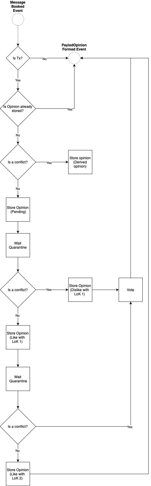

Welcome
Welcome to the GoShimmer docs!
GoShimmer is a prototype node software exploring the implementation of IOTA 2.0. This wiki helps the reader to understand the basic concepts and ideas behind the Coordicide and how its modules are implemented in GoShimmer.
Due to the prototypical nature of the project, things written today may not be reflecting how things are tomorrow. We seek to keep the docs as updated as possible, since it is also used as guide for our team. If you find any inconsistencies, feel free to contact us on Discord or better, create an issue on this repository.
FAQ
What is GoShimmer?
GoShimmer is a research and engineering project from the IOTA Foundation seeking to evaluate Coordicide concepts by implementing them in a node software.
What kind of confirmation time can I expect?
Since non conflicting transactions aren't even voted up on, they materialize after 2x the average network delay parameter we set. This means that a transaction usually confirms within a time boundary of ~10 seconds.
Where can I see the state of the GoShimmer testnet?
You can access the global analysis dashboard here showcasing the network graph and active ongoing votes on conflicts.
How much TPS can GoShimmer sustain?
The transactions per second metric is irrelevant for the current development state of GoShimmer. We are evaluating components from Coordicide and aren't currently interested in squeezing out every little ounce of performance. Meaning, we value simplicity over optimization since the primary goal is to evaluate Coordicide components. Even if we would put out a TPS number, it would simply not reflect an actual metric in a finished production ready node software.
How is spamming prevented?
The Coordicide lays out concepts for spam prevention through the means of rate control and such. However, in the current version, GoShimmer relies on PoW to prevent over saturation of the network. Usually doing the PoW for a message will take a couple of seconds on commodity hardware.
What happens if I issue a double spend?
If you have funds and are simultaneously issuing transactions spending those, then with high certainty your transactions are going to be rejected by the network. This goes even so far, that your funds will be blocked indefinitely (this might change in the future). If you issue a transaction, await the average network delay and then issue the double spend, then the first issued transaction should usually become confirmed and the 2nd one rejected.
Who's the target audience for operating a GoShimmer node?
We are mainly interested in individuals helping us out who have a strong IT background, since we simply lack time to help people with things like setting up their nodes, fixing their NAT configs, teaching them how to use Linux and so on. People interested in trying out the bleeding edge of IOTA development and providing meaningful feedback or problem reporting (in form of issues) are welcome. Again, our primary focus is on testing out Coordicide components rather than giving people of any knowledge-level the easiest way to operate a node.
Tutorials
Setting up a GoShimmer node
This page describes how to setup your own GoShimmer node in the GoShimmer testnet with Docker.
DISCLAIMER: Note that there will be breaking changes frequently (approx. bi-weekly) where the entire network needs to upgrade. If you don't have time to continuously monitor and upgrade your node, then running a GoShimmer node might not be for you. We want to emphasize that running a GoShimmer node requires proper knowledge in Linux and IT related topics such as networking and so on. It is not meant as a node to be run by people with little experience in the mentioned fields. Do not plan to run any production level services on your node/network.
| Contents |
|---|
| Why you should run a node |
| Installing GoShimmer with Docker |
| Running the GoShimmer node |
| Managing the GoShimmer node lifecycle |
| Setting up the Grafana dashboard |
Why you should run a node
Running a node in the GoShimmer testnet helps us in the following ways:
- It increases the amount of nodes in the network and thus lets it form a more realistic network.
- Your node will be configured to send debug log messages to a centralized logger from which we can assess and debug research questions and occurring problems.
- Your node is configured to send metric data to a centralized analysis server where we store information such as resource consumption, traffic, FPC vote context processing and so on. This data helps us further fostering the development of GoShimmer and assessing network behavior.
- If you expose your HTTP API port, you provide an entrypoint for other people to interact with the network.
Note that any metric data is anonymous.
Installing GoShimmer with Docker
Hardware Requirements
Note that we do not provide a Docker image or binaries for ARM based systems such as Raspberry Pis.
We recommend running GoShimmer on a x86 VPS with following minimum hardware specs:
- 2 cores / 4 threads
- 4 GB of memory
- 40 GB of disk space
A cheap CX21 Hetzner instance is thereby sufficient.
If you plan on running your GoShimmer node from home, please only do so if you know how to properly configure NAT on your router, as otherwise your node will not correctly participate in the network.
In the following sections we are going to use a CX21 Hetzner instance with Ubuntu 20.04 while being logged in as root
Lets first upgrade the packages on our system:
apt update && apt dist-upgrade -y
Install Docker
Install needed dependencies:
apt-get install \
apt-transport-https \
ca-certificates \
curl \
gnupg-agent \
software-properties-common
Add Docker’s official GPG key:
curl -fsSL https://download.docker.com/linux/ubuntu/gpg | apt-key add -
Verify that the GPG key matches:
apt-key fingerprint 0EBFCD88
pub rsa4096 2017-02-22 [SCEA]
9DC8 5822 9FC7 DD38 854A E2D8 8D81 803C 0EBF CD88
uid [ unknown] Docker Release (CE deb) <docker@docker.com>
sub rsa4096 2017-02-22 [S]
Add the actual repository:
add-apt-repository \
"deb [arch=amd64] https://download.docker.com/linux/ubuntu \
$(lsb_release -cs) \
stable"
Update the package index:
apt-get update
And finally, install docker:
apt-get install docker-ce docker-ce-cli containerd.io
On windows-subsystem for Linux (WSL2) it may be necessary to start docker seperately:
/etc/init.d/docker start
Note, this may not work on WSL1.
Check whether docker is running by executing docker ps:
docker ps
CONTAINER ID IMAGE COMMAND CREATED STATUS PORTS NAMES
Install Docker Compose
Docker compose gives us the ability to define our services with docker-compose.yml files instead of having to define all container parameters directly on the CLI.
Download docker compose:
curl -L "https://github.com/docker/compose/releases/download/1.26.0/docker-compose-$(uname -s)-$(uname -m)" -o /usr/local/bin/docker-compose
Make it executable:
chmod +x /usr/local/bin/docker-compose
Check that docker compose works:
docker-compose --version
docker-compose version 1.26.0, build d4451659
Define the docker-compose.yml
First, lets create a user defined bridged network. Unlike the already existing bridge network, the user defined one will have container name DNS resolution for containers within that network. This is useful if later we want to setup additional containers which need to speak with the GoShimmer container.
docker network create --driver=bridge shimmer
c726034d295c3df66803b92c71ca517a0cf0e3c65c1c6d84ee5fa34ae76cbcd4
Lets create a folder holding our docker-compose.yml:
mkdir /opt/goshimmer
Lets create a folder holding our database:
cd /opt/goshimmer
mkdir db
chmod 0777 db
Finally, lets create our docker-compose.yml:
nano docker-compose.yml
and add following content:
version: '3.3'
networks:
outside:
external:
name: shimmer
services:
goshimmer:
image: iotaledger/goshimmer:latest
container_name: goshimmer
hostname: goshimmer
stop_grace_period: 2m
volumes:
- "./db:/tmp/mainnetdb:rw"
- "/etc/localtime:/etc/localtime:ro"
ports:
# Autopeering
- "0.0.0.0:14626:14626/udp"
# Gossip
- "0.0.0.0:14666:14666/tcp"
# FPC
- "0.0.0.0:10895:10895/tcp"
# HTTP API
- "0.0.0.0:8080:8080/tcp"
# Dashboard
- "0.0.0.0:8081:8081/tcp"
# pprof profiling
- "0.0.0.0:6061:6061/tcp"
environment:
- ANALYSIS_CLIENT_SERVERADDRESS=ressims.iota.cafe:21888
- AUTOPEERING_PORT=14626
- DASHBOARD_BINDADDRESS=0.0.0.0:8081
- GOSSIP_PORT=14666
- WEBAPI_BINDADDRESS=0.0.0.0:8080
- PROFILING_BINDADDRESS=0.0.0.0:6061
- NETWORKDELAY_ORIGINPUBLICKEY=9DB3j9cWYSuEEtkvanrzqkzCQMdH1FGv3TawJdVbDxkd
- FPC_BINDADDRESS=0.0.0.0:10895
- PROMETHEUS_BINDADDRESS=0.0.0.0:9311
command: >
--skip-config=true
--autopeering.entryNodes=2PV5487xMw5rasGBXXWeqSi4hLz7r19YBt8Y1TGAsQbj@ressims.iota.cafe:15626,5EDH4uY78EA6wrBkHHAVBWBMDt7EcksRq6pjzipoW15B@entryshimmer.tanglebay.com:14646
--node.disablePlugins=
--node.enablePlugins=remotelog,networkdelay,spammer,prometheus
--logger.level=info
--logger.disableEvents=false
--logger.remotelog.serverAddress=ressims.iota.cafe:5213
--drng.pollen.instanceId=1
--drng.pollen.threshold=3
--drng.pollen.committeeMembers=AheLpbhRs1XZsRF8t8VBwuyQh9mqPHXQvthV5rsHytDG,FZ28bSTidszUBn8TTCAT9X1nVMwFNnoYBmZ1xfafez2z,GT3UxryW4rA9RN9ojnMGmZgE2wP7psagQxgVdA4B9L1P,4pB5boPvvk2o5MbMySDhqsmC2CtUdXyotPPEpb7YQPD7,64wCsTZpmKjRVHtBKXiFojw7uw3GszumfvC4kHdWsHga
--drng.xteam.instanceId=1339
--drng.xteam.threshold=4
--drng.xteam.committeeMembers=GUdTwLDb6t6vZ7X5XzEnjFNDEVPteU7tVQ9nzKLfPjdo,68vNzBFE9HpmWLb2x4599AUUQNuimuhwn3XahTZZYUHt,Dc9n3JxYecaX3gpxVnWb4jS3KVz1K1SgSK1KpV1dzqT1,75g6r4tqGZhrgpDYZyZxVje1Qo54ezFYkCw94ELTLhPs,CN1XLXLHT9hv7fy3qNhpgNMD6uoHFkHtaNNKyNVCKybf,7SmttyqrKMkLo5NPYaiFoHs8LE6s7oCoWCQaZhui8m16,CypSmrHpTe3WQmCw54KP91F5gTmrQEL7EmTX38YStFXx
networks:
- outside
If performance is a concern, you can also run your containers with
network_mode: "host", however, you must then adjust the hostnames in the configs for the corresponding containers and perhaps also create some iptable rules to block traffic from outside accessing your services directly.
Note how we are setting up NATs for different ports:
| Port | Functionality | Protocol |
|---|---|---|
| 14626 | Autopeering | UDP |
| 14666 | Gossip | TCP |
| 10895 | FPC | TCP/HTTP |
| 8080 | HTTP API | TCP/HTTP |
| 8081 | Dashboard | TCP/HTTP |
| 6061 | pprof HTTP API | TCP/HTTP |
It is important that the ports are correctly mapped so that the node for example actively participates in FPC votes or can gain inbound neighbors.
If the UDP NAT mapping is not configured correctly, GoShimmer will terminate with an error message stating to check the NAT configuration
Running the GoShimmer node
Within the /opt/goshimmer folder where the docker-compose.yml resides, simply execute:
docker-compose up -d
Pulling goshimmer (iotaledger/goshimmer:0.2.0)...
...
to start the GoShimmer node.
You should see your container running now:
CONTAINER ID IMAGE COMMAND CREATED STATUS PORTS NAMES
687f52b78cb5 iotaledger/goshimmer:0.2.0 "/run/goshimmer --sk…" 19 seconds ago Up 17 seconds 0.0.0.0:6061->6061/tcp, 0.0.0.0:8080-8081->8080-8081/tcp, 0.0.0.0:10895->10895/tcp, 0.0.0.0:14666->14666/tcp, 0.0.0.0:14626->14626/udp goshimmer
You can follow the log output of the node via:
docker logs -f --since=1m goshimmer
Syncing
When the node starts for the first time, it must synchronize its state with the rest of the network. GoShimmer currently uses the Tangle Time to help nodes determine their synced status.
Dashboard
The dashboard of your GoShimmer node should be accessible via http://<your-ip>:8081. If your node is still synchronizing, you might see a higher inflow of MPS.

After a while, your node's dashboard should also display up to 8 neighbors:

HTTP API
GoShimmer also exposes an HTTP API. To check whether that works correctly, you can access it via http://<your-ip>:8080/info which should return a JSON response in the form of:
{
"version": "v0.6.2",
"networkVersion": 30,
"tangleTime": {
"messageID": "6ndfmfogpH9H8C9X9Fbb7Jmuf8RJHQgSjsHNPdKUUhoJ",
"time": 1621879864032595415,
"synced": true
},
"identityID": "D9SPFofAGhA5V9QRDngc1E8qG9bTrnATmpZMdoyRiBoW",
"identityIDShort": "XBgY5DsUPng",
"publicKey": "9DB3j9cWYSuEEtkvanrzqkzCQMdH1FGv3TawJdVbDxkd",
"solidMessageCount": 74088,
"totalMessageCount": 74088,
"enabledPlugins": [
...
],
"disabledPlugins": [
...
],
"mana": {
"access": 1,
"accessTimestamp": "2021-05-24T20:11:05.451224937+02:00",
"consensus": 10439991680906,
"consensusTimestamp": "2021-05-24T20:11:05.451228137+02:00"
},
"manaDelegationAddress": "1HMQic52dz3xLY2aeDXcDhX53LgbsHghdfD8eGXR1qVHy",
"mana_decay": 0.00003209,
"scheduler": {
"running": true,
"rate": "5ms",
"nodeQueueSizes": {}
},
"rateSetter": {
"rate": 20000,
"size": 0
}
}
Managing the GoShimmer node lifecycle
Stopping the node
docker-compose stop
Resetting the node
docker-compose down
Upgrading the node
Ensure that the image version in the docker-compose.yml is latest then execute following commands:
docker-compose down
rm db/*
docker-compose pull
docker-compose up -d
Following log output
docker logs -f --since=1m goshimmer
Create a log.txt
docker logs goshimmer > log.txt
Update Grafana Dashboard
If you set up the Grafana dashboard for your node according to the next section "Setting up the Grafana dashboard", the following method will help you to update when a new version is released.
You have to manually copy the new dashboard file into /opt/goshimmer/grafana/dashboards directory.
Supposing you are at /opt/goshimmer/:
wget https://raw.githubusercontent.com/iotaledger/goshimmer/master/tools/monitoring/grafana/dashboards/local_dashboard.json
cp local_dashboard.json grafana/dashboards
Restart the grafana container:
docker restart grafana
Setting up the Grafana dashboard
Add Prometheus and Grafana Containers to docker-compose.yml
Append the following to the previously described docker-compose.yml file (make sure to also copy the space in front of "prometheus"/the entire whitespace):
prometheus:
image: prom/prometheus:latest
container_name: prometheus
restart: unless-stopped
ports:
- "9090:9090/tcp"
command:
- --config.file=/etc/prometheus/prometheus.yml
volumes:
- ./prometheus/prometheus.yml:/etc/prometheus/prometheus.yml:ro
- ./prometheus/data:/prometheus:rw
depends_on:
- goshimmer
networks:
- outside
grafana:
image: grafana/grafana:latest
container_name: grafana
restart: unless-stopped
environment:
# path to provisioning definitions can only be defined as
# environment variables for grafana within docker
- GF_PATHS_PROVISIONING=/var/lib/grafana/provisioning
ports:
- "3000:3000/tcp"
user: "472"
volumes:
- ./grafana:/var/lib/grafana:rw
networks:
- outside
Create Prometheus config
- Create a
prometheus/datadirectory in/opt/goshimmer:
cd /opt/goshimmer
mkdir -p prometheus/data
- Create a
prometheus.ymlinprometheusdirectory:
nano prometheus/prometheus.yml
The content of the file should be:
scrape_configs:
- job_name: goshimmer_local
scrape_interval: 5s
static_configs:
- targets:
- goshimmer:9311
- Add permissions to
prometheusconfig directory:
chmod -R 777 prometheus
Create Grafana configs
- Create necessary config dirs in
/opt/goshimmer/.
mkdir -p grafana/provisioning/datasources grafana/provisioning/dashboards grafana/provisioning/notifiers
mkdir -p grafana/dashboards
- Create a datasource configuration file in
grafana/provisioning/datasources:
nano grafana/provisioning/datasources/datasources.yaml
With the following content:
apiVersion: 1
datasources:
- name: Prometheus
type: prometheus
# <string, required> access mode. proxy or direct (Server or Browser in the UI). Required
access: proxy
orgId: 1
url: http://prometheus:9090
jsonData:
graphiteVersion: '1.1'
timeInterval: '1s'
# <string> json object of data that will be encrypted.
secureJsonData:
# <string> database password, if used
password:
# <string> basic auth password
basicAuthPassword:
version: 1
# <bool> allow users to edit datasources from the UI.
editable: true
- Create a dashboard configuration file in
grafana/provisioning/dashboards:
nano grafana/provisioning/dashboards/dashboards.yaml
With the following content:
apiVersion: 1
providers:
- name: 'Goshimmer Local Metrics'
orgId: 1
folder: ''
type: file
disableDeletion: false
editable: true
updateIntervalSeconds: 10
allowUiUpdates: true
options:
path: /var/lib/grafana/dashboards
- Add predefined GoShimmer Local Metrics Dashboard.
Head over to the GoShimmer repository and download local_dashboard.json.
wget https://raw.githubusercontent.com/iotaledger/goshimmer/master/tools/monitoring/grafana/dashboards/local_dashboard.json
cp local_dashboard.json grafana/dashboards
- Add permissions to Grafana config folder
chmod -R 777 grafana
Run GoShimmer with Prometheus and Grafana:
docker-compose up -d
The Grafana dashboard should be accessible at http://<your-ip>:3000.
Default login credentials are:
username: adminpassword: admin
How to obtain tokens from the faucet
The faucet dApp
The faucet is a dApp built on top of the value and communication layer. It sends IOTA tokens to addresses by listening to faucet request messages. A faucet message is a Message containing a special payload with an address encoded in Base58, the aManaPledgeID, the cManaPledgeID and a nonce as a proof that some Proof Of Work has been computed. The PoW is just a way to rate limit and avoid abuse of the Faucet. The Faucet has an additional protection by means of granting request to a given address only once. That means that, in order to receive funds from the Faucet multuple times, the address must be different.
After sending a faucet request message, you can check your balances via GetAddressUnspentOutputs().
Obtain tokens from the faucet
There are 3 ways to send a faucet request message to obtain IOTA tokens:
- Via the Go client library
- Via the HTTP API directly
- Via the wallet
Via the Go client library
Follow the instructions in Use the API to set up the API instance.
Example:
// provide your Base58 encoded destination address,
// the proof of work difficulty,
// the optional aManaPledgeID (Base58 encoded),
// the optional cManaPledgeID (Base58 encoded)
messageID, err := goshimAPI.SendFaucetRequest("JaMauTaTSVBNc13edCCvBK9fZxZ1KKW5fXegT1B7N9jY", 22, "2GtxMQD94KvDH1SJPJV7icxofkyV1njuUZKtsqKmtux5", "2GtxMQD94KvDH1SJPJV7icxofkyV1njuUZKtsqKmtux5")
---- or
// invoke go get github.com/iotaledger/goshimmer/client/wallet for wallet usage
// get the given address from a wallet instance and
connector := wallet.GenericConnector(wallet.NewWebConnector("http://localhost:8080"))
addr := wallet.New(connector).Seed().Address(0)
// use String() to get base58 representation
// the proof of work difficulty,
// the optional aManaPledgeID (Base58 encoded),
// the optional cManaPledgeID (Base58 encoded)
messageID, err := goshimAPI.SendFaucetRequest(addr.String(), 22, "2GtxMQD94KvDH1SJPJV7icxofkyV1njuUZKtsqKmtux5", "2GtxMQD94KvDH1SJPJV7icxofkyV1njuUZKtsqKmtux5")
Via the wallet
Currently, there is one cli-wallet that you can refer to the tutorial Command Line Wallet and two GUI wallets to use. One from the community member Dr-Electron ElectricShimmer and another from the foundation pollen-wallet. You can request funds from the faucet with these two implementations.
As for pollen-wallet, follow the instructions in pollen-wallet to build and execute the wallet, or download executable file directly in GoShimmer wallet release.
You can request funds by pressing the Request Funds in the wallet.
Note: You need to create a wallet first before requesting funds.

This may take a while to receive funds:

When the faucet request is successful, you can check the received balances:

Command Line Wallet
This page describes how to use the command line wallet (cli-wallet).
GoShimmer ships with a basic (golang) wallet library so that developers and testers can use it to move tokens around, create digital assets, NFTs or delegate funds. The cli-wallet is built by using this wallet library to demonstrate the capabilities of the protocol.
The main features in the wallet are:
- Requesting tokens from the faucet
- Creating digital assets
- Sending tokens or assets to addresses
- Creating, transferring or destroying Non-Fungible Tokens (NFTs)
- Managing NFT owned tokens or assets
- Delegating tokens or digital assets
In the following, we will go through these features one-by-one to aid the reader in learning how to use the wallet.
Disclaimer: The command line wallet and this tutorial is intended for developer audience, you at least have to be familiar with using a terminal.
Initializing the wallet
- Download the latest cli-wallet for the system of your choice from the GoShimmer GitHub Releases page.
- If needed, make the downloaded binary executable (
chmod +x <downloaded-binary>on linux). - For simplicity, we renamed the binary to
cli-walletin this tutorial.
The first time the wallet is started, it has to be initialized. This step involves generating a secret seed that is used
to generate addresses and sign transactions. The generated seed is persisted in wallet.dat after the first run.
The wallet can be configured by creating a config.json file in the directory of the executable:
{
"WebAPI": "http://127.0.0.1:8080",
"basic_auth": {
"enabled": false,
"username": "goshimmer",
"password": "goshimmer"
},
"reuse_addresses": false,
"faucetPowDifficulty": 25,
"assetRegistryNetwork": "nectar"
}
- The
WebAPItells the wallet which node API to communicate with. Set it to the url of a node API. - If the node has basic authentication enabled, you may configure your wallet with a username and password.
- The
resuse_addressesoption specifies if the wallet should treat addresses as reusable, or whether it should try to spend from any wallet address only once. faucetPowDifficultydefines the difficulty of the faucet request POW the wallet should do.assetRegistryNetworkdefines which asset registry network to use for pushing/fetching asset metadata to/from the registry. By default, the wallet chooses thenectarnetwork.
To perform the wallet initialization, run the init command of the wallet:
./cli-wallet init
If successful, you'll see the generated seed (encoded in base58) on your screen:
IOTA 2.0 DevNet CLI-Wallet 0.2
GENERATING NEW WALLET ... [DONE]
================================================================
!!! PLEASE CREATE A BACKUP OF YOUR SEED !!!
!!! !!!
!!! ExzYy6wS2k59dPh19Q9JiAf6z1jyDq1hieDEMmbUzkbE !!!
!!! !!!
!!! PLEASE CREATE A BACKUP OF YOUR SEED !!!
================================================================
CREATING WALLET STATE FILE (wallet.dat) ... [DONE]
Requesting Tokens
To get your hands on some precious testnet tokens, execute the request-funds command:
./cli-wallet request-funds
Output:
IOTA 2.0 DevNet CLI-Wallet 0.2
Requesting funds from faucet ... [PERFORMING POW] (this can take a while)
Requesting funds from faucet ... [DONE]
Once executed, you can check the balance of your wallet by running the balance command:
./cli-wallet balance
Output:
IOTA 2.0 DevNet CLI-Wallet 0.2
Available Token Balances
STATUS BALANCE COLOR TOKEN NAME
------ --------------- -------------------------------------------- -------------------------
[PEND] 1000000 I IOTA IOTA
The status of your token balance is pending ([PEND]) until the network has confirmed the transaction. Pending token balances
can not be spent, wait until status becomes [ OK ]. Call the balance command again to check for status changes.
Creating Digital Assets
Digital assets are tokens with a special attribute, namely, a color. A color is a sequence of 32 bytes represented as a base58 encoded string. The color of a token is derived from the unique transaction that created the asset, therefore, it is not possible to create assets with the same color in a subsequent transaction.
The transaction "minting" the assets can specify the amount of tokens to be created with the unique color. To create
assets with the cli-wallet, execute the create-asset command.
./cli-wallet create-asset -name MyUniqueToken -symbol MUT -amount 1000
- The
nameflag specifies the name of the asset. - The
symbolflag specifies the symbol of the asset. - The
amountflag specifies the amount of asset tokens to create.
Output:
IOTA 2.0 DevNet CLI-Wallet 0.2
Creating 1000 tokens with the color 'HJdkZkn6MKda9fNuXFQZ8Dzdzu1wvuSUQp8QX1AMH4wn' ... [DONE]
By executing the balance command shortly after, you will notice that the wallet balances changed:
IOTA 2.0 DevNet CLI-Wallet 0.2
Available Token Balances
STATUS BALANCE COLOR TOKEN NAME
------ --------------- -------------------------------------------- -------------------------
[PEND] 999000 IOTA IOTA
[PEND] 1000 HJdkZkn6MKda9fNuXFQZ8Dzdzu1wvuSUQp8QX1AMH4wn MyUniqueToken
1000 IOTA tokens were tagged with the color HJdkZkn6MKda9fNuXFQZ8Dzdzu1wvuSUQp8QX1AMH4wn to create MyUniqueToken.
The IOTA balance is decremented, but we have received assets in return for the used IOTAs. The created asset tokens
behave exactly like an IOTA token, they can be transferred without fees to any address.
Fetching Info of a Digital Asset
In the previous step we have created a digital asset called MyUniqueToken. It's name, symbol and initial supply
is known to the wallet because we provided this input while creating it. The network however doesn't store this
information, it only knows its unique identifier, the assetID (or color).
To help others discover the attributes of the asset, upon asset creation, the cli-wallet automatically sends this
information to a metadata registry service.
When you receive an asset unknown locally to your wallet, it queries this registry service for the metadata. You can
also query this metadata yourself by running the asset-info command in the wallet:
./cli-wallet asset-info -id HJdkZkn6MKda9fNuXFQZ8Dzdzu1wvuSUQp8QX1AMH4wn
IOTA 2.0 DevNet CLI-Wallet 0.2
Asset Info
PROPERTY VALUE
----------------------- --------------------------------------------
Name MyUniqueToken
Symbol MUT
AssetID(color) HJdkZkn6MKda9fNuXFQZ8Dzdzu1wvuSUQp8QX1AMH4wn
Initial Supply 1000
Creating Transaction G7ergf7YzVUSqQMS69jGexYtihbhpsvELEsPHWToYtKj
Network test
Sending Tokens and Assets
Funds in IOTA are tied to addresses. Only the owner of the private key behind the address is able to spend (move) the funds,
let them be IOTA tokens or digital assets. In previous steps, we have requested funds from the faucet, which actually sent
these tokens to an address provided by our wallet. When we created MyUniqueToken, the wallet internally generated a new address
to hold the assets. You may examine the addresses used by the wallet by executing the address -list command:
./cli-wallet address -list
Output:
IOTA 2.0 DevNet CLI-Wallet 0.2
INDEX ADDRESS SPENT
----- -------------------------------------------- -----
0 19ZD79gRvVzXpQV4QfpY5gefqgrBA4gp11weeyqbY89FK true
1 1BbywJFGFtDFXpZidmjN39d8cVWUskT2MhbFqSrmVs3qi false
Consequently, when you wish to send tokens, you need to provide an address where to send the tokens to.
Simple Send
Let's suppose your friend gave you their address 1E5Q82XTF5QGyC598br9oCj71cREyjD1CGUk2gmaJaFQt and you want to send
them some of your MyUniqueTokens. The send-funds command is the one you are looking for. Let's ask for some help on
what options we have:
./cli-wallet send-funds -help
Output:
IOTA 2.0 DevNet CLI-Wallet 0.2
USAGE:
cli-wallet send-funds [OPTIONS]
OPTIONS:
-access-mana-id string
node ID to pledge access mana to
-amount int
the amount of tokens that are supposed to be sent
-color string
(optional) color of the tokens to transfer (default "IOTA")
-consensus-mana-id string
node ID to pledge consensus mana to
-dest-addr string
destination address for the transfer
-fallb-addr string
(optional) fallback address that can claim back the (unspent) sent funds after fallback deadline
-fallb-deadline int
(optional) unix timestamp after which only the fallback address can claim the funds back
-help
show this help screen
-lock-until int
(optional) unix timestamp until which time the sent funds are locked from spending
You can ignore the mana pledge options, as your wallet can derive pledge IDs automatically. The more important options are:
amountis the amount of token you want to send,coloris an optional flag to send digital assets with a certain color. When not specified, it defaults to the color of the IOTA token.dest-addris the destination address for the transfer. You'll have to se this to the address your friend provided you with.fallb-addrandfallb-deadlineare optional flags to initiate a conditional transfer. A conditional transfer has a fallback deadline set, after which, onlyfallback-addresscan unlock the funds. Obviously, before the fallback deadline, it is only the receiver of the funds who can spend the funds. Such conditional transfers therefore have to be claimed by the receiving party before the deadline expires.lock-untilis an optional flag for a simple time locking mechanism: before the time lock expires, the funds are locked and can not be spent by the owner.
To simply send 500 MyUniqueTokens to your friend's address, run the following command:
./cli-wallet send-funds -amount 500 -color HJdkZkn6MKda9fNuXFQZ8Dzdzu1wvuSUQp8QX1AMH4wn -dest-addr 1E5Q82XTF5QGyC598br9oCj71cREyjD1CGUk2gmaJaFQt
Note, that you have to tell the wallet that MyUniqueTokens are of color HJdkZkn6MKda9fNuXFQZ8Dzdzu1wvuSUQp8QX1AMH4wn.
Time Locked Sending
What if you wanted to send your friend IOTA tokens, but you don't want them to spend it right away, so you impose a one-week
locking period. You should execute the send-funds command with the -lock-until flag.
The -lock-until flag expects a unix timestamp. On linux, to get a unix timestamp 7 days in the future, execute:
date -d "+7 days" +%s
1621426409
Noe that you have a unix timestamp, you can execute the transfer:
$ ./cli-wallet send-funds -amount 500 -dest-addr 1E5Q82XTF5QGyC598br9oCj71cREyjD1CGUk2gmaJaFQt -lock-until 1621426409
Conditional Sending
You have the option to specify a fallback unlocking mechanism on the tokens you send. If the recipient doesn't claim the funds before the fallback deadline you specify expires, the fallback address can essentially take back the tokens.
So let's assume you want to send your friend some IOTAs, but if your friend doesn't claim them for a week, you want to have them back. First things first, let's get the receive address of your wallet by running:
./cli-wallet address -receive
which will give you your wallets current receive address:
IOTA 2.0 DevNet CLI-Wallet 0.2
Latest Receive Address: 17KoEZbWoBLRjBsb6oSyrSKVVqd7DVdHUWpxfBFbHaMSm
Then we can execute the send with the proper parameters:
./cli-wallet send-funds -amount 500 -dest-addr 1E5Q82XTF5QGyC598br9oCj71cREyjD1CGUk2gmaJaFQt \
-fallb-addr 17KoEZbWoBLRjBsb6oSyrSKVVqd7DVdHUWpxfBFbHaMSm --fallb-deadline 1621426409
When you receive such conditional funds, they will be displayed on the balance page in the wallet:
./cli-wallet balance
IOTA 2.0 DevNet CLI-Wallet 0.2
Available Token Balances
STATUS BALANCE COLOR TOKEN NAME
------ --------------- -------------------------------------------- -------------------------
[ OK ] 500 I IOTA IOTA
Conditional Token Balances - execute `claim-conditional` command to sweep these funds into wallet
STATUS OWNED UNTIL BALANCE COLOR TOKEN NAME
------ ------------------------------ --------------- -------------------------------------------- -------------------------
[ OK ] 2021-05-19 14:13:29 +0200 CEST 500 I IOTA IOTA
As the output suggests, you need to execute the claim-conditional command to claim these funds:
./cli-wallet claim-conditional
IOTA 2.0 DevNet CLI-Wallet 0.2
Claiming conditionally owned funds... [DONE]
./cli-wallet balance
IOTA 2.0 DevNet CLI-Wallet 0.2
Available Token Balances
STATUS BALANCE COLOR TOKEN NAME
------ --------------- -------------------------------------------- -------------------------
[PEND] 500 IOTA IOTA
Creating NFTs
NFTs are non-fungible tokens that have unique properties. In IOTA, NFTs are represented as non-forkable, uniquely identifiable outputs. When such an output is spent, the transaction spending it is only valid if it satisfies the constraints defined in the outputs. One such constraint is, that immutable data attached to the output can not change. Therefore, we can create an NFT and record immutable metadata in its output.
Let's create our first NFT with the help of the cli-wallet.
./cli-wallet create-nft -help
IOTA 2.0 DevNet CLI-Wallet 0.2
USAGE:
cli-wallet create-nft [OPTIONS]
OPTIONS:
-access-mana-id string
node ID to pledge access mana to
-color string
color of the tokens that should be deposited into the nft upon creation (on top of the minimum required) (default "IOTA")
-consensus-mana-id string
node ID to pledge consensus mana to
-help
show this help screen
-immutable-data string
path to the file containing the immutable data that shall be attached to the nft
-initial-amount int
the amount of tokens that should be deposited into the nft upon creation (on top of the minimum required)
None of the flags are strictly required to mint an NFT, so we could just execute the command as it is, however, in most
cases, you'll want to attach immutable metadata to it, which is only possible during creation. Each NFT must have some
IOTAs backing it (locked into its output) to prevent bloating the ledger database. Currently, the minimum requirement
is 100 IOTA tokens, but bear in mind that it might change in the future.
Nevertheless, on top of the minimum required amount IOTAs, you can lock any additional funds into the NFT. To do so,
use the -initial-amount and -color flags.
To attach immutable data to the NFT, you can define a path to a file that holds the metadata. The wallet will read the
byte content of the file and attach it to the NFT. Note, that currently the maximum allowed metadata file size is 4
kilobytes. Use the -immutable-data flag to specify a path to a file that holds the metadata.
Let's create our very first NFT. We create an nft_metadata.json file in the directory of the cli-wallet with the
following content:
{
"title": "Asset Metadata",
"type": "object",
"properties": {
"name": {
"type": "string",
"description": "MyFirstNFT"
},
"description": {
"type": "string",
"description": "My very first NFT that has this metadata attached to it."
},
"image": {
"type": "string",
"description": "<uri to resource holding the content of my first NFT>"
}
}
}
The above JSON file is just a template, you can define any binary data that fits the size limit to be attached to the NFT.
To create the NFT, simply execute:
./cli-wallet create-nft -immutable-data nft_metadata.json
IOTA 2.0 DevNet CLI-Wallet 0.2
Created NFT with ID: gSfeBrWp1HwDLwSL7rt1qEMM59YBFZ4iBgAqHuqaQHo5
Creating NFT ... [DONE]
The created NFT's unique identifier is gSfeBrWp1HwDLwSL7rt1qEMM59YBFZ4iBgAqHuqaQHo5 that is also a valid IOTA address.
Navigate to a node dashboard/explorer and search for the address. On a node dashboard, you would see something like this:

The immutable data field contains the attached binary metadata (encoded in base64 in the node dashboard).
The NFT is also displayed on the balance page of the cli-wallet:
./cli-wallet balance
IOTA 2.0 DevNet CLI-Wallet 0.2
Available Token Balances
STATUS BALANCE COLOR TOKEN NAME
------ --------------- -------------------------------------------- -------------------------
[ OK ] 500 MUT HJdkZkn6MKda9fNuXFQZ8Dzdzu1wvuSUQp8QX1AMH4wn MyUniqueToken
[ OK ] 996200 I IOTA IOTA
Owned NFTs (Governance Controlled Aliases)
STATUS NFT ID (ALIAS ID) BALANCE COLOR TOKEN NAME
------ -------------------------------------------- --------------- -------------------------------------------- -------------------------
[ OK ] gSfeBrWp1HwDLwSL7rt1qEMM59YBFZ4iBgAqHuqaQHo5 100 IOTA IOTA
Transferring NFTs
Any valid IOTA address can own NFTs, so how can we send it?
The transfer-nft command of the cli-wallet comes to the rescue:
./cli-wallet transfer-nft -help
IOTA 2.0 DevNet CLI-Wallet 0.2
USAGE:
cli-wallet transfer-nft [OPTIONS]
OPTIONS:
-access-mana-id string
node ID to pledge access mana to
-consensus-mana-id string
node ID to pledge consensus mana to
-dest-addr string
destination address for the transfer
-help
show this help screen
-id string
unique identifier of the nft that should be transferred
-reset-delegation
defines whether to reset the delegation status of the alias being transferred
-reset-state-addr
defines whether to set the state address to dest-addr
There are 2 mandatory flags that need to be provided for a valid transfer: -id and -dest-addr. The former is the
unique identifier of the NFT that you wish to transfer, the latter is the destination address.
Let's transfer the NFT to our friend's address:
./cli-wallet transfer-nft -id gSfeBrWp1HwDLwSL7rt1qEMM59YBFZ4iBgAqHuqaQHo5 -dest-addr 1E5Q82XTF5QGyC598br9oCj71cREyjD1CGUk2gmaJaFQt
IOTA 2.0 DevNet CLI-Wallet 0.2
Transferring NFT... [DONE]
Destroying NFTs
The owner of an NFT has the ability to destroy it. When an NFT is destroyed, all of its balance is transferred to the current owner, and the alias output representing the NFT is spent without creating a corresponding next alias output.
The command to destroy an NFT is called destroy-nft in the cli-wallet:
./cli-wallet destroy-nft -help
IOTA 2.0 DevNet CLI-Wallet 0.2
USAGE:
cli-wallet destroy-nft [OPTIONS]
OPTIONS:
-access-mana-id string
node ID to pledge access mana to
-consensus-mana-id string
node ID to pledge consensus mana to
-help
show this help screen
-id string
unique identifier of the nft that should be destroyed
Let's create an NFT and destroy it right after:
./cli-wallet create-nft
IOTA 2.0 DevNet CLI-Wallet 0.2
Created NFT with ID: bdrvyKvaE6CZUEbdRDK57oBCRb2SLUyE8padFGxrV3zg
Creating NFT ... [DONE]
Then let's wait until the balance page shows that the NFT status is OK:
./cli-wallet balance
IOTA 2.0 DevNet CLI-Wallet 0.2
Available Token Balances
STATUS BALANCE COLOR TOKEN NAME
------ --------------- -------------------------------------------- -------------------------
[ OK ] 500 MUT HJdkZkn6MKda9fNuXFQZ8Dzdzu1wvuSUQp8QX1AMH4wn MyUniqueToken
[ OK ] 996100 I IOTA IOTA
Owned NFTs (Governance Controlled Aliases)
STATUS NFT ID (ALIAS ID) BALANCE COLOR TOKEN NAME
------ -------------------------------------------- --------------- -------------------------------------------- -------------------------
[ OK ] bdrvyKvaE6CZUEbdRDK57oBCRb2SLUyE8padFGxrV3zg 100 IOTA IOTA
Finally, let's destroy it:
./cli-wallet destroy-nft -id bdrvyKvaE6CZUEbdRDK57oBCRb2SLUyE8padFGxrV3zg
IOTA 2.0 DevNet CLI-Wallet 0.2
Destroying NFT... [DONE]
Managing NFT Owned Assets
An NFT is not only a valid IOTA address via its NFT ID, but it is stored as an output in the ledger. Therefore, the NFT is not only capable of receiving funds to its address, but the owner can directly manage the funds held in the NFT output.
- The owner might deposit assets into an NFT, or withdraw assets from there, essentially using it as a standalone wallet.
- Other users in the network can send any asset to the NFT address, that will be owned by the NFT. The owner might choose to deposit such funds into the NFT or sweep them into their own wallet.
Deposit Assets Into Owned NFT
Suppose I have created an NFT with the minimum required 100 IOTA balance. Later I figure, that I would like to keep some
assets in the NFT. I can deposit the assets via the deposit-to-nft command:
./cli-wallet deposit-to-nft -help
IOTA 2.0 DevNet CLI-Wallet 0.2
USAGE:
cli-wallet deposit-to-nft [OPTIONS]
OPTIONS:
-access-mana-id string
node ID to pledge access mana to
-amount int
the amount of tokens that are supposed to be deposited
-color string
color of funds to deposit (default "IOTA")
-consensus-mana-id string
node ID to pledge consensus mana to
-help
show this help screen
-id string
unique identifier of the nft to deposit to
To deposit some previously created MyUniqueTokens into the NFT, we need to specify the following flags:
-idthe NFT ID to deposit to-amountamount of assets to deposit-colorasset color to deposit
Balance before the deposit looks like this:
./cli-wallet balance
IOTA 2.0 DevNet CLI-Wallet 0.2
Available Token Balances
STATUS BALANCE COLOR TOKEN NAME
------ --------------- -------------------------------------------- -------------------------
[ OK ] 996300 I IOTA IOTA
[ OK ] 500 MUT HJdkZkn6MKda9fNuXFQZ8Dzdzu1wvuSUQp8QX1AMH4wn MyUniqueToken
Owned NFTs (Governance Controlled Aliases)
STATUS NFT ID (ALIAS ID) BALANCE COLOR TOKEN NAME
------ -------------------------------------------- --------------- -------------------------------------------- -------------------------
[ OK ] f1BW8jcdDn3staviCVbVz54NqVwsshb5gpNLqY6Rrgrg 100 IOTA IOTA
The actual deposit operation:
./cli-wallet deposit-to-nft -id f1BW8jcdDn3staviCVbVz54NqVwsshb5gpNLqY6Rrgrg -amount 500 -color HJdkZkn6MKda9fNuXFQZ8Dzdzu1wvuSUQp8QX1AMH4wn
IOTA 2.0 DevNet CLI-Wallet 0.2
Depositing funds into NFT ... [DONE]
./cli-wallet balance
IOTA 2.0 DevNet CLI-Wallet 0.2
Available Token Balances
STATUS BALANCE COLOR TOKEN NAME
------ --------------- -------------------------------------------- -------------------------
[ OK ] 996300 I IOTA IOTA
Owned NFTs (Governance Controlled Aliases)
STATUS NFT ID (ALIAS ID) BALANCE COLOR TOKEN NAME
------ -------------------------------------------- --------------- -------------------------------------------- -------------------------
[ OK ] f1BW8jcdDn3staviCVbVz54NqVwsshb5gpNLqY6Rrgrg 100 IOTA IOTA
500 HJdkZkn6MKda9fNuXFQZ8Dzdzu1wvuSUQp8QX1AMH4wn MyUniqueToken
Withdrawing Assets From NFT
The reverse of the deposit command looks quite similar:
./cli-wallet withdraw-from-nft -help
IOTA 2.0 DevNet CLI-Wallet 0.2
USAGE:
cli-wallet withdraw-from-nft [OPTIONS]
OPTIONS:
-access-mana-id string
node ID to pledge access mana to
-amount int
the amount of tokens that are supposed to be withdrew
-color string
color of funds to withdraw (default "IOTA")
-consensus-mana-id string
node ID to pledge consensus mana to
-dest-addr string
(optional) address to send the withdrew tokens to
-help
show this help screen
-id string
unique identifier of the nft to withdraw from
Therefore, to withdraw the previously deposited MyUniqueTokens, execute the following command:
./cli-wallet withdraw-from-nft -id f1BW8jcdDn3staviCVbVz54NqVwsshb5gpNLqY6Rrgrg -amount 500 -color HJdkZkn6MKda9fNuXFQZ8Dzdzu1wvuSUQp8QX1AMH4wn
IOTA 2.0 DevNet CLI-Wallet 0.2
Withdrawing funds from NFT... [DONE]
Once the transaction confirms, you'll see the updated balance:
./cli-wallet balance
IOTA 2.0 DevNet CLI-Wallet 0.2
Available Token Balances
STATUS BALANCE COLOR TOKEN NAME
------ --------------- -------------------------------------------- -------------------------
[ OK ] 500 MUT HJdkZkn6MKda9fNuXFQZ8Dzdzu1wvuSUQp8QX1AMH4wn MyUniqueToken
[ OK ] 996300 I IOTA IOTA
Owned NFTs (Governance Controlled Aliases)
STATUS NFT ID (ALIAS ID) BALANCE COLOR TOKEN NAME
------ -------------------------------------------- --------------- -------------------------------------------- -------------------------
[ OK ] f1BW8jcdDn3staviCVbVz54NqVwsshb5gpNLqY6Rrgrg 100 IOTA IOTA
Note, that if the withdrawal leaves less, than the minimum required funds in the NFT, the transaction fails.
Sweep NFT Owned Funds
We have previously explained, that an NFT can receive funds to its NFT ID because it is a valid IOTA address. Such
funds can be collected by the owner of the NFT with the sweep-nft-owned-funds command:
./cli-wallet sweep-nft-owned-funds -help
IOTA 2.0 DevNet CLI-Wallet 0.2
USAGE:
cli-wallet sweep-nft-owned-funds [OPTIONS]
OPTIONS:
-access-mana-id string
node ID to pledge access mana to
-consensus-mana-id string
node ID to pledge consensus mana to
-help
show this help screen
-id string
unique identifier of the nft that should be checked for outputs with funds
-to string
optional address where to sweep
The only mandatory flag is the -id, as it specifies which NFT ID (address) to scan for funds.
Let's suppose that are friend sent funds form their wallet to our NFT f1BW8jcdDn3staviCVbVz54NqVwsshb5gpNLqY6Rrgrg
with a normal send-funds command:
./your-friends-wallet send-funds -amount 1000000 -dest-addr f1BW8jcdDn3staviCVbVz54NqVwsshb5gpNLqY6Rrgrg
We can execute the sweep-nft-owned-funds command to transfer these funds into our wallet:
./cli-wallet sweep-nft-owned-funds -id f1BW8jcdDn3staviCVbVz54NqVwsshb5gpNLqY6Rrgrg
IOTA 2.0 DevNet CLI-Wallet 0.2
Sweeping NFT owned funds... [DONE]
The wallet balance should be updated, the wallet contains 1 MI more:
./cli-wallet balance
IOTA 2.0 DevNet CLI-Wallet 0.2
Available Token Balances
STATUS BALANCE COLOR TOKEN NAME
------ --------------- -------------------------------------------- -------------------------
[ OK ] 500 MUT HJdkZkn6MKda9fNuXFQZ8Dzdzu1wvuSUQp8QX1AMH4wn MyUniqueToken
[ OK ] 1996300 I IOTA IOTA
Owned NFTs (Governance Controlled Aliases)
STATUS NFT ID (ALIAS ID) BALANCE COLOR TOKEN NAME
------ -------------------------------------------- --------------- -------------------------------------------- -------------------------
[ OK ] f1BW8jcdDn3staviCVbVz54NqVwsshb5gpNLqY6Rrgrg 100 IOTA IOTA
Sweep NFT Owned NFTs
NFTs can own other NFTs, that in turn can own other NFTs and so on... wow, NFTception!
Let's say your friend created an NFT, and transferred it to your NFT's ID f1BW8jcdDn3staviCVbVz54NqVwsshb5gpNLqY6Rrgrg.
./your-friends-wallet create-nft
IOTA 2.0 DevNet CLI-Wallet 0.2
Created NFT with ID: faf9tkdBfcTv2AgPm3Zt8duX4iUGKjqbEyrdBYsUb2hi
Creating NFT ... [DONE]
./your-friends-wallet transfer-nft -id faf9tkdBfcTv2AgPm3Zt8duX4iUGKjqbEyrdBYsUb2hi -dest-addr f1BW8jcdDn3staviCVbVz54NqVwsshb5gpNLqY6Rrgrg
IOTA 2.0 DevNet CLI-Wallet 0.2
Transferring NFT... [DONE]
Your NFT f1BW8jcdDn3staviCVbVz54NqVwsshb5gpNLqY6Rrgrg now owns NFT faf9tkdBfcTv2AgPm3Zt8duX4iUGKjqbEyrdBYsUb2hi.
To sweep the owned NFT into your wallet, execute the sweep-nft-owned-nft command:
./cli-wallet sweep-nft-owned-nfts -help
IOTA 2.0 DevNet CLI-Wallet 0.2
USAGE:
cli-wallet sweep-nft-owned-nfts [OPTIONS]
OPTIONS:
-access-mana-id string
node ID to pledge access mana to
-consensus-mana-id string
node ID to pledge consensus mana to
-help
show this help screen
-id string
unique identifier of the nft that should be checked for owning other nfts
-to string
optional address where to sweep
All you need to specify is the -id of your NFT that you would like to check for owned NFTs:
./cli-wallet sweep-nft-owned-nfts -id f1BW8jcdDn3staviCVbVz54NqVwsshb5gpNLqY6Rrgrg
IOTA 2.0 DevNet CLI-Wallet 0.2
Swept NFT faf9tkdBfcTv2AgPm3Zt8duX4iUGKjqbEyrdBYsUb2hi into the wallet
Sweeping NFT owned NFTs... [DONE]
That's it, your wallet owns faf9tkdBfcTv2AgPm3Zt8duX4iUGKjqbEyrdBYsUb2hi now. If this NFT owned other funds or NFTs,
you would be able to sweep them into your wallet just like you did for f1BW8jcdDn3staviCVbVz54NqVwsshb5gpNLqY6Rrgrg.
./cli-wallet balance
IOTA 2.0 DevNet CLI-Wallet 0.2
Available Token Balances
STATUS BALANCE COLOR TOKEN NAME
------ --------------- -------------------------------------------- -------------------------
[ OK ] 1996300 I IOTA IOTA
[ OK ] 500 MUT HJdkZkn6MKda9fNuXFQZ8Dzdzu1wvuSUQp8QX1AMH4wn MyUniqueToken
Owned NFTs (Governance Controlled Aliases)
STATUS NFT ID (ALIAS ID) BALANCE COLOR TOKEN NAME
------ -------------------------------------------- --------------- -------------------------------------------- -------------------------
[ OK ] f1BW8jcdDn3staviCVbVz54NqVwsshb5gpNLqY6Rrgrg 100 IOTA IOTA
[ OK ] faf9tkdBfcTv2AgPm3Zt8duX4iUGKjqbEyrdBYsUb2hi 100 IOTA IOTA
Delegating Assets
The primary use case of fund delegation in Coordicide is to enable refreshing a node's access mana without requiring the use of a master key that has full control over the funds. A delegated key can not spend the funds, but can "refresh" the outputs holding the funds in a transaction that can pledge mana to any arbitrary nodes.
A token holder can therefore keep their funds in secure cold storage, while delegating them to a node or third party to utilize the mana generated by the funds. Assuming there is demand for access mana in the network, the holder of the assets can then sell the generated mana to realize return on their assets.
Delegating funds via the cli-wallet is rather simple: you just need to execute the delegate-funds command. By default,
the cli-wallet will delegate funds to the node that the wallet is connected to, unless you specify a delegation
address via the -del-addr flag.
specify a valid IOTA address where to delegate to.
./cli-wallet delegate-funds -help
IOTA 2.0 DevNet CLI-Wallet 0.2
USAGE:
cli-wallet delegate-funds [OPTIONS]
OPTIONS:
-access-mana-id string
node ID to pledge access mana to
-amount int
the amount of tokens that should be delegated
-color string
color of the tokens that should delegated (default "IOTA")
-consensus-mana-id string
node ID to pledge consensus mana to
-del-addr string
address to delegate funds to. when omitted, wallet delegates to the node it is connected to
-help
show this help screen
-until int
unix timestamp until which the delegated funds are timelocked
- Mandatory parameter is only the
-amount. - Use the
-del-addrflag to delegate to arbitrary address. - You may specify a delegation deadline via the
-untilflag. If this is set, the delegated party can not unlock the funds for refreshing mana after the deadline expired, but the neither can the owner reclaim the funds before that. If the-untilflag is omitted, the delegation is open-ended, the owner can reclaim the delegated funds at any time. - You can specify a certain asset to be delegated (
-color), default is IOTA.
Let's delegate some funds to an address provided by a node in the network, 1EqJf5K1LJ6bVMCrxxxdZ6VNYoBTvEoXgxnbLJe7aqajc:
./cli-wallet delegate-funds -amount 1000000 -del-addr 1EqJf5K1LJ6bVMCrxxxdZ6VNYoBTvEoXgxnbLJe7aqajc
IOTA 2.0 DevNet CLI-Wallet 0.2
Delegating to address 1EqJf5K1LJ6bVMCrxxxdZ6VNYoBTvEoXgxnbLJe7aqajc
Delegation ID is: tGoTKjt2y277ssKax9stsZXfLGdf8bPj3TZFaUDcAEwK
Delegating funds... [DONE]
If we omitted the -del-addr flag and its value, the wallet would have asked the node it is connected to, to provide
a delegation address. You can get this delegation address yourself as well by running the server-status command in
the wallet, or querying the /info endpoint of a node through the webapi.
./cli-wallet server-status
IOTA 2.0 DevNet CLI-Wallet 0.2
Server ID: 2GtxMQD94KvDH1SJPJV7icxofkyV1njuUZKtsqKmtux5
Server Synced: true
Server Version: v0.5.9
Delegation Address: 1HG9Z5NSiWTmT1HG65JLmn1jxQj7xUcVppKKi2vHAZLmr
By running the balance command, we can see the delegated funds:
./cli-wallet balance
IOTA 2.0 DevNet CLI-Wallet 0.2
Available Token Balances
STATUS BALANCE COLOR TOKEN NAME
------ --------------- -------------------------------------------- -------------------------
[ OK ] 500 MUT HJdkZkn6MKda9fNuXFQZ8Dzdzu1wvuSUQp8QX1AMH4wn MyUniqueToken
[ OK ] 996500 I IOTA IOTA
Delegated Funds
STATUS DELEGATION ID (ALIAS ID) BALANCE COLOR TOKEN NAME
------ -------------------------------------------- --------------- -------------------------------------------- -------------------------
[ OK ] tGoTKjt2y277ssKax9stsZXfLGdf8bPj3TZFaUDcAEwK 1000000 IOTA IOTA
To be able to reclaim the delegated funds, we will need the delegation ID of the delegated funds.
Reclaiming Delegated Assets
To reclaim delegated funds, you have to tell the cli-wallet the delegation ID that is displayed on the balance page.
Use the reclaim-delegated command once you got the delegation ID:
./cli-wallet reclaim-delegated -help
IOTA 2.0 DevNet CLI-Wallet 0.2
USAGE:
cli-wallet reclaim-delegated [OPTIONS]
OPTIONS:
-access-mana-id string
node ID to pledge access mana to
-consensus-mana-id string
node ID to pledge consensus mana to
-help
show this help screen
-id string
delegation ID that should be reclaimed
-to-addr string
optional address where to send reclaimed funds, wallet receive address by default
To reclaim the funds delegated in the previous section, simply run:
./cli-wallet reclaim-delegated -id tGoTKjt2y277ssKax9stsZXfLGdf8bPj3TZFaUDcAEwK
IOTA 2.0 DevNet CLI-Wallet 0.2
Reclaimed delegation ID is: tGoTKjt2y277ssKax9stsZXfLGdf8bPj3TZFaUDcAEwK
Reclaiming delegated fund... [DONE]
The balance should appear in the Available Balances section of the balance page:
./cli-wallet balance
IOTA 2.0 DevNet CLI-Wallet 0.2
Available Token Balances
STATUS BALANCE COLOR TOKEN NAME
------ --------------- -------------------------------------------- -------------------------
[ OK ] 500 MUT HJdkZkn6MKda9fNuXFQZ8Dzdzu1wvuSUQp8QX1AMH4wn MyUniqueToken
[ OK ] 1996500 I IOTA IOTA
Common Flags
As you may have noticed, there are some universal flags in many commands, namely:
-helpthat brings up the command usage and help information,access-mana-idthat is the nodeID to which the transaction should pledge access mana to, andconsensus-mana-idthat is the nodeID to which the transaction should pledge consensus mana to.
The latter teo are determined by default by your wallet depending on which node you connect it to. However, if that node doesn't filter user submitted transactions based on the mana pledge IDs, you are free to define which node to pledge mana to.
Command Reference
balance
Show the balances held by this wallet.
send-funds
Initiate a transfer of tokens or assets (funds).
consolidate-funds
Consolidate all available funds to one wallet address.
claim-conditional
Claim (move) conditionally owned funds into the wallet.
request-funds
Request funds from the testnet-faucet.
create-asset
Create an asset in the form of colored coins.
delegate-funds
Delegate funds to an address.
reclaim-delegated
Reclaim previously delegated funds.
create-nft
Create an NFT as an unforkable alias output.
transfer-nft
Transfer the ownership of an NFT.
destroy-nft
Destroy an NFT.
deposit-to-nft
Deposit funds into an NFT.
withdraw-from-nft
Withdraw funds from an NFT.
sweep-nft-owned-funds
Sweep all available funds owned by NFT into the wallet.
sweep-nft-owned-nfts
weep all available NFTs owned by NFT into the wallet.
address
Start the address manager of this wallet.
init
Generate a new wallet using a random seed.
server-status
Display the server status.
pending-mana
Display current pending mana of all outputs in the wallet grouped by address.
pledge-id
Query nodeIDs accepted as pledge IDs in transaction by the node (server).
help
Display this help screen.
How to create dApps
This guide is meant for developers familiar with the Go programming language.
DISCLAIMER: GoShimmer is a rapidly evolving prototype software. As such, the described steps here will likely change in the future. Specifically, we are envisioning to ease the process of dApp creation and installation for node owners. Furthermore, the current approach is in no way hardened and should be seen as purely experimental. Do not write any software for actual production use.
Intro
Throughout this tutorial we will learn how to write simple dApps as GoShimmer plugins. We provide two different examples: a chat dApp and a network delay dApp. Hope you enjoy the reading!
Chat dApp
In this guide we are going to explain how to write a very simple chat dApp so that anyone, connected to a GoShimmer node, could write a short message and read what is being written into the Tangle.
The complete source code of the application can be found in the repository.
Overview
Our chat dApp can be implemented in a few simple steps:
- A node sends a special message containing a chat payload via the Tangle.
- Upon receipt, every other node in the network processes this message and - if the chat dApp/plugin is enabled - triggers an event that a chat message has been received.
Within GoShimmer we need 3 components to realize this undertaking. First, we need to define and register a chat payload type. Second, we need a way to initiate a message with a chat payload via the web API. And lastly, we need to listen for chat payloads and take appropriate action.
If a node does not have our chat dApp installed and activated, the chat message will be simply treated as a raw data message without any particular meaning. In general that means that in order for a dApp to be useful, node owners need to explicitly install it. In our case we simply ship it with GoShimmer as a plugin.
Define & Register The Chat Payload
First, we need to decide what data our chat payload should contain and define the byte layout accordingly.
In our case we need a From field to identify the sender of the message (e.g., a nickname, the ID of the node); a To field to identify an optional recipient of the message (e.g., a chat room ID, a nickname); a Message field containing the actual chat message.
Therefore, we can define the byte layout as follows:
length<uint32-4bytes> // every payload has to have this
type<uint32-4bytes> // every payload has to have this
From<string>
To<string>
Message<string>
Next, we need to fulfill the Payload interface and provide the functionality to read/write a payload from/to bytes. The hive.go/marshalutil package simplifies this step tremendously.
// Payload represents the generic interface for a payload that can be embedded in Messages of the Tangle.
type Payload interface {
// Type returns the Type of the Payload.
Type() Type
// Bytes returns a marshaled version of the Payload.
Bytes() []byte
// String returns a human readable version of the Payload.
String() string
}
Finally, we need to create and register our chat payload type so that it can be properly unmarshalled.
// Type represents the identifier which addresses the chat payload type.
var Type = payload.NewType(payloadType, PayloadName, func(data []byte) (payload payload.Payload, err error) {
var consumedBytes int
payload, consumedBytes, err = FromBytes(data)
if err != nil {
return nil, err
}
if consumedBytes != len(data) {
return nil, errors.New("not all payload bytes were consumed")
}
return
})
Create The Web API Endpoints
In order to issue a message with our newly created chat payload, we need to create a web API endpoint. Here we simply bind a json request containing the necessary fields: from, to and message and then issue it into the Tangle with messagelayer.Tangle().IssuePayload(chatPayload). This plugin takes care of all the specifics and employs the MessageFactory to, i.a., select tips and sign the message.
webapi.Server().POST("chat", SendChatMessage)
// SendChatMessage sends a chat message.
func SendChatMessage(c echo.Context) error {
req := &Request{}
if err := c.Bind(req); err != nil {
return c.JSON(http.StatusBadRequest, jsonmodels.NewErrorResponse(err))
}
chatPayload := NewPayload(req.From, req.To, req.Message)
msg, err := messagelayer.Tangle().IssuePayload(chatPayload)
if err != nil {
return c.JSON(http.StatusBadRequest, Response{Error: err.Error()})
}
return c.JSON(http.StatusOK, Response{MessageID: msg.ID().Base58()})
}
Listen for chat payloads
Every dApp listens for messages from the communication layer and when its payload type is detected, takes appropriate action. For us that means listening for chat payload type and triggering an event if we encounter any. In this case the event will contain information about the chat message and also the MessageID in terms of a Tangle message as well as its issuance timestamp.
func onReceiveMessageFromMessageLayer(messageID tangle.MessageID) {
var chatEvent *ChatEvent
messagelayer.Tangle().Storage.Message(messageID).Consume(func(message *tangle.Message) {
if message.Payload().Type() != Type {
return
}
chatPayload, _, err := FromBytes(message.Payload().Bytes())
if err != nil {
app.LogError(err)
return
}
chatEvent = &ChatEvent{
From: chatPayload.From,
To: chatPayload.To,
Message: chatPayload.Message,
Timestamp: message.IssuingTime(),
MessageID: message.ID().Base58(),
}
})
if chatEvent == nil {
return
}
app.LogInfo(chatEvent)
Events.MessageReceived.Trigger(chatEvent)
}
Network Delay dApp
In this guide we are going to explain how to write a very simple dApp based on an actual dApp we are using in GoShimmer to help us measure the network delay, i.e., how long it takes for every active node in the network to receive a message. Gathering this data will enable us to set realistic parameters for FCoB.
The complete source code of the application can be found in the repository.
Overview
Our network delay dApp should help us to identify the time it takes for every active node to receive and process a message. That can be done in a few simple steps:
- A (known) node sends a special message containing a network delay payload.
- Upon receipt, every other node in the network answers to the special message by posting its current time to our remote logger.
- For simplicity, we gather the information in an ELK stack. This helps us to easily interpret and analyze the data.
Within GoShimmer we need 3 components to realize this undertaking. First, we need to define and register a network delay payload type. Second, we need a way to initiate a message with a network delay payload via the web API. And lastly, we need to listen for network delay payloads and take appropriate action.
If a node does not have our dApp installed and activated, the message will be simply treated as a raw data message without any particular meaning. In general that means that in order for a dApp to be useful, node owners need to explicitly install it. In our case we simply ship it with GoShimmer as a plugin.
Define & Register The Network Delay Object
First, we need to decide what data our network delay payload should contain and define the byte layout accordingly.
In our case we need an ID to identify a network delay message and the sent time of the initiator.
Therefore, we can define the byte layout as follows:
length<uint32-4bytes> // every payload has to have this
type<uint32-4bytes> // every payload has to have this
id<32bytes>
sentTime<int64-8bytes>
Next, we need to fulfill the Payload interface and provide the functionality to read/write a payload from/to bytes. The hive.go/marshalutil package simplifies this step tremendously.
// Payload represents the generic interface for a payload that can be embedded in Messages of the Tangle.
type Payload interface {
// Type returns the Type of the Payload.
Type() Type
// Bytes returns a marshaled version of the Payload.
Bytes() []byte
// String returns a human readable version of the Payload.
String() string
}
Finally, we need to create and register our network delay payload type so that it can be properly unmarshalled.
// Type represents the identifier which addresses the network delay Object type.
var Type = payload.NewType(189, ObjectName, func(data []byte) (payload payload.Payload, err error) {
var consumedBytes int
payload, consumedBytes, err = FromBytes(data)
if err != nil {
return nil, err
}
if consumedBytes != len(data) {
return nil, errors.New("not all payload bytes were consumed")
}
return
})
Create The Web API Endpoints
In order to issue a message with our newly created network delay payload, we need to create a web API endpoint. Here we simply create a random ID and the sentTime and then issue a message with issuer.IssuePayload(). This plugin takes care of all the specifics and employs the MessageFactory to, i.a., select tips and sign the message.
webapi.Server.POST("networkdelay", broadcastNetworkDelayObject)
func broadcastNetworkDelayObject(c echo.Context) error {
// generate random id
rand.Seed(time.Now().UnixNano())
var id [32]byte
if _, err := rand.Read(id[:]); err != nil {
return c.JSON(http.StatusInternalServerError, Response{Error: err.Error()})
}
msg, err := issuer.IssuePayload(NewObject(id, time.Now().UnixNano()))
if err != nil {
return c.JSON(http.StatusBadRequest, Response{Error: err.Error()})
}
return c.JSON(http.StatusOK, Response{ID: msg.Id().String()})
}
Listen for network delay payloads
Every dApp listens for messages from the communication layer and when its data type is detected, takes appropriate action. For us that means listening for network delay payloads and sending messages to our remote logger if we encounter any. Of course in this context, we only want to react to network delay payloads which were issued by our analysis/entry node server. Therefore, matching the message signer's public key with a configured public key lets us only react to the appropriate network delay payloads.
func onReceiveMessageFromMessageLayer(messageID tangle.MessageID) {
messagelayer.Tangle().Storage.Message(messageID).Consume(func(solidMessage *tangle.Message) {
messagePayload := solidMessage.Payload()
if messagePayload.Type() != Type {
return
}
// check for node identity
issuerPubKey := solidMessage.IssuerPublicKey()
if issuerPubKey != originPublicKey || issuerPubKey == myPublicKey {
return
}
networkDelayObject, ok := messagePayload.(*Object)
if !ok {
app.LogInfo("could not cast payload to network delay payload")
return
}
now := clock.SyncedTime().UnixNano()
// abort if message was sent more than 1min ago
// this should only happen due to a node resyncing
if time.Duration(now-networkDelayObject.sentTime) > time.Minute {
app.LogDebugf("Received network delay message with >1min delay\n%s", networkDelayObject)
return
}
sendToRemoteLog(networkDelayObject, now)
})
}
Manual Peering
Manual peering enables node operators to exchange their nodes' information and let them peer with each other, orthogonal to autopeering. It can be an additional protection against eclipse attacks as the manual peering is completely in the hands of the node operator based on real world trust. Furthermore, it allows to operate nodes without exposing their IP address to the network. There are two ways to configure the list of known peers of the node:
- Add known peers using the JSON config file
- Add/View/Delete via the web API of the node
How Manual Peering Works
When the user provides the list of known peers, which looks like a list of IP addresses with ports and public keys of peers, the node remembers it and starts a background process that is trying to connect with every peer from the list. To establish the connection with a peer, the other peer should have our local peer in its list of known peers. So the condition for peers to connect is that they should have each other in their known peers lists. In case of network failure the node will keep reconnecting with known peers until it succeeds.
In other words, the only thing that users have to do to be connected via manual peering is to exchange their IP address with port and public key and set that information to known peers of their nodes and machines will do the rest.
How to Set Known Peers via Config File
Add the following record to the root of your JSON config file that you are using to run the node.
Config Record Example
{
"manualPeering": {
"knownPeers": [
{
"publicKey": "CHfU1NUf6ZvUKDQHTG2df53GR7CvuMFtyt7YymJ6DwS3",
"address": "127.0.0.1:14666"
}
]
}
}
Config Record Description
| Field | Description |
|---|---|
manualPeering.knownPeers.publicKey | Public key of the peer. |
manualPeering.knownPeers.address | IP address of the peer's node and its gossip port. |
How to manage Known Peers via web API
See manual peering API docs page for information on how to manage the known peers list via web API.
Create a static identity
To create a static GoShimmer identity, you will need to generate a random 32byte autopeering seed. You can use openssl or the rand-seed tool we provide under the GoShimmer folder tools/rand-seed.
For example, by running:
openssl rand -base64 32: generates a random 32 byte sequence encoded in base64. The output should look like:gP0uRLhwBG2yJJmnLySX4S4R5G250Z3dbN9yBR6VSyY=go run main.gounder the GoShimmer foldertools/rand-seed: generates a random 32 byte sequence encoded in both base64 and base58. The output is written into the filerandom-seed.txtand should look like:
base64:nQW9MhNSLpIqBUiZe90XI320g680zxFoB1UIK09Acus=
base58:BZx5tDLymckUV5wiswXJtajgQrBEzTBBRR4uGfr1YNGS
You can now copy one of that strings (together with the encoding type prefix) and paste it into the GoShimmer config.json under the autopeering section:
"autopeering": {
"entryNodes": [
"2PV5487xMw5rasGBXXWeqSi4hLz7r19YBt8Y1TGAsQbj@ressims.iota.cafe:15626"
],
"port": 14626,
"seed":"base64:gP0uRLhwBG2yJJmnLySX4S4R5G250Z3dbN9yBR6VSyY="
},
Or if you are using docker and prefer to set this with a command, you can define the same by changing the GoShimmer docker-compose.yml:
goshimmer:
network_mode: host
image: iotaledger/goshimmer
build:
context: ./
dockerfile: Dockerfile
container_name: iota_goshimmer
command: >
--node.enablePlugins=prometheus
--autopeering.seed="base64:gP0uRLhwBG2yJJmnLySX4S4R5G250Z3dbN9yBR6VSyY="
# Mount volumes:
# make sure to give read/write access to the folder ./mainnetdb (e.g., chmod -R 777 ./mainnetdb)
# optionally, you can mount a config.json into the container
volumes:
- ./mainnetdb/:/tmp/mainnetdb/:rw
- ./config.json:/config.json:ro
# Expose ports:
# gossip: - "14666:14666/tcp"
# autopeering: - "14626:14626/udp"
# webAPI: - "8080:8080/tcp"
# dashboard: - "8081:8081/tcp"
ports:
- "14666:14666/tcp"
- "14626:14626/udp"
- "9311:9311/tcp" # prometheus exporter
- "8080:8080/tcp" # webApi
- "8081:8081/tcp" # dashboard
dRNG API
All the steps are described in the dRNG wiki.
Setting up Monitoring Dashboard
Motivation
GoShimmer is shipped with its internal node dashboard that you can reach at 127.0.0.1:8081 by default. While this dashboard provides some basic metrics information, its main functionality is to provide a graphical interface to interact with your node.
Node operators who wish to have more insights into what is happening within their node have the option to enable a Prometheus exporter plugin that gathers important metrics about their node. To visualize these metrics, a Grafana Dashboard is utilized.
Setting up (run GoShimmer from a VPS)
To enable the Monitoring Dashboard for a GoShimmer node running from a VPS as described here, you need to carry out some additional steps.
- Edit
docker-compose.ymlTODO - Create Prometheus config. TODO
- Create Grafana config. TODO
- Run
docker-compose up. TODO
Setting up (run GoShimmer from your home machine)
Depending on how you run your GoShimmer node, there are different ways to set up the Monitoring Dashboard.
Docker
One of the easiest ways to run a node is to use Docker. To automatically launch GoShimmer and the Monitoring Dashboard with docker, follow these steps:
- Install docker. On Linux, make sure you install both the Docker Engine and Docker Compose.
- Clone the GoShimmer repository.
$ git clone git@github.com:iotaledger/goshimmer.git - Create a
config.jsonfrom the providedconfig.default.json.
Make sure, that following entry is present in$ cd goshimmer $ cp config.default.json config.jsonconfig.json:"prometheus": { "bindAddress": "127.0.0.1:9311" }, - From the root of the repo, start GoShimmer with:
$ docker-compose up
You should be able to reach the Monitoring Dashboard via browser at localhost:3000. Default login credentials are:
username: adminpassword: admin
After initial login, you will be prompted to change your password.
You can experiment with the dashboard, change layout, add panels and discover metrics. Your changes will be saved into a Grafana database located in the repo at tools/monitoring/grafana/grafana.db.
Binary
If you run the released binaries, or build GoShimmer from source, you need to setup Prometheus and Grafana separately, furthermore, you have to configure GoShimmer to export data.
GoShimmer Configuration
- Make sure that the
prometheus.bindAddressconfig parameter is set in yourconfig.json:"prometheus": { "bindAddress": "127.0.0.1:9311" }, - Make sure, that the
prometheusplugin is enabled in yourconfig.json:"node": { "disablePlugins": [], "enablePlugins": ["prometheus"] },
Install and Configure Prometheus
First, we take a look on how to configure and run Prometheus as a standalone application. Then, we setup a Linux system service that automatically runs Prometheus in the background.
Prometheus as Standalone App
- Download the latest release of Prometheus for your system.
- Unpack the downloaded file:
$ tar xvfz prometheus-*.tar.gz $ cd prometheus-* - Create a
prometheus.ymlin the unpacked directory with the following content:scrape_configs: - job_name: goshimmer_local scrape_interval: 5s static_configs: - targets: # goshimmer prometheus plugin export - 127.0.0.1:9311 - Start Prometheus from the unpacked folder:
# By default, Prometheus stores its database in ./data (flag --storage.tsdb.path). $ ./prometheus --config.file=prometheus.yml - You can access the prometheus server at localhost:9090.
- (Optional) Prometheus server is running, but observe that localhost:9090/targets shows the target being
DOWN. Run GoShimmer with the configuration from the previous stage, and you will soon see thegoshimmer_localtarget beingUP.
Prometheus as a System Service (Linux)
Note: you have to have root privileges with your user to carry out the following steps.
- Create a Prometheus user, directories, and set this user as the owner of those directories.
$ sudo useradd --no-create-home --shell /bin/false prometheus $ sudo mkdir /etc/prometheus $ sudo mkdir /var/lib/prometheus $ sudo chown prometheus:prometheus /etc/prometheus $ sudo chown prometheus:prometheus /var/lib/prometheus - Download Prometheus source, extract and rename.
$ wget https://github.com/prometheus/prometheus/releases/download/v2.19.1/prometheus-2.19.1.linux-amd64.tar.gz $ tar xvfz prometheus-2.19.1.linux-amd64.tar.gz $ mv prometheus-2.19.1.linux-amd64.tar.gz prometheus-files - Copy Prometheus binaries to
/binand change their ownership$ sudo cp prometheus-files/prometheus /usr/local/bin/ $ sudo cp prometheus-files/promtool /usr/local/bin/ $ sudo chown prometheus:prometheus /usr/local/bin/prometheus $ sudo chown prometheus:prometheus /usr/local/bin/promtool - Copy Prometheus console libraries to
/etcand change their ownership.$ sudo cp -r prometheus-files/consoles /etc/prometheus $ sudo cp -r prometheus-files/console_libraries /etc/prometheus $ sudo chown -R prometheus:prometheus /etc/prometheus/consoles $ sudo chown -R prometheus:prometheus /etc/prometheus/console_libraries - Create Prometheus config file, define targets.
To create and open up the config file:
Put the following content into the file:$ sudo nano /etc/prometheus/prometheus.yml
Save and exit the editor.scrape_configs: - job_name: goshimmer_local scrape_interval: 5s static_configs: - targets: # goshimmer prometheus plugin export - 127.0.0.1:9311 - Change ownership of the config file.
$ sudo chown prometheus:prometheus /etc/prometheus/prometheus.yml - Create a Prometheus service file.
Copy the following content into the file:$ sudo nano /etc/systemd/system/prometheus.service[Unit] Description=Prometheus GoShimmer Server Wants=network-online.target After=network-online.target [Service] User=prometheus Group=prometheus Type=simple ExecStart=/usr/local/bin/prometheus \ --config.file /etc/prometheus/prometheus.yml \ --storage.tsdb.path /var/lib/prometheus/ \ --web.console.templates=/etc/prometheus/consoles \ --web.console.libraries=/etc/prometheus/console_libraries [Install] WantedBy=multi-user.target - Reload
systemdservice to register the prometheus service.$ sudo systemctl daemon-reload $ sudo systemctl start prometheus - Check if the service is running.
$ sudo systemctl status prometheus - You can access the prometheus server at localhost:9090.
- (Optional) Prometheus server is running, but observe that localhost:9090/targets shows the target being
DOWN. Run GoShimmer with the configuration from the previous stage, and you will soon see thegoshimmer_localtarget beingUP.
+1. When you want to stop the service, run:
$ sudo systemctl stop prometheus
Prometheus now collects metrics from your node, but we need to setup Grafana to visualize the collected data.
Install and configure Grafana
Head over to Grafana Documentation and install Grafana. For Linux, the OSS Release is recommended.
Grafana as Standalaon App
Depending on where you install Grafana from, the configuration directories will change. For clarity, we will proceed with the binary install here.
-
Download Grafana binary and extract it into a folder. For example:
$ wget https://dl.grafana.com/oss/release/grafana-7.0.4.linux-amd64.tar.gz $ tar -zxvf grafana-7.0.4.linux-amd64.tar.gz -
We will need couple files from the GoShimmer repository. Here we suppose, that you have the repository directory
goshimmeron the same level as the extractedgrafana-7.0.4directory:├── grafana-7.0.4 │ ├── bin │ ├── conf │ ├── LICENSE │ ├── NOTICE.md │ ├── plugins-bundled │ ├── public │ ├── README.md │ ├── scripts │ └── VERSIO ├── goshimmer │ ├── CHANGELOG.md │ ├── client │ ├── config.default.json ...We copy a couple configuration files from the repository into Grafana's directory:
$ cp -R goshimmer/tools/monitoring/grafana/dashboards/local_dashboard.json grafana-7.0.4/public/dashboards/ $ cp goshimmer/tools/monitoring/grafana/provisioning/datasources/datasources.yaml grafana-7.0.4/conf/provisioning/datasources/datasources.yaml $ cp goshimmer/tools/monitoring/grafana/provisioning/dashboards/dashboards.yaml grafana-7.0.4/conf/provisioning/dashboards/dashboards.yaml -
Run Grafana.
$ cd grafana-7.0.4/bin $ ./grafana-server -
Open Moitoring Dashboard at localhost:3000.
Default login credentials are:
username: adminpassword: admin
Grafana as a System Service (Linux)
Instead of running the grafana-server app each time we can create a service that runs in the background.
When you install Grafana from
- APT repository or
.debpackage (Ubuntu or Debian), - YUM repository or
.rpmpackage (CentOS, Fedora, OpenSuse, RedHat),
then Grafana is configured to run as a system service without any modification. All you need to do is copy config files from the GoShimmer repository:
- Copy datasource yaml config to
/etc/grafana: (assuming you are at the root of the cloned GoShimmer repository)$ sudo cp tools/monitoring/grafana/provisioning/datasources/datasources.yaml /etc/grafana/provisioning/datasources - Copy dashboard yaml config to
/etc/grafana:$ sudo cp tools/monitoring/grafana/provisioning/dashboards/dashboards.yaml /etc/grafana/provisioning/dashboards - Copy GoShimmer Local Metrics dashboard to
/var/lib/grafana/:$ sudo cp -R tools/monitoring/grafana/dashboards /var/lib/grafana/ - Reload daemon and start Grafana.
$ sudo systemctl daemon-reload $ sudo systemctl start grafana-server - Open Moitoring Dashboard at localhost:3000.
Default login credentials are:
username: adminpassword: admin
Grafana Config via GUI
If you successfully installed Grafana and would like to set it up using its graphical interface, here are the steps you need to take:
- Run Grafana.
- Open localhost:3000 in a browser window.
Default login credentials are:
username: adminpassword: admin
- On the left side, open Configuration -> Data Sources. Click on Add data source and select Prometheus core plugin.
- Fill the following fields:
URL: http://localhost:9090Scrape interval: 5s
- Click on Save & Test. If you have a running Prometheus server, everything should turn green. If the URL can't be reached, try changing the Access field to
Browser. - On the left side panel, click on Dashboards -> Manage.
- Click on Import. Paste the content of local_dashboard.json in the Import via panel json, or download the life and use the Upload .json file option.
- Now you can open GoShimmer Local Metrics dashboard under Dashboards. Don't forget to start your node and run Prometheus!
How to send transaction
The simplest and easiest way for creating transaction is to use ready solution, such us GUI wallets: pollen-wallet and Dr-Electron ElectricShimmer or command line wallet Command Line Wallet. However, there is also an option to create a transaction directly with Go client library, which will be main focus of this tutorial.
For code examples you can go directly to Code examples.
Funds
To create a transaction, firstly we need to be in possession of tokens. We can receive them from other network users or request them from the faucet. For more details on how to request funds, see this tutorial.
Preparing transaction
A transaction is built from two parts: a transaction essence, and the unlock blocks. The transaction essence contains, among other information, the amount, the origin and where the funds should be sent. The unlock block makes sure that only the owner of the funds being transferred is allowed to successfully perform this transaction.
Seed
In order to send funds we need to have a private key that can be used to prove that we own the funds and consequently unlock them. If you want to use an existing seed from one of your wallets, just use the backup seed showed during a wallet creation. With this, we can decode the string with the base58 library and create the seed.Seed instance. That will allow us to retrieve the wallet addresses (mySeed.Address()) and the corresponding private and public keys (mySeed.KeyPair()).
seedBytes, _ := base58.Decode("BoDjAh57RApeqCnoGnHXBHj6wPwmnn5hwxToKX5PfFg7") // ignoring error
mySeed := walletseed.NewSeed(seedBytes)
Another option is to generate a completely new seed and addresses.
mySeed := walletseed.NewSeed()
fmt.Println("My secret seed:", myWallet.Seed.String())
We can obtain the addresses from the seed by providing their index, in our example it is 0. Later we will use the same index to retrieve the corresponding keys.
myAddr := mySeed.Address(0)
Additionally, we should make sure that unspent outputs we want to use are already confirmed.
If we use a wallet, this information will be available along with the wallet balance. We can also use the dashboard and look up for our address in the explorer. To check the confirmation status with Go use PostAddressUnspentOutputs() API method to get the outputs and check their inclusion state.
resp, _ := goshimAPI.PostAddressUnspentOutputs([]string{myAddr.Base58()}) // ignoring error
for _, output := range resp.UnspentOutputs[0].Outputs {
fmt.Println("outputID:", output.Output.OutputID.Base58, "confirmed:", output.InclusionState.Confirmed)
}
Transaction essence
The transaction essence can be created with:
NewTransactionEssence(version, timestamp, accessPledgeID, consensusPledgeID, inputs, outputs)
We need to provide the following arguments:
var version TransactionEssenceVersion
var timestamp time.Time
var accessPledgeID identity.ID
var consensusPledgeID identity.ID
var inputs ledgerstate.Inputs
var outputs ledgerstate.Outputs
Version and timestamp
We use 0 for a version and provide the current time as a timestamp of the transaction.
version = 0
timestamp = time.Now()
Mana pledge IDs
We also need to specify the nodeID to which we want to pledge the access and consensus mana. We can use two different nodes for each type of mana. We can retrieve an identity instance by converting base58 encoded node ID as in the following example:
pledgeID, err := mana.IDFromStr(base58encodedNodeID)
accessPledgeID = pledgeID
consensusPledgeID = pledgeID
or discard mana by pledging it to the empty nodeID:
accessPledgeID = identity.ID{}
consensusPledgeID = identity.ID{}
Inputs
As inputs for the transaction we need to provide unspent outputs. To get unspent outputs of the address we can use the following example.
resp, _ := goshimAPI.GetAddressUnspentOutputs(myAddr.Base58()) // ignoring error
// iterate over unspent outputs of an address
for _, output := range resp2.Outputs {
var out ledgerstate.Output
out, _ = output.ToLedgerstateOutput() // ignoring error
}
To check the available output's balance use Balances() method and provide the token color. We use the default, IOTA color.
balance, colorExist := out.Balances().Get(ledgerstate.ColorIOTA)
fmt.Println(balance, exist)
or iterate over all colors and balances:
out.Balances().ForEach(func(color ledgerstate.Color, balance uint64) bool {
fmt.Println("Color:", color.Base58())
fmt.Println("Balance:", balance)
return true
})
At the end we need to wrap the selected output to match the interface of the inputs:
inputs = ledgerstate.NewInputs(ledgerstate.NewUTXOInput(out))
Outputs
To create the most basic type of output use
ledgerstate.NewSigLockedColoredOutput() and provide it with a balance and destination address. Important is to provide the correct balance value. The total balance with the same color has to be equal for input and output.
balance := ledgerstate.NewColoredBalances(map[ledgerstate.Color]uint64{
ledgerstate.ColorIOTA: uint64(100),
})
outputs := ledgerstate.NewOutputs(ledgerstate.NewSigLockedColoredOutput(balance, destAddr.Address()))
The same as in case of inputs we need to adapt it with ledgerstate.NewOutputs() before passing to the NewTransactionEssence function.
Signing transaction
After preparing the transaction essence, we should sign it and put the signature to the unlock block part of the transaction. We can retrieve private and public key pairs from the seed by providing it with indexes corresponding to the addresses that holds the unspent output that we want to use in our transaction.
kp := *mySeed.KeyPair(0)
txEssence := NewTransactionEssence(version, timestamp, accessPledgeID, consensusPledgeID, inputs, outputs)
We can sign the transaction in two ways: with ED25519 or BLS signature. The wallet seed library uses ed25519 package and keys, so we will use Sign() method along with ledgerstate.ED25519Signature constructor to sign the transaction essence bytes.
Next step is to create the unlock block from our signature.
signature := ledgerstate.NewED25519Signature(kp.PublicKey, kp.PrivateKey.Sign(txEssence.Bytes())
unlockBlock := ledgerstate.NewSignatureUnlockBlock(signature)
Putting it all together, now we are able to create transaction with previously created transaction essence and adapted unlock block.
tx := ledgerstate.NewTransaction(txEssence, ledgerstate.UnlockBlocks{unlockBlock})
Sending transaction
There are two web API methods that allows us to send the transaction:
PostTransaction() and IssuePayload(). The second one is a more general method that sends the attached payload. We are going to use the first one that will additionally check the transaction validity before issuing and wait with sending the response until the message is booked.
The method accepts a byte array, so we need to call Bytes().
If the transaction will be booked without any problems, we should be able to get the transaction ID from the API response.
resp, err := goshimAPI.PostTransaction(tx.Bytes())
if err != nil {
return
}
fmt.Println("Transaction issued, txID:", resp.TransactionID)
Code examples
Creating the transaction
Constructing a new ledgerstate.Transaction.
import (
"fmt"
"net/http"
"time"
"github.com/iotaledger/goshimmer/client"
walletseed "github.com/iotaledger/goshimmer/client/wallet/packages/seed"
"github.com/iotaledger/goshimmer/packages/ledgerstate"
"github.com/iotaledger/goshimmer/packages/mana"
)
func buildTransaction() (tx *ledgerstate.Transaction, err error) {
// node to pledge access mana.
accessManaPledgeIDBase58 := "2GtxMQD94KvDH1SJPJV7icxofkyV1njuUZKtsqKmtux5"
accessManaPledgeID, err := mana.IDFromStr(accessManaPledgeIDBase58)
if err != nil {
return
}
// node to pledge consensus mana.
consensusManaPledgeIDBase58 := "1HzrfXXWhaKbENGadwEnAiEKkQ2Gquo26maDNTMFvLdE3"
consensusManaPledgeID, err := mana.IDFromStr(consensusManaPledgeIDBase58)
if err != nil {
return
}
/**
N.B to pledge mana to the node issuing the transaction, use empty pledgeIDs.
emptyID := identity.ID{}
accessManaPledgeID, consensusManaPledgeID := emptyID, emptyID
**/
// destination address.
destAddressBase58 := "your_base58_encoded_address"
destAddress, err := ledgerstate.AddressFromBase58EncodedString(destAddressBase58)
if err != nil {
return
}
// output to consume.
outputIDBase58 := "your_base58_encoded_outputID"
out, err := ledgerstate.OutputIDFromBase58(outputIDBase58)
if err != nil {
return
}
inputs := ledgerstate.NewInputs(ledgerstate.NewUTXOInput(out))
// UTXO output.
output := ledgerstate.NewSigLockedColoredOutput(ledgerstate.NewColoredBalances(map[ledgerstate.Color]uint64{
ledgerstate.ColorIOTA: uint64(1337),
}), destAddress)
outputs := ledgerstate.NewOutputs(output)
// build tx essence.
txEssence := ledgerstate.NewTransactionEssence(0, time.Now(), accessManaPledgeID, consensusManaPledgeID, inputs, outputs)
// sign.
seed := walletseed.NewSeed([]byte("your_seed"))
kp := seed.KeyPair(0)
sig := ledgerstate.NewED25519Signature(kp.PublicKey, kp.PrivateKey.Sign(txEssence.Bytes()))
unlockBlock := ledgerstate.NewSignatureUnlockBlock(sig)
// build tx.
tx = ledgerstate.NewTransaction(txEssence, ledgerstate.UnlockBlocks{unlockBlock})
return
}
Post the transaction
There are 2 available options to post the created transaction.
- GoShimmer client lib
- Web API
Post via client lib
func postTransactionViaClientLib() (res string , err error) {
// connect to goshimmer node
goshimmerClient := client.NewGoShimmerAPI("http://127.0.0.1:8080", client.WithHTTPClient(http.Client{Timeout: 60 * time.Second}))
// build tx from previous step
tx, err := buildTransaction()
if err != nil {
return
}
// send the tx payload.
res, err = goshimmerClient.PostTransaction(tx.Bytes())
if err != nil {
return
}
return
}
Post via web API
First, get the transaction bytes.
// build tx from previous step
tx, err := buildTransaction()
if err != nil {
return
}
bytes := tx.Bytes()
// print bytes
fmt.Println(string(bytes))
Then, post the bytes.
curl --location --request POST 'http://localhost:8080/ledgerstate/transactions' \
--header 'Content-Type: application/json' \
--data-raw '{
"tx_bytes": "bytes..."
}'
Implementation design
Event driven model
Event driven model is popular approach often used for example in GUI applications, where a program is waiting for some external event to take place (e.g. mouse click) in order to perform some action. In case of GoShimmer there is no GUI, however it applies this architecture approach as it's really flexible and is used to handle communication with other nodes and other internal parts. In GoShimmer some of those events can be e.g. arrival of new tangle message, peering request or plugin start. When an event is triggered, an event handler (or a collection of handlers) is executed and the state of the application is updated as necessary.
Glossary:
At first let's define some terms used further to avoid misunderstandings:
-
Event - represents the type of event (e.g. new message or peering request) as well as set of handlers and trigger functions. Each type of event is separately defined which means that events are independent of each other - each event has its own set of handlers and is triggered separately.
-
Event handler (callback) - is a function that is executed when an event of given type occurs. An event handler can accept multiple arguments (e.g. message ID or plugin) so that it can perform appropriate actions. Every handler must accept the same set of parameters. Each event has a different set of handlers (there can be multiple handlers) that are executed when the event is triggered.
-
Trigger - is a method that triggers execution of event handlers with given parameter values.
Creating new event with custom callbacks
Below are the steps that show the example code necessary to create a custom event, attach a handler and trigger the event.
- Create a function that will call event handlers (handler caller) for a specific event. Each event has only one handler caller. It enforces that all handlers for the event must share the same interface, because the caller will pass a fixed set of arguments of specific types to handler function. It's not possible to pass different number of arguments or types to the handler function. Callers for all events must also share the same interface - the first argument represents the handler function that will be called represented by a generic argument. Further arguments represent parameters that will be passed to the handler during execution. Below are example callers that accept one and two parameters respectively. More arguments can be passed in similar manner.
func singleArgCaller(handler interface{}, params ...interface{}) {
handler.(func (*Plugin))(params[0].(*Plugin))
}
func twoArgsCaller(handler interface{}, params ...interface{}) {
handler.(func(*peer.Peer, error))(params[0].(*peer.Peer), params[1].(error))
}
handler.(func (*Plugin))(params[0].(*Plugin)) - this code seems a little complicated, so to make things simpler we will divide into smaller parts and explain each:
handler.(func (*Plugin))(A) - this part does type-cast the handler from generic type onto type of desired, specific function type - in this case it's a function that accepts*Pluginas its only parameter.params[0].(*Plugin)(B)- similarly to previous part, first element of parameter slice is type-casted onto*Plugintype, so that it matches the handler function interface.handler.(func (*Plugin))(params[0].(*Plugin))- the whole expression calls the type-casted handler function with the type-casted parameter value. We can also write this asA(B)to make things simpler.
The above explanation also allows a better understanding of why all handlers must share the same interface - handler caller passes fixed number of parameters and does type-casting of arguments onto specific types.
- Next, a new event object needs to be created. We pass the handler caller as an argument, which is saved inside the object to be called when the event is triggered.
import "github.com/iotaledger/hive.go/events"
ThisEvent := events.NewEvent(singleArgCaller)
- After creating the event, handlers (or callbacks) can be attached to it. An event can have multiple callbacks, however they all need to share the same interface.
One thing to note, is that functions are not passed directly - first they are wrapped into a
events.Closureobject like in the example below.
ThisEvent.Attach(events.NewClosure(func (arg *Plugin) {
// do something
}))
- In order to trigger the event with some parameters we need to run the
.Triggermethod on the event object with parameters that handler functions will receive:
somePlugin Plugin
ThisEvent.Trigger(&somePlugin)
Dependency of packages and plugins
In GoShimmer, new features are added through the plugin system. When creating a new plugin, it must implement an interface shared with all other plugins, so it's easy to add new plugins and change their internal implementation without worrying about compatibility. Because of this, to make the code clean and easily manageable the plugin's internal logic has to be implemented in a different package. This is an example of an adapter design pattern that is often used in plugin systems. It's really useful in a prototype software like GoShimmer, because it's possible to easily switch between different implementations and internal interfaces just by using a different plugin, without having to rewrite the code using it.
When creating a new plugin, the logic should be implemented in a separate package stored in the packages/ directory.
The package should contain all struct and interface definitions used, as well as the specific logic.
It should not reference any plugin packages from the plugin/ directory as this could lead to circular dependencies between packages.
There are no special interfaces or requirements that packages in the packages/ directory are forced to follow. However, they should be independent of other packages if possible,
to avoid problems due to changing interfaces in other packages.
Plugin system
GoShimmer is a complex application that is used in a research environment where requirements often changed and new ideas arise. The Plugin system allows to quickly and easily add and remove modules that need to be started. However, one thing that might be non-intuitive about the use of plugins is that it's taken to an extreme - everything is run through plugins. The only code that is not executed through a plugin system is the code responsible for configuring and starting the plugins. All new future features added to the GoShimmer must be added by creating a new plugin.
Plugin structure
Plugin structure is defined as following.
type Plugin struct {
Node *Node
Name string
Status int
Events pluginEvents
wg *sync.WaitGroup
}
Below is a brief description of each field:
Node- contains a pointer toNodeobject which contains references to all the plugins and node-level logger. #TODO: figure out why it is there - not really used anywhereName- descriptive name of the plugin.Status- flag indicating whether plugin is enabled or disabled.Events- structure containing events used to properly deploy the plugin. Details described below.wg- a private field containing WaitGroup. #TODO: figure out why it is there - not really used anywhere
Plugin events
Each plugin defines 3 events: Init, Configure, Run.
Those events are triggered during different stages of node startup, but the plugin doesn't have to define handlers for all of those events in order to do what it's been designed for.
Execution order and purpose of each event is described below:
Init- is triggered almost immediately after a node is started. It's used in plugins that are critical for GoShimmer such as reading config file or initializing global logger. Most plugins don't need to use this event.Configure- this event is used to configure the plugin before it is started. It is used to define events related to internal plugin logic or initialize objects used by the plugin.Run- this event is triggered as the last one. The event handler function contains the main logic of the plugin. For many plugins, the event handler function creates a separate worker that works in the background, so that the handler function for one plugin can finish and allow other plugins to be started.
Each event could potentially have more than one handler, however currently all existing plugins follow a convention where each event has only one handler.
It is important to note that each event is triggered for all plugins sequentially, so that the event Init is triggered for all plugins, then Configure is triggered for all plugins and finally Run.
Such order is crucial, because some plugins rely on other plugins' initialization or configuration. The order in which plugins are initialized, configured and run is also important and this is described below.
Handler functions for all plugin events share the same interface, so they could potentially be used interchangeably. Sample handler functions look like this:
func configure(_ *node.Plugin) {
// configure stuff
}
func run(*node.Plugin) {
// run plugin
}
The handler functions receive one argument of type *Plugin. The code responsible for triggering those events passes a pointer to the plugin object itself.
The object needs to be passed so that the handler function can access plugin fields (e.g. plugin name to configure logger).
Creating new plugin
A plugin object can be created by calling the node.NewPlugin method.
The method creates and returns a new plugin object, as well as registers it so that GoShimmer knows the plugin is available.
It accepts the following arguments:
name string- plugin name.status int- flag indicating whether plugin is enabled or disabled by default. This can be overridden by enabling/disabling the plugin in the external configuration file. Possible values:node.Enabled,node.Disabled.callbacks ...Callback- list of event handler functions. The method will correctly create a plugin when passing up to 2 callbacks. Note:type Callback = func(plugin *Plugin), which is a raw function type without being wrapped inevents.Closure.
There is a couple of ways that the method can be called, depending on which plugin events need to be configured.
- Define
ConfigureandRunevent handlers. It's the most common usage that plugins currently use.
plugin = node.NewPlugin(PluginName, node.Enabled, configure, run)
- Define only
Configureevent. It's used for plugins that are used to configure objects used (or managed) by other plugins, such as creating API endpoints.
plugin = node.NewPlugin(PluginName, node.Enabled, configure)
- Define a plugin without
ConfigureorRunevent handlers. This is used to create plugins that perform some action when theInitevent is triggered.
plugin = node.NewPlugin(PluginName, node.Enabled)
However, the Init event handler cannot be attached using the node.NewPlugin method.
In order to specify this handler, plugin creator needs to attach it manually to the event, for example inside the package's init() method in the file containing the rest of the plugin definition.
func init() {
plugin.Events.Init.Attach(events.NewClosure(func(*node.Plugin) {
// do something
}))
}
It's important to note, that the node.NewPlugin accepts handler functions in a raw format, that is, without being wrapped by the events.Closure object as the method does the wrapping inside.
However, when attaching the Init event handler manually, it must be wrapped by the events.Closure object.
It's crucial that each plugin is created only once and sync.Once class is used to guarantee that. Contents of a file containing sample plugin definition is presented. All plugins follow this format.
const PluginName = "SamplePlugin"
var (
// plugin is the plugin instance of the new plugin plugin.
plugin *node.Plugin
pluginOnce sync.Once
)
// Plugin gets the plugin instance.
func Plugin() *node.Plugin {
pluginOnce.Do(func() {
plugin = node.NewPlugin(PluginName, node.Enabled, configure, run)
})
return plugin
}
// Handler functions
func init() {
plugin.Events.Init.Attach(events.NewClosure(func(*node.Plugin) {
// do something
}))
}
func configure(_ *node.Plugin) {
// configure stuff
}
func run(*node.Plugin) {
// run stuff
}
Running new plugin
In order to correctly add a new plugin to GoShimmer, apart from defining it, it must also be passed to the node.Run method.
Because there are plenty of plugins, in order to improve readability and make managing plugins easier, they are grouped into separate wrappers passed to the node.Run method.
When adding a new plugin, it must be added into one of those groups, or a new group must be created.
node.Run(
plugins.Core,
plugins.Research,
plugins.UI,
plugins.WebAPI,
)
You can add a plugin simply by calling the Plugin() method of the newly created plugin and passing the argument further. An example group definition is presented below. When it's added, the plugin is correctly added and will be run when GoShimmer starts.
var Core = node.Plugins(
banner.Plugin(),
newPlugin.Plugin(),
// other plugins ommited
)
Background workers
In order to run plugins beyond the scope of the short-lived Run event handler, possibly multiple daemon.BackgroundWorker instances can be started inside the handler function.
This allows the Run event handler to finish quickly, and the plugin logic can continue running concurrently in a separate goroutine.
Background worker can be started by running the daemon.BackgroundWorker method, which accepts following arguments:
name string- background worker namehandler WorkerFunc- long-running function that will be started in its own goroutine. It accepts a single argument of type<-chan struct{}. When something is sent to that channel, the worker will shut down. Note:type WorkerFunc = func(shutdownSignal <-chan struct{})order ...int- value used to define in which shutdown order this particular background worker must be shut down (higher = earlier). The parameter can either accept one or zero values, more values will be ignored. When passing zero values, default value of0is assumed. Values are normalized in thegithub.com/iotaledger/goshimmer/packages/shutdownpackage, and it should be used instead of passing integers manually. Correct shutdown order is as important as correct start order, because different plugins depend on others working correctly, so when one plugin shuts down too soon, other plugins may run into errors, crash and leave an incorrect state.
An example code for creating a background worker:
func start(shutdownSignal <-chan struct{}) {
// long-running function
// possibly start goroutines here
// wait for shutdown signal
<-shutdownSignal
}
if err := daemon.BackgroundWorker(backgroundWorkerName, start, shutdown.PriorityGossip); err != nil {
log.Panicf("Failed to start as daemon: %s", err)
}
Configuration parameters
Customizing configuration
Users can pass configuration parameters in two ways when running GoShimmer. One way is through a JSON configuration file and another way is through command line arguments. Settings passed through command line arguments take precedence. The JSON configuration file is structured as a JSON object containing parameters and their values. Parameters are grouped into embedded objects containing parameters for a single plugin or functionality. There is no limit on how deep the configuration object may be embedded. For example, the config below contains example parameters for the PoW plugin.
{
"pow": {
"difficulty": 2,
"numThreads": 1,
"timeout": "10s"
}
}
The same arguments can be passed through command line arguments in the following way. Embedded objects' values are described using JSON dot-notation. Additionally,the user can pass the path of the JSON config file through a command-line argument as well, as shown in an example below.
goshimmer \
--config=/tmp/config.json \
--pow.difficulty=2 \
--pow.numThreads=1 \
--pow.timeout=10s
Custom parameter fields
Currently, in the code there are two ways in which parameters are registered with GoShimmer. However, one is deprecated way, while the second should be used any longer when adding new parameters.
Old, deprecated way
The old way is described shortly to give a basic understanding of how it works, but it should not be used any longer when adding new parameters.
In a package where the parameters will be used, create a parameters.go file, that contains the definition of constants, which define parameter names in JSON dot-notation.
The constants will be later used in the code to access the parameter value.
The file should also contain an init() function, which registers the parameters with the flag library responsible for parsing configuration along with its default value and short description.
It should include comments describing what the parameter is for. Here is an example parameters.go file:
package customPackage
import (
flag "github.com/spf13/pflag"
)
const (
// ParamName contains some value used within the plugin
ParamName = "customPlugin.paramName"
)
func init() {
flag.Float64(paramName, 0.31, "ParamName used in some calculation")
}
The parameter values can be accessed in the code in the following way through the config plugin:
import "github.com/iotaledger/goshimmer/plugins/config"
config.Node().Int(CfgGossipPort)
New way
Defining configuration parameters using the new way is really similar, however the parameters are not registered directly with the package reading the configuration, but rather with our custom package that contains all the logic required to make it work seamlessly.
In this approach, instead of defining a parameter name, a new structure is defined with all necessary parameters, their default values and usage descriptions using Go's struct field tags.
One difference is that parameter names do not contain the namespace they belong to, the namespace is set when registering the parameters structure with the configuration package. One parameters.go file can contain definitions and register multiple parameter structures.
package customPlugin
import "github.com/iotaledger/hive.go/configuration"
// Parameters contains the configuration parameters used by the custom plugin.
var Parameters = struct {
// ParamName contains some value used within the plugin
ParamName float64 `default:"0.31" usage:"ParamName used in some calculation"`
// ParamGroup contains an example of embedded configuration definitions.
ParamGroup struct {
// DetailedParam1 is the example value
DetailedParam1 string `default:"defaultValue" usage:"DetailedParam1 used in the plugin"`
// DetailedParam2 is the example value
DetailedParam2 string `default:"defaultValue" usage:"DetailedParam2 used in the plugin"`
}
}{}
func init() {
configuration.BindParameters(&Parameters, "customPlugin")
}
In order to access the parameter value, a user can simply access the structure's field: Parameters.ParamName or Parameters.ParamGroup.DetailedParam1
and it will be populated either with the default value or values passed through a JSON config or command-line argument.
This approach makes it more simple to define new parameters as well as makes accessing configuration values more clear.
Object storage
In GoShimmer ObjectStorage is used as a base data structure for many data collection elements such as branchStorage, conflictStorage, messageStorage and others.
It can be described by the following characteristics, it:
- is a manual cache which keeps objects in memory as long as consumers are using it
- uses key-value storage type
- provides mutex options for guarding shared variables and preventing changing the object state by multiple goroutines at the same time
- takes care of dynamic creation of different object types depending on the key, and the serialized data it receives through the utility
objectstorage.Factory - helps with the creation of multiple
ObjectStorageinstances from the same package and automatic configuration.
In order to create an object storage we need to provide the underlying kvstore.KVStore structure backed by the database.
Database
GoShimmer stores data in the form of an object storage system. The data is stored in one large repository with flat structure. It is a scalable solution that allows for fast data retrieval because of its categorization structure.
Additionally, GoShimmer leaves the possibility to store data only in memory that can be specified with the parameter CfgDatabaseInMemory value. In-memory storage is purely based on a Go map, package mapdb from hive.go.
For the persistent storage in a database it uses RocksDB. It is a fast key-value database that performs well for both reads and writes simultaneously that was chosen due to its low memory consumption.
Both solutions are implemented in the database package, along with prefix definitions that can be used during the creation of new object storage elements.
The database plugin is responsible for creating a store instance of the chosen database under the directory specified with CfgDatabaseDir parameter. It will manage a proper closure of the database upon receiving a shutdown signal. During the start configuration, the database is marked as unhealthy, and it will be marked as healthy on shutdown. Then the garbage collector is run and the database can be closed.
ObjectStorage
Assume we need to store data for some newly created object A. Then we need to define a new prefix for our package in the database package, and prefixes for single storage objects. They will be later used during ObjectStorage creation. A package prefix will be combined with a store specific prefix to create a specific realm.
package example
type Storage struct {
A *objectstorage.ObjectStorage
...
shutdownOnce sync.Once
}
ObjectStorage factory
To easily create multiple storage objects instances for one package, the most convenient way is to use the factory function.
osFactory := objectstorage.NewFactory(store, database.Prefix)
It needs two parameters:
store- the key valuekvstoreinstancedatabase.Prefix- a prefix defined in thedatabasepackage for our newexamplepackage. It will be responsible for automatic configuration of the newly providedkvstoreinstance.
After defining the storage factory for the group of objects, we can use it to create an *objectstorage.ObjectStorage instance:
AStorage = osFactory.New(objPrefix, FromObjectStorage)
AStorage = osFactory.New(objPrefix, FromObjectStorage, optionalOptions...)
For the function parameter we should provide:
objPrefix- mentioned before, we provide the object specific prefix.FromObjectStorage- a function that allows the dynamic creation of different object types depending on the stored data.optionalOptions- an optional parameter provided in the form of options array[]objectstorage.Option. All possible options are defined inobjectstorage.Options. If we do not specify them during creation, the default values will be used, such as enabled persistence or setting cache time to 0.
StorableObject
StorableObject is an interface that allows the dynamic creation of different object types depending on the stored data. We need to make sure that all methods required by the interface are implemented to use the object storage factory.
SetModified- marks the object as modified, which will be written to the disk (if persistence is enabled).IsModified- returns true if the object is marked as modifiedDelete- marks the object to be deleted from the persistence layerIsDeleted- returns true if the object was marked as deletedPersist- enables or disables persistence for this objectShouldPersist- returns true if this object is going to be persistedUpdate- updates the object with the values of another object - requires an explicit implementationObjectStorageKey- returns the key that is used to store the object in the database - requires an explicit implementationObjectStorageValue- marshals the object data into a sequence of bytes that are used as the value part in the object storage - requires an explicit implementation
Most of these have their default implementation in objectstorage library, except from Update, ObjectStorageKey, ObjectStorageValue which need to be provided.
StorableObjectFactory function
The function ObjectFromObjectStorage from object storage provides functionality to restore objects from the ObjectStorage. By convention the implementation of this function usually follows the schema:
ObjectFromObjectStorage uses ObjectFromBytes
func ObjectFromObjectStorage(key []byte, data []byte) (result StorableObject, err error) {
result, err := ObjectFromBytes(marshalutil.New(data))
...
return
}
ObjectFromBytes unmarshals the object sequence of bytes with a help of marshalutil library. The returned consumedBytes can be used for the testing purposes.
The created marshalUtil instance stores the stream of bytes and keeps track of what has been already read (readOffset).
func ObjectFromBytes(bytes []byte) (object *ObjectType, consumedBytes int, err error) {
marshalUtil := marshalutil.New(bytes)
if object, err = ObjectFromMarshalUtil(marshalUtil); err != nil {
...
consumedBytes = marshalUtil.ReadOffset()
return
}
The key logic is implemented in ObjectFromMarshalUtil that takes the marshaled object and transforms it into the object of specified type.
Because the data is stored in a sequence of bytes, it has no information about the form of an object and any data types it had before writing to the database.
Thus, we need to serialize any data into a stream of bytes in order to write it (marshaling), and deserialize the stream of bytes back into correct data structures when reading it (unmarshaling).
Let's consider as an example, unmarshaling of the Approver object.
type Approver struct {
approverType ApproverType // 8 bytes
referencedMessageID MessageID // 32 bytes
approverMessageID MessageID // 32 bytes
}
The order in which we read bytes has to reflect the order in which it was written down during marshaling. As in the example, the order: referencedMessageID, approverType, approverMessageID is the same in both marshalling and unmarshalling.
// Unmarshalling
func ApproverFromMarshalUtil(marshalUtil *marshalutil.MarshalUtil) (result *Approver) {
result = &Approver{}
result.referencedMessageID = MessageIDFromMarshalUtil(marshalUtil)
result.approverType = ApproverTypeFromMarshalUtil(marshalUtil)
result.approverMessageID = MessageIDFromMarshalUtil(marshalUtil)
return
}
// Marshalling
func (a *Approver) ObjectStorageApprover() []byte {
return marshalutil.New().
Write(a.referencedMessageID).
Write(a.approverType).
Write(a.approverMessageID).
Bytes()
}
We continue to decompose our object into smaller pieces with help of MarshalUtil struct that keeps track of bytes, and a read offset.
Then we use marshalutil build in methods on the appropriate parts of the byte stream with its length defined by the data
type of the struct field. This way, we are able to parse bytes to the correct Go data structure.
ObjectStorage methods
After defining marshalling and unmarshalling mechanism forobjectStorage bytes conversion,
we can start using it for its sole purpose, to actually store and read the particular parts of the project elements.
-
Loadallows retrieving the corresponding object based on the provided id. For example, the method on the messageobjectStorage
is getting the cached object. -
To convert an object retrieved in the form of a cache to its own corresponding type, we can use
Unwrap. In the code below it will return the message wrapped by the cached object. -
Exists- checks weather the object has been deleted. If so it is released from memory with theReleasemethod.func (s *Storage) Message(messageID MessageID) *CachedMessage { return &CachedMessage{CachedObject: s.messageStorage.Load(messageID[:])} } cachedMessage := messagelayer.Tangle().Storage.Message(msgID) if !cachedMessage.Exists() { msgObject.Release() } message := cachedMessage.Unwrap() -
Consumewill be useful when we want to apply a function on the cached object.Consumeunwraps theCachedObjectand passes a type-casted version to the consumer function. Right after the object is consumed and when the callback is finished, the object is released.cachedMessage.Consume(func(message *tangle.Message) { doSomething(message) }) -
ForEach- allows to apply aConsumerfunction for every object residing within the cache and the underlying persistence layer. For example, this is how we can count the number of messages.messageCount := 0 messageStorage.ForEach(func(key []byte, cachedObject objectstorage.CachedObject) bool { cachedObject.Consume(func(object objectstorage.StorableObject) { messageCount++ }) } -
Store- storing an object in the objectStorage. An extended version is methodStoreIfAbsentthat stores an object only if it was not stored before and returns boolean indication if the object was stored.ComputeIfAbsentworks similarly but does not access the value log.cachedMessage := messageStorage.Store(newMessage) cachedMessage, stored := messageStorage.StoreIfAbsent(newMessage) cachedMessage := messageStorage.ComputeIfAbsent(newMessage, remappingFunction)
Protocol specification
DISCLAIMER: The following sections describe how things are implemented in GoShimmer. They might not reflect the final IOTA 2.0 specification or implementation.
In this chapter we provide an overview of the various protocol components.
We start with a high level overview of the protocol, followed by sections explaining the various implemented components.
Note, this chapter is still work in progress.
Protocol high-level overview
To orientate the reader, we provide a high-level overview of the protocol, following the natural life cycle of a message. The first module used—while the message is still being created—, is the Tip Selection module. Here, the node must choose a certain number (from two to eight) of other messages to reference, meaning that the newly created message will be cryptographically attached to these referenced messages. An honest node must always choose tips uniformly at random from a tip pool, i.e., from a set of still unreferenced messages that satisfy a certain set of conditions, as discussed on the Tangle component. In the diagram below, the issuance process being described now is represented in the context of the complete protocol.
Each node in the network has limited bandwidth, CPU, and memory. In order to avoid any node from being overloaded, the right to write in everybody else's Tangle is regulated by the Rate and Congestion Control Modules. The first one dictates the maximum rate of issuance of messages by the introduction of a small amount of proof of work. However, if an attacker accelerates the message issuance—effectively flooding the network—, the difficulty of the proof of work for that node will increase exponentially. Eventually, the attacker will be incapable of issuing new messages.
Later, the Congestion control module fairly allocates the network resources accordingly to a quantity called Access Mana, which acts as a Sybil protection mechanism. We can summarize Access Mana as a scarce resource, that makes an effective Sybil protection mechanism. Thus, each node has the right to issue messages at a rate proportional to their Access Mana. This fair rate is not constant (since the utilization of the network may fluctuate), and to correctly set its own individual rate of issuance of messages, each node uses a mechanism called the Rate Setter, that makes the average issuance rate of the node converge to the fair rate guaranteed by Access Mana. Nodes that do not use the rate Setter will be punished by either the Rate Control or the Congestion Control Module.
Between the Rate Setter and the actual gossip of the message, several steps will take place, but—for the sake of clearness—we ignore these steps for now and return to this subject later. Then, assuming that the message was properly created, it will be propagated to the rest of the network. Since we deal with a large number of nodes, the communication graph cannot be complete. Thus, the network topology will be dictated by the Neighbor Selection (aka Autopeering) module.

We turn our attention now to another point of view: the one of the nodes receiving new messages, represented in the diagram above. After receiving a message, the node will perform several syntactical verifications, that will act as a filter to the messages. Additionally, the message has to be solidified, meaning that the node must know all the past cone of the message (i.e., the set of all messages directly or indirectly referenced by the message in question). After this step, the node places all the messages left into an inbox. At a fixed global rate (meaning that all nodes use the same rate), the node uses a scheduler to choose a message from the inbox. This scheduler—that, technically, is part of the aforementioned congestion control mechanism—works as a gatekeeper, effectively regulating the use of the most scarce resources of the nodes. Since the scheduler works at a fixed rate, the network cannot be overwhelmed. The scheduler is designed to ensure—even in the presence of attackers—the following properties:
- Consistency: all honest nodes will schedule the same messages
- Fair access: the nodes' messages will be scheduled at a fair rate according to their Access Mana
- Bounded latency: the processing time of all messages will be bounded
Only after passing the scheduler the messages can be written into the local Tangle. To do that, the nodes perform most of the semantic validation, such as the search for irreconcilable conflicts in the message's past cone or (in the case of value transfers) unlock condition checks. At this point (if the message passes these checks), the message will be booked into the local Tangle of the node and be gossiped to the rest of the network. Additionally, in the case of a value transfer, the ledger state and two vectors called Access Mana Vector and Consensus Mana Vector are updated accordingly. The Consensus Mana is another Sybil protection mechanism which—since it is applied to different modules than Access Mana—has the need of a different calculation.

After having the message booked, the node is free to gossip it, but a crucial step of the protocol is still missing: the Opinion Setter and the voting protocol, that deal with the most subjective parts of the consensus mechanism (notice that, until now, the protocol has mostly dealt with objective checks). The voting protocol used here is the FPC (or Fast Probabilistic Consensus), which is a binary voting protocol that allows a large group of nodes to come to a consensus on the value of a single bit. The FPC begins with each node having an initial opinion, set using the node's local time perception and ordering of the messages. The nodes must set opinions about two subjects:
- The legitimacy of the timestamp of the message: Whenever a node issues a message, it adds a timestamp to it, which should represent the local time of issuance (as seen by the issuer node). The other nodes will judge if this timestamp is reasonable, by checking if it is too far away from their own local clock.
- In the case of a value transfer, whether it is a conflict: We use the FCoB Rule. Roughly, the node will have a positive opinion about a transaction A if and only if all its conflicts arrived later than a certain time interval after A's arrival.
In each round, nodes randomly choose other nodes to query about their opinions about one of the subjects above. The querying node changes its own opinion if the number of responses with a different opinion than it is greater than a certain threshold. In order to prevent liveness attacks, this threshold is determined by a random number issued by a committee of high Consensus Mana nodes via the dRNG application. Without the random threshold, an attacker could lie about its responses in a way that could prevent the protocol from terminating. Finally, a node will finalize on a certain opinion after holding it for a certain number of rounds.
When selecting which other nodes to query, a node must weight the list of all nodes by Consensus Mana. Thus, high Consensus Mana nodes are queried more often than low Consensus Mana nodes. This makes it difficult for an attacker to manipulate the outcome of the voting. Unless the attacker controls more than 1/3 of the Consensus Mana in the system, with high probability, we know that FPC has the following properties:
- Termination: every honest node will finalize on some opinion before a maximum round number.
- Agreement: all honest nodes will finalize on the same opinion.
- Integrity: if a super majority of nodes—e.g. more than 90% weighted by Consensus Mana—, have the same initial opinion, then FPC will terminate with that value.
Analogously to Bitcoin's six blocks rule, our protocol has certain measures of the probability of a certain message being considered valid permanently by all nodes. This is achieved by the use of the Approval Weight. The Approval weight represents the weight of branches (and messages). Different to the classical Nakamoto consensus, instead of selecting a leader based on a puzzle (PoW) or stake (PoS), it allows every node to express its opinion by simply issuing any message and attaching it in a part of the Tangle it likes (based on FCoB/FPC). This process is also known as virtual voting, and has been previously described in On Tangle Voting.
Components of the Protocol
This section provides a high-level description of the interaction between components of the currently implemented GoShimmer protocol. The protocol can be divided into three main elements: a P2P overlay network, an immutable data structure, and a consensus mechanism. We abstract these three elements into layers, where—similarly to other architectures—upper layers build on the functionality provided by the layers below them. The definition of the different layers is merely about the convenience of creating a clear separation of concerns.

Network Layer
The network is maintained by the network layer modules, which can be characterized as a pure P2P overlay network, meaning that it is a system that runs on top of another network (e.g., the internet), and where all nodes have the same roles and perform the same actions (in contrast to client-server systems). GoShimmer's Network Layer consists of three basic modules: the peer discovery module (which provides a list of nodes actively using the network), and the neighbor selection module (also known as autopeering), which actually selects peers. Finally, the P2P Communication manages a node's neighbors, either selected via autopeering or manual peering.
Communication Layer
The communication layer concerns the information propagated through the network layer, which is contained in objects called messages. This layer forms a DAG with messages as vertices called the Tangle: a replicated, shared and distributed data structure that emerges—through a combination of deterministic rules, cooperation, and (either direct or virtual) voting—as FPC and approval weight based finality. Since nodes have finite capabilities, the number of messages that the network can process is limited. Thus, the network might become overloaded, either simply because of honest heavy usage or because of malicious (spam) attacks. To protect the network from halting or even from getting inconsistent, the rate control (currently a static PoW) and congestion control modules control when and how many messages can be gossiped.
(Decentralized) Application Layer
On top of the communication layer lives the application layer. Anybody can develop applications that run on this layer, and nodes can choose which applications to run. Of course, these applications can also be dependent on each other. There are several core applications that must be run by all nodes, as the value transfer applications, which maintains the ledger state (including advanced output types), and a quantity called Mana, that serves as a scarce resource as our Sybil protection mechanism. Additionally, all nodes must run what we call the consensus applications, which regulate timestamps in the messages and resolve conflicts. The consensus mechanism implemented in GoShimmer is leaderless and consists out of multiple components:
- The Fast Probabilistic Consensus (FPC) provides pre-consensus in form of a binary voting protocol that produces consensus on a bit and uses a distributed Random Number Generator (dRNG) to be resilient against metastable states.
- A virtual voting protocol (Approval Weight) that provides finality similarly to the longest chain rule in Nakamoto consensus (i.e., heaviest branch) for branches and messages.
Data Flow - Overview
The diagram below represents the interaction between the different modules in the protocol (event driven). Each blue box represents a component of the Tangle codebase, which has events (in yellow boxes) that belong to it. Those events will trigger methods (the green boxes), that can also trigger other methods. This triggering is represented by the arrows in the diagram. Finally, the purple boxes represent events that do not belong to the component that triggered them.
As an example, take the Parser component. The function ProcessGossipMessage will trigger the method Parse, which is the only entry to the component. There are three possible outcomes to the Parser: triggering a ParsingFailed event, a MessageRejected event, or a MessageParsed event. In the last case, the event will trigger the StoreMessage method (which is the entry to the Storage component), whereas the first two events do not trigger any other component.
We call this the data flow, i.e., the life cycle of a message, from message reception (meaning that we focus here on the point of view of a node receiving a message issued by another node) up until acceptance in the Tangle. Notice that any message, either created locally by the node or received from a neighbor needs to pass through the data flow.
Message Factory
The IssuePayload function creates a valid payload which is provided to the CreateMessage method, along with a set of parents chosen with the Tip Selection Algorithm. Then, the Message Factory component is responsible to find a nonce compatible with the PoW requirements defined by the rate control module. Finally, the message is signed. Notice that the message generation should follow the rates imposed by the rate setter, as defined in rate setting.
Parser
The first step after the arrival of the message to the message inbox is the parsing, which consists of the following different filtering processes (meaning that the messages that don't pass these steps will not be stored):
Bytes filter:
- Recently Seen Bytes: it compares the incoming messages with a pool of recently seen bytes to filter duplicates.
- PoW check: it checks if the PoW requirements are met, currently set to the message hash starting with 22 zeroes.
Followed by the bytes filters, the received bytes are parsed into a message and its corresponding payload and syntactically validated. From now on, the filters operate on message objects rather than just bytes.
Message filter:
- Signature check: it checks if the message signature is valid.
- Timestamp Difference Check for transactions: it checks if the timestamps of the payload, and the message are consistent with each other
Storage
Only messages that pass the Parser are stored, along with their metadata. Additionally, new messages are stored as approvers of their parents, i.e., a reverse mapping that enables us to walk the Tangle into the future cone of a message.
Solidifier
Solidification is the process of requesting missing messages. In this step, the node checks if all the past cone of the message is known; in the case that the node realizes that a message in the past cone is missing, it sends a request to its neighbors asking for that missing message. This process is recursively repeated until all of a message's past cone up to the genesis (or snapshot) becomes known to the node. This way, the protocol enables any node to retrieve the entire message history, even for nodes that have just joined the network.
Scheduler
The scheduler makes sure that the network as a whole can operate with maximum throughput and minimum delays while providing consistency, fairness (according to aMana), and security. It, therefore, regulates the allowed influx of messages to the network as a congestion-control mechanism.
Booker
After scheduling, the message goes to the booker. This step is different between messages that contain a transaction payload and messages that do not contain it.
In the case of a non-transaction payload, booking into the Tangle occurs after the conflicting parents branches check, i.e., after checking if the parents' branches contain sets of (two or more) transactions that belong to the same conflict set. In the case of this check not being successful, the message is marked as invalid and not booked.
In the case of a transaction as payload, initially, the following check is done:
- UTXO check: it checks if the inputs of the transaction were already booked. If the message does not pass this check, the message is not booked. If it passes the check, it goes to the next block of steps.
- Balances check: it checks if the sum of the values of the generated outputs equals the sum of the values of the consumed inputs. If the message does not pass this check, the message is marked as
invalidand not booked. If it passes the check, it goes to the next step. - Unlock conditions: checks if the unlock conditions are valid. If the message does not pass this check, the message is marked as
invalidand not booked. If it passes the check, it goes to the next step. - Inputs' branches validity check: it checks if all the consumed inputs belong to a valid branch. If the message does not pass this check, the message is marked as
invalidand not booked. If it passes the check, it goes to the next step.
After the objective checks, the following subjective checks are done:
- Inputs' branches rejection check: it checks if all the consumed inputs belong to a non-rejected branch. Notice that this is not an objective check, so the node is susceptible (even if with a small probability) to have its opinion about rejected branches changed by a reorganization. For that reason, if the message does not pass this check, the message is booked into the Tangle and ledger state (even though the balances are not altered by this message, since it will be booked to a rejected branch). This is what we call "lazy booking", which is done to avoid huge re-calculations in case of a reorganization of the ledger. If it passes the check, it goes to the next step.
- Double spend check: it checks if any of the inputs is conflicting with a transaction that was already confirmed. As in the last step, this check is not objective and, thus, if the message does not pass this check, it is lazy booked into the Tangle and ledger state, into an invalid branch. If it passes the check, it goes to the next step.
At this point, the missing steps are the most computationally expensive:
- Inputs' conflicting branches check: it checks if the branches of the inputs are conflicting. As in the last step, if the message does not pass this check, the message is marked as
invalidand not booked. If it passes the check, it goes to the next step. - Conflict check: it checks if the inputs are conflicting with an unconfirmed transaction. In this step, the branch to which the message belongs is computed. In both cases (passing the check or not), the transaction is booked into the ledger state and the message is booked into the Tangle, but its branch ID will be different depending on the outcome of the check.

Finally, after a message is booked, it might become a marker (depending on the marker policy) and can be gossiped.
Consensus Mechanism
Before we form a local opinion on a message we add its weight to its branch and past markers. In that way we always keep track of the approval weight, and an incoming message might trigger the confirmation of branches and/or messages in its past cone.
Afterwards, we form opinions in two independent processes, that can be done in parallel: the payload opinion setting, and the message timestamp opinion setting. The message timestamp opinion setting is currently not integrated, and we simply like all timestamps.
In parallel to the message timestamp opinion setting, a payload evaluation is also done. If the message does not contain a transaction payload, the payload opinion is automatically set to liked. Otherwise, it has to pass the FCoB rule (and possibly, an FPC voting) in order to be liked, as described here.

Tip Manager
The first check done in the tip manager is the eligibility check (i.e., subjective timestamp is ok), after passing it, a message is said to be eligible for tip selection (otherwise, it's not eligible).
If a message is eligible for tip selection and its payload is liked, along with all its weak past cone, the message is added to the strong tip pool and its parents are removed from the strong tip pool. If a message is eligible for tip selection, its payload is liked but its branch is not liked it is added to the weak tip pool.
Tangle
Data types
| Name | Description |
|---|---|
| uint8 | An unsigned 8 bit integer encoded in Little Endian. |
| uint16 | An unsigned 16 bit integer encoded in Little Endian. |
| uint32 | An unsigned 32 bit integer encoded in Little Endian. |
| uint64 | An unsigned 64 bit integer encoded in Little Endian. |
| ByteArray[N] | A static size array of size N. |
| ByteArray | A dynamically sized array. A uint32 denotes its length. |
| string | A dynamically sized array of an UTF-8 encoded string. A uint16 denotes its length. |
| time | Unix time in nanoseconds stored as int64, i.e., the number of nanoseconds elapsed since January 1, 1970 UTC. |
Subschema Notation
| Name | Description |
|---|---|
| oneOf | One of the listed subschemas. |
| optOneOf | Optionally one of the listed subschemas. |
| anyOf | Any (one or more) of the listed subschemas. |
between(x,y) | Between (but including) x and y of the listed subschemas. |
Parameters
MAX_MESSAGE_SIZE=64 KBThe maximum allowed message size.MAX_PAYLOAD_SIZE=65157 BThe maximum allowed payload size.MIN_STRONG_PARENTS=1The minimum amount of strong parents a message needs to reference.MAX_PARENTS=8The maximum amount of parents a message can reference.
General concept

The Tangle represents a growing partially-ordered set of messages, linked with each other through cryptographic primitives, and replicated to all nodes in the peer-to-peer network. The Tangle enables the ledger state (i.e., the UTXO-DAG formed by transactions contained in messages), and the possibility to store data.
Terminology
- Genesis: The genesis message is used to bootstrap the Tangle and creates the entire token supply and no other tokens will ever be created. It is the first message and does not have parents. It is marked as solid, eligible and confirmed.
- Past cone: All messages that are directly or indirectly referenced by a message are called its past cone.
- Future cone: All messages that directly or indirectly reference a message are called its future cone.
- Solidity: A message is marked as solid if its entire past cone until the Genesis (or the latest snapshot) is known.
- Parents: A message directly references between 1-8 previous messages that we call its parents. A parent can be either strong or weak (see approval switch).
- Approvers: Parents are approved by their referencing messages called approvers. It is thus a reverse mapping of parents. As in the parents' definition, an approver might be either strong or weak.
- Branch: A version of the ledger that temporarily coexists with other versions, each spawned by conflicting transactions.
Messages
Messages are created and signed by nodes. Next to several fields of metadata, they carry a payload. The maximum message size is MAX_MESSAGE_SIZE.
Message ID
BLAKE2b-256 hash of the byte contents of the message. It should be used by the nodes to index the messages and by external APIs.
Message structure
| Name | Type | Description | |||||||||
|---|---|---|---|---|---|---|---|---|---|---|---|
| Version | uint8 | The message version. The schema specified in this RFC is for version 1 only. | |||||||||
| Parents count | uint8 | The amount of parents preceding the current message. | |||||||||
| Parents type | uint8 | Bitwise encoding of parent type matching the order of preceding parents starting at least significant bit. 1 indicates a strong parent, while 0 signals a weak parent. At least MIN_STRONG_PARENTS parent type must be strong. |
|||||||||
Parents between(1,8)
|
Parents, ordered by hash ASC
|
||||||||||
| Issuer public key (Ed25519) | ByteArray[32] | The public key of the node issuing the message. | |||||||||
| Issuing time | time | The time the message was issued. | |||||||||
| Sequence number | uint64 | The always increasing number of issued messages of the issuing node. | |||||||||
| Payload length | uint32 | The length of the Payload. Since its type may be unknown to the node, it must be declared in advance. 0 length means no payload will be attached. | |||||||||
| Payload |
Generic PayloadAn outline of a general payload
|
||||||||||
| Nonce | uint64 | The nonce which lets this message fulfill the adaptive Proof-of-Work requirement. | |||||||||
| Signature (Ed25519) | ByteArray[64] | Signature of the issuing node's private key signing the entire message bytes. | |||||||||
Syntactical Validation
Messages that do no pass the Syntactical Validation are discarded. Only syntactically valid messages continue in the data flow, i.e., pass to the Semantic Validation.
A message is syntactically valid if:
- The message length does not exceed
MAX_MESSAGE_SIZEbytes. - When the message parsing is complete, there are not any trailing bytes left that were not parsed.
- At least 1 and at most 8 distinct parents are given, ordered ASC and at least
MIN_STRONG_PARENTSare strong parents.
Semantic Validation
Messages that do not pass the Semantic Validation are discarded. Only semantically valid messages continue in the data flow.
A message is semantically valid if:
- The Message PoW Hash contains at least the number of leading 0 defined as required by the PoW.
- The signature of the issuing node is valid.
- It passes parents age checks.
Payloads
Payloads can contain arbitrary data up to MAX_PAYLOAD_SIZE, which allows building additional protocols on top of the base protocol in the same way as TCP/IP allows to define additional protocols on top of its generic data segment.
Payloads can recursively contain other payloads, which enables the creation of higher level protocols based on the same concepts of layers, as in traditional software and network architecture.
Payloads other than transactions are always liked with level of knowledge 3.
User-defined payloads
A node can choose to interpret user-defined payloads by listenting to its specific payload type (possibly via third-party code/software). If a node does not know a certain payload type, it simply treats it as arbitrary data.
Core payloads
The core protocol defines a number of payloads that every node needs to interpret and process in order to participate in the network.
- Transactions: Value transfers that constitute the ledger state.
- Data: Pure data payloads allow to send unsigned messages.
- dRNG: Messages that contain randomness or committee declarations.
- FPC: Opinions on conflicts of transactions and timestamps of the messages, mainly issued by high mana nodes.
Solidification
Due to the asynchronicity of the network, we may receive messages for which their past cone is not known yet. We refer to these messages as unsolid messages. It is not possible neither to approve nor to gossip unsolid messages. The actions required to obtain such missing messages is called solidification. Solidification is the process of requesting missing referenced messages. It may be recursively repeated until all of a message's past cone up to the genesis (or snapshot) becomes solid.
In that way, the Tangle enables all nodes to retrieve all of a message's history, even the ones joining the network at a point later in time.
Definitions
- valid: A message is considered valid if it passes the following filters from the solidifier and from the message booker:
- solidifier: it checks if parents are valid,
- booker: it checks if the contained transaction is valid. Notice that only messages containing a transaction are required to perform this check.
- parents age check: A check that ensures the timestamps of parents and child are valid, following the details defined in the Timestamp specification.
- solid: A message is solid if it passes parents age check and all its parents are stored in the storage, solid and valid.
Detailed Design
During solidification, if a node is missing a referenced message, the corresponding message ID is stored in the solidification buffer. A node asks its neighbors for the missing message by sending a solidification request containing the message ID. Once the requested message is received from its neighbors, its message ID shall be removed from the solidification buffer. The requested message is marked as solid after it passes the standard solidification checks. If any of the checks fails, the message remains unsolid.
If a message gets solid, it shall walk through the rest of the data flow, then propagate the solid status to its future cone by performing the solidification checks on each of the messages in its future cone again.

Orphanage & Approval Switch
The Tangle builds approval of a given message by directly or indirectly attaching other messages in its future cone. Due to different reasons, such as the TSA not picking up a given message before its timestamp is still fresh or because its past cone has been rejected, a message can become orphan. This implies that the message cannot be included in the Tangle history since all the recent tips do not contain it in their past cone and thus, it cannot be retrieved during solidification. As a result, it might happen that honest messages and transactions would need to be reissued or reattached.
To overcome this limitation, we propose the approval switch. The idea is to minimize honest messages along with transactions getting orphaned, by assigning a different meaning to the parents of a message.
Detailed design
Each message can express two levels of approval with respect to its parents:
- Strong: it defines approval for both the referenced message along with its entire past cone.
- Weak: it defines approval for the referenced message but not for its past cone.
Let's consider the following example:

Message D contains a transaction that has been rejected, thus, due to the monotonicity rule, its future cone must be orphaned. Both messages F (transaction) and E (data) directly reference D and, traditionally, they should not be considered for tip selection. However, by introducing the approval switch, these messages can be picked up via a weak reference as messages G and H show.
We define two categories of eligible messages:
- Strong message:
- It is eligible
- Its payload is liked with level of knowledge >=2
- Its branch is liked with level of knowledge >= 2
- Weak message:
- It is eligible
- Its payload is liked with level of knowledge >=2
- Its branch is not liked with level of knowledge >= 2
We call strong approver of x (or strong child of x) any strong message y approving x via a strong reference. Similarly, we call weak approver of x (or weak child of x) any strong message y approving x via a weak reference.
TSA
We define two separate tip types:
- Strong tip:
- It is a strong message
- It is not directly referenced by any strong message via strong parent
- Weak tip:
- It is a weak message
- It is not directly referenced by any strong message via weak parent
Consequently, a node keeps track of the tips by using two distinct tips sets:
- Strong tips set: contains the strong tips
- Weak tips set: contains the weak tips
Tips of both sets must be managed according to the local perception of the node. Hence, a strong tip loses its tip status if it gets referenced (via strong parent) by a strong message. Similarly, a weak tip loses its tip status if it gets referenced (via weak parent) by a strong message. This means that weak messages approving via either strong or weak parents, do not have an impact on the tip status of the messages they reference.
Branch management
A message inherits the branch of its strong parents, while it does not inherit the branch of its weak parents.
Approval weight
The approval weight of a given message takes into account all of its future cone built over all its strong approvers. Let's consider the following example:

E is a weak message strongly approving B and D. When considering the approval weight of B, only the strong approvers of its future cone are used, thus, D, E, F. Note that, the approval weight of E would instead be built over G, H, I. Therefore, its approval weight does not add up to its own weight (for instance, when looking at the approval weight of B).
Solidification
The solidification process does not change, both parent types are used to progress.
Test cases
- message x strongly approves a strong message y: ok
- message x weakly approves a strong message y: it's weird, counts for approval weight of y but does not affect the tip status of y
- message x strongly approves a weak message y: x becomes a weak message
- message x weakly approves a weak message y: ok
Finality
Users need to know whether their information will not be orphaned. However, finality is inherently probabilistic. For instance, consider the following scenario: an attacker can trivially maintain a chain of messages that do not approve any other message. At any given point in time, it is possible that all messages will be orphaned except this chain. This is incredibly unlikely, but yet still possible.
Therefore, we introduce Approval Weight to measure the finality of any given message. Similarly to Bitcoin's 6 block rule, AW describes how deeply buried a message in the Tangle is. If a message reaches >50% of active consensus mana approving it, i.e., its future cone contains messages of nodes that together assert >50% of active consensus mana, it as finalized and, thus, confirmed. Specifically, in GoShimmer we use markers to optimize AW calculations and approximate AW instead of tracking it for each message individually.
Timestamps
In order to enable snapshotting based on time constraints rather than special messages in the Tangle (e.g. checkpoints), nodes need to share the same perception of time. Specifically, they need to have consensus on the age of messages. This is one of the reasons that messages must contain a field timestamp which represents the creation time of the message and is signed by the issuing node.
Having consensus on the creation time of messages enables not only total ordering but also new applications that require certain guarantees regarding time. Specifically, we use message timestamps to enforce timestamps in transactions, which may also be used in computing the Mana associated to a particular node ID.
In this document, we propose a mechanism to achieve consensus on message timestamps by combining a synchronous and an asynchronous approach. While online nodes may leverage FPC to vote on timestamps, nodes that join the network at a later time use an approach based on the approval weight (described in section X.X) to determine the validity of timestamps.
Clock synchronization
Nodes need to share a reasonably similar perception of time in order to effectively judge the accuracy of timestamps. Therefore, we propose that nodes synchronize their clock on startup and resynchronize periodically every 30min to counter drift of local clocks. Instead of changing a nodes' system clock, we introduce an offset parameter to adjust for differences between network time and local time of a node. Initially, the Network Time Protocol (NTP) (Go implementation) is used to achieve this task.
General Timestamp rules
Every message contains a timestamp, which is signed by the issuing node. Thus, the timestamp itself is objective and immutable. Furthermore, transactions also contain a timestamp, which is also signed by the sender of the transaction (user) and thus immutable. We first discuss the rules regarding message timestamps.
In order for a message to be eligible for tip selection, the timestamp of every message in its past cone (both weak and strong) must satisfy certain requirements. These requirements fall into two categories: objective and subjective. The objective criteria only depend on information written directly in the Tangle and are applied immediately upon solidification. Thus, all nodes immediately have consensus on the objective criteria. In this section, we will discuss these objective criteria.
The quality of the timestamp is a subjective criterion since it is based on the solidification time of the message. Thus, nodes must use a consensus algorithm, e.g. FPC, to decide which messages should be rejected based on subjective criteria. However, currently this feature is not yet implemented in GoShimmer, and we assume all timestamps to be good.
Age of parents
It is problematic when incoming messages reference extremely old messages. If any new message may reference any message in the Tangle, then a node will need to keep all messages readily available, precluding snapshotting. For this reason, we require that the difference between the timestamp of a message, and the timestamp of its parents must be at most 30min. Additionally, we require that timestamps are monotonic, i.e., parents must have a timestamp smaller than their children's timestamps.
Message timestamp vs transaction timestamp
Transactions contain a timestamp that is signed by the user when creating the transaction. It is thus different from the timestamp in the message which is created and signed by the node. We require
transaction.timestamp+TW >= message.timestamp >= transaction.timestamp
where TW defines the maximum allowed difference between both timestamps, currently set to 10min.
If a node receives a transaction from a user with an invalid timestamp it does not create a message but discards the transaction with a corresponding error message to the user. To prevent a user's local clock differences causing issues the node should offer an API endpoint to retrieve its SyncedTime according to the network time.
Reattachments
Reattachments of a transaction are possible during the time window TW. Specifically, a transaction may be reattached in a new message as long as the condition message.timestamp-TW >= transaction.timestamp is fulfilled. If for some reason a transaction is not picked up (even after reattachment) and thus being orphaned, the user needs to create a new transaction with a current timestamp.
Age of UTXO
Inputs to a transaction (unspent outputs) inherit their spent time from the transaction timestamp. Similarly, unspent outputs inherit their creation time from the transaction timestamp as well. For a transaction to be considered valid we require
transaction.timestamp >= inputs.timestamp
In other words, all inputs to a transaction need to have a smaller or equal timestamp than the transaction. In turn, all created unspent outputs will have a greater or equal timestamp than all inputs.
Tangle Time
For a variety of reasons, a node needs to be able to determine if it is in sync with the rest of the network, including the following:
- to signal to clients that its perception is healthy,
- to know when to issue messages (nodes out of sync should not issue messages, lest they are added to the wrong part of the Tangle),
- to schedule messages at the correct rate: out of sync nodes should schedule faster in order to catch up with the network,
- and to optimize FPC: nodes should not query while syncing, but instead rely on the approval weight.
Every DLT is a clock, or more specifically a network of synchronized clocks. This clock has a natural correspondence with "real time". If the DLT clock differs significantly from local time, then we can conclude that our DLT clock is off from all the other clocks, and thus the node is out of sync.
Tangle time is the timestamp of the last confirmed message. It cannot be attacked without controlling enough mana to accept incorrect timestamps, making it a reliable, attack-resistant quantity.
Typically speaking, CurrentTime - TangleTime is, on average, the approximate confirmation time of messages. Thus, if this difference is too far off, then we can conclude that we do not know which messages are confirmed and thus we are out of sync. In this spirit, we are able to define the following function.
func Synced() bool {
if CurrentTime - TangleTime <= SYNC_THRESHOLD {
return true
}
return false
}
The following figure displays the Tangle Time visually:

Autopeering
In order to establish connections, an IOTA node needs to discover and maintain a list of the reachable IP addresses of other peers. Nodes to be kept up-to-date about the ledger state, thus they exchange information with each other. Each node establishes a communication channel with a small subset of nodes (i.e., neighbors) via a process called peering. Such a process must be resilient against eclipse attacks: if all of a node’s neighbors are controlled by an attacker, then the attacker has complete control over the node’s view of the Tangle. Moreover, to prevent or limitate sybil-based attacks, the neighbor selection protocol makes use of a scarce resource dubbed Consensus Mana: arbitrary nodes can be created, but it is difficult to produce high mana nodes.
Throughout this section the terms Node and Peer are used interchangeably to refer to a Node device.
The usage of the Ping and Pong mechanism is to be considered as a bidirectional exchange similarly to how described by other standards such as CoAP and WebSocket.
Node identities
Every node has a cryptographic identity, a key on the ed25519 elliptic curve. The blake2b hash of the public key of the peer serves as its identifier or node ID.
Peer Discovery
The main goal of the Peer Discovery protocol is to expose an interface providing a list of all the verified peers. To bootstrap the peer discovery, a node must be able to reach one or more entry nodes. To achieve this, the implementation of the protocol shall provide a hard-coded list of trusted entry nodes run by the IF or by trusted community members that answer to peer discovery packets coming from new nodes joining the IOTA network. This approach is a common practice of many distributed networks [Neudecker 2018]. Public Key-based Cryptography (PKC) shall be used for uniquely identifying peers and for authenticating each packet. The usage of the Ping and Pong protocols is that Ping are sent to verify a given peer and, upon reception of a valid Pong as a response from that peer, the peer is verified. Once a peer has been verified, it can be queried to discover new peers by sending a DiscoveryRequest. As a response, a DiscoveryResponse shall be returned, containing a list of new peers. The new peer nodes in this list shall be verified by the receiving application.
This process is summarized in the following figure and detailed in the following subsections:

Verification
The verification process aims at both verifying peer identities and checking their online status. Each peer shall maintain a list of all the known peers. This list shall be called known_peer_list. Elements of any known peer list shall contain a reference to a Peer and a time at which it shall be verified/re-verified.
As such, the known_peer_list can be seen as a time-priority queue. A newly discovered peer gets added to the list at the current time. Whenever a peer is verified, its time value on the known_peer_list gets updated to the time at which that peer shall be re-verified.
The intent of this arrangement is to allow the node application to first verify newly discovered (and thus still unverified) peers and then to re-verify older peers (to confirm their online status) by iterating over the known_peer_list.
It is worthwhile to note that the order in which the known_peer_list is worked through is important. For example, if the peer is added to the front ('head') of the known_peer_list, it is possible for an adversary to front-fill the known_peer_list with a selection of its own nodes. This is resolved by the use of the time-priority queue.
The verification process always initiates from a Ping. Upon reception of a Ping, a peer shall check its validity by:
- verifying that the signature of the Ping is valid and discarding the request otherwise;
- checking that the
versionandnetwork_idfields match its configuration and discarding the Ping otherwise; - checking that the
timestampfield is fresh (i.e., not older than a given time) and discarding the packet otherwise; - checking that the
dest_addrmatches its IP address and discarding the Ping otherwise.
Upon successful validation of a received Ping, a peer shall respond with a Pong. In case the sender of the Ping is a new peer from the perspective of the receiving node, the receiver peer shall add it to its known_peer_list. This enables the verification process to also occur in the reverse direction.
Upon reception of a Pong, a peer shall check its validity by:
- verifying that the signature of the Pong is valid and discarding it otherwise;
- checking that the
req_hashfield matches a request (i.e. Ping) previously sent and not expired (i.e., the difference between the timestamp of the Ping and Pong is not greater than a given threshold) and discarding the associated Ping or Pong otherwise; - checking that the
dest_addrmatches its IP address and discarding the associated Ping or Pong otherwise.
Upon successful validation of a received Pong, a peer shall:
- add the peer sender of the Pong to a list of verified peers called
verified_peer_list; - move the peer entry of the
known_peer_listto the tail.
Removal
While verifying a new peer, if no or an invalid Pong is received after max_verify_attempts attempts, that node shall be removed from the known_peer_list. Each expected reply should have a timeout such that if no answer is received after that, an attempt is considered concluded and counted as failed.
Each peer on the verified_peer_list shall be re-verified after verification_lifetime hours; while re-verifying a peer, if no or invalid Pong is received after max_reverify_attempts attempts, the peer shall be removed from the verified_peer_list.
Discovery
Each peer entry of the verified_peer_list may be used to discover new peers. This process is initiated by sending a DiscoveryRequest.
Upon reception of a DiscoveryRequest, a peer node shall check its validity by:
- checking that the sender of the DiscoveryRequest is a verified peer (i.e. is stored in the
verified_peer_list) and discarding the request otherwise; - verifying that the signature of the DiscoveryRequest is valid and discarding the request otherwise;
- checking that the
timestampfield is fresh (i.e., not older than a given time) and discarding the request otherwise.
Upon successful validation of a received DiscoveryRequest, a peer shall reply with a DiscoveryResponse.
Upon reception of a DiscoveryResponse, a peer shall check its validity by:
- verifying that the signature of the DiscoveryResponse is valid and discarding the response otherwise;
- checking that the
req_hashfield matches a discovery request (i.e. DiscoveryRequest) previously sent and not expired (i.e., the difference between the timestamp of the DiscoveryRequest and DiscoveryResponse is not greater than a given threshold) and discarding the response otherwise.
Upon successful validation of a received DiscoveryResponse, a node shall add the nodes contained in the peers field to the known_peer_list.
Neighbor Selection
The goal of the neighbor selection is to build a node's neighborhood (to be used by the gossip protocol) while preventing attackers from “tricking” other nodes into becoming neighbors. Neighbors are established when one node sends a peering request to another node, which in turn accepts or rejects the request with a peering response.
To prevent attacks, the protocol makes the peering request verifiably random such that attackers cannot create nodes to which the target node will send requests. At its core, the neighbor selection protocol uses both a screening process called Consensus Mana rank and a score function that takes into account some randomness dubbed private salt and public salt. Half of the neighbors will be constituted from nodes that accepted the peering request, while half will be constituted of nodes that will request for the peering. The two distinct groups of neighbors are consequently called: + Chosen neighbors (outbound). The peers that the node proactively selected through the neighbor selection mechanism. + Accepted neighbors (inbound). The peers that sent the peering request to the node and were accepted as a neighbor.
Local variables
Local variables defined here are included to help in understanding the protocol described in this section. The node application shall handle those variables in some form.
saltUpdateInterval: The time interval at which nodes shall update their salts.responseTimeout: The time that node waits for a response during one peering attempt.requestExpirationTime: The time used for the request timestamp validation, if the timestamp is older than this threshold the request is droppedmaxPeeringAttempts: The maximum number of peering requests retries sent to the selected node before the next salt update.
Mana rank interval
Each peer discovered and verified via the Peer Discovery protocol shall have a consensus mana value associated with it. The peer running the Neighbor Selection protocol shall keep this information up-to-date and use it to update a data structure called manaRank containing the list of the nodes' identities for each mana value. The aim of this ranking is to select a subset of peers having similar mana to the node preparing the ranking. More specifically, let's define potentialNeighbors to be such a subset, that is divided into a lower and an upper set with respect to a targetMana value (i.e., the mana value of the node performing the ranking). By iterating over the manaRank, each node shall fill both the lower and upper sets with nodes' identities having a similar rank to itself, not less/greater than a given threshold rho respectively, except when each subset does not reach the minimal size r.
The following pseudocode describes a reference implementation of this process:
Inputs:
manaRank: mapping between mana values and the list of nodes' identities with that mana;
targetMana: the mana value of the node performing the ranking;
rho: the ratio determining the length of the rank to consider;
r: the minimum number of nodes' identities to return for both lower and upper sets;
Largest(r, targetMana): the set of r largest cMana holders less than targetMana;
Smallest(r, targetMana): the set of r smallest cMana holders greater than targetMana;
Outputs:
potentialNeighbors: the set of nodes' identities to consider for neighbor selection;
FOR mana IN manaRank
nodeID = manaRank[mana]
IF mana > targetMana
IF mana / targetMana < rho
Append(upperSet, nodeID)
ELSE IF mana == 0 || mana == targetMana
BREAK
ELSE IF targetMana / mana < rho
Append(lowerSet, nodeID)
IF Len(lowerSet) < r
// set lowerSet with the r largest mana holders less than targetMana
lowerSet = Largest(r, targetMana)
IF Len(upperSet) < r
// set upperSet with the r smallest mana holders greater than targetMana
upperSet = Smallest(r, targetMana)
potentialNeighbors = Append(upperSet, lowerSet)
RETURN potentialNeighbors
Selection
The maximum number of neighbors is a parameter of the gossip protocol. This section proposes to use a size of 8 equally divided into 4 chosen (outbound) and 4 accepted (inbound) neighbors. It is crucial to decide on a fixed number of neighbors, as the constant number decreases an eclipse probability exponentially. The chosen k is a compromise between having more connections resulting in lower performance and increased protection from an eclipse attack.
The operations involved during neighbor selection are listed in the following:
- Get an up-to-date list of verified and known peers from the Peer Discovery protocol.
- Use mana rank to filter the previous list to obtain a list of peers to be potential neighbors.
- Use the score function to request/accept neighbors.
The score between two nodes is measured through the score function s, defined by:
s(nodeID1, nodeID2, salt) = hash(nodeID1 || nodeID2 || salt), where:
nodeID1andnodeID2are the identities of the considered nodes.saltis the salt value that can be private or public depending on the peering direction (inbound/outbound).hashis theblake2bhash function.||is the concatanation operation.
Note that the value used as the score is an unsigned integer derived from the first 4 bytes of the byte array after the hash function.
In order to connect to new neighbors, each node with ID ownID and public salt pubSalt keeps a list of potential neighbors derived via Mana rank that is sorted by their score d(ownID, ·, pubSalt). Then, the node shall send peering requests in ascending order, containing its own current public salt and a timestamp representing the issuance time of the request.
The connecting node shall repeat this process until it has established connections to enough neighbors or it finds closer peers. Those neighbors make up its list of chosen neighbors. This entire process is also illustrated in the following pseudocode:
Inputs:
k: desired amount of neighbors;
c: current list of chosen neighbors;
p: list of potential peers;
localID: local nodeID
pubSalt: local public salt;
pSorted = SortByScoreAsc(P, localID, pubSalt)
FOR p IN pSorted
peeringRequest = SendPeeringRequest(p)
IF peeringRequest.accepted
Append(c, p)
IF Len(c) == Ceil(k/2)
RETURN
More specifically, after sending a peering request a node shall:
- wait to get a Peering Response that could be positive or negative.
- If positive, add the peer to its chosen neighbor list
- If negative, filter out the peer from future requests until the next salt update or the end of the list of potential neighbors is reached.
- If after
responseTimeoutno response is received, try again for a fixedmaxPeeringAttempts. If not successful, filter out the peer from future requests until the next salt update or the end of the list of potential neighbors is reached.
Similar to the previous case, in order to accept neighbors, every node with ID ownID shall generate a private salt privSalt.
Upon reception of a Peering Request, a peer shall make a decision to accept, reject or discard the request by:
- verifying that the signature of the Peering Request is valid and discard the request otherwise;
- checking that the
timestampfield is valid (i.e., not older than a given thresholdrequestExpirationTimespecified by the node) and discard the request otherwise; - checking that the mana of the requester peer is within the own Mana rank and send back a negative Peering Response otherwise;
- checking that the requestor salt matches its hash chain by:
- taking the difference between the timestamp of the peering request and the time the initial salt was set, and then dividing this number by
saltUpdateInterval, rounding down; - hashing the requester public salt as many times as the number of salt changes;
- finally, if the result does not match the initial salt, discard the peering request;
- taking the difference between the timestamp of the peering request and the time the initial salt was set, and then dividing this number by
- applying a statistical test to the request defined as s(remoteID, ownID, ζ_remote) < θ for a fixed threshold θ, and discard it otherwise.
- this test determines the effectiveness of the brute force attack when an attacker tries to establish a connection with a desired peer;
- with θ set to 0.01 an attacker has only 1% of chance of being successful;
- accept the peering request by sending back a positive Peering Response if either one of the following conditions is satisfied, and send back a negative Peering Response otherwise:
- the current size of the accepted neighbors list is smaller than Floor(k/2);
- the score defined as s(ownID, remoteID, privSalt) is lower than the current highest score among accepted neighbors. In this case, send a Peering Drop to drop the accepted neighbor with the highest score replaced by the requester peer.
Neighbor Removal
Neighbor removal can occur for several reasons:
- A node is replacing a neighbor with a better (in terms of score function) one;
- From the gossip layer, the connection with a neighbor is lost;
- If some form of reputation or bad behavior is being monitored, a neighbor could be dropped in case of misbehavior. For example, a node could respond to the peering request but choose not to gossip received messages.
Independently from the reason, when a peer drops a neighbor shall send a Peering Drop and remove the neighbor from its requested/accepted neighbor list. Upon reception of a Peering Drop, the peer shall remove the dropping neighbor from its requested/accepted neighbor list.
Mana Implementation
This document provides a high level overview of how mana is implemented in GoShimmer.
Introduction
Mana is a reputation system for nodes within the IOTA network.
Reputation is gained by contributing to the network, i.e. creating value transfers. As time passes, part of the earned mana of a node decays to encourage keeping up the good behavior.
Scope
The scope of the first implementation of mana into GoShimmer is to verify that mana calculations work, study base mana calculations 1 & 2, and mana distribution in the test network, furthermore to verify that nodes have similar view on the network.
Mana Calculation
Mana is essentially the reputation score of a node in the IOTA network. Mana is calculated locally in each node, as a function that takes value transactions as input and produces the Base Mana Vector as output.
Each transaction has an accessMana and consensusMana field that determine which node to pledge these two types
of mana to. Both of these fields denote a nodeID, the receiver of mana. accessMana and consensusMana do not have
to be pledged to the same node, but for simplicity, in the first implementation, they will be.
In addition to the mana fields, a timestamp field is also added to the transactions that will be utilized for calculating
decay and effective mana.
From the pledged mana of a transaction, a node can calculate locally the Base Mana Vector for both Access Mana and
Consensus Mana.
A Base Mana Vector consists of Base Mana 1 and Base Mana 2 and their respective Effective Base Mana.
Given a value transaction, Base Mana 1 and Base Mana 2 are determined as follows:
- Base Mana 1 is revoked from the node that created the output(s) used as input(s) in the transaction, and is pledged to
the node creating the new output(s). The amount of
Base Mana 1revoked and pledged is equal to the balance of the input. - Base Mana 2 is freshly created at the issuance time of the transaction, awarded to the node, but decays with time.
The amount of
Base Mana 2pledged is determined withPending Manaconcept: funds sitting at an address generatepending manathat grows over time, but bounded.Mana_pending = (alpha*S)/gamma*(1-e^(-gamma*t)), wherealphaandgammaare chosen parameters,Sis the amount of funds an output transfers to the address, andtis the time since the funds are on that address.
An example Base Mana Vector for Access Mana could look like this:
| | Node 1 | Node 2 | ... | Node k | | ------- | --------- | ---------- | ------ | --- | | Base Mana 1 |0 | 1 |...| 100.54 | | Effective Base Mana 1 |0 | 0.5 |...| 120.7 | | Base Mana 2 |0 | 1.2 |...| 0.01 | | Effective Base Mana 2 |0 | 0.6 |...| 0.015 |
Base Mana is pledged or revoked at discrete times, which results in Base Mana being discontinuous function over time.
In order to make mana "smoother" and continuous, an exponential moving average is applied to the Base Mana values,
resulting in Effective Base Mana 1 and Effective Base Mana 2.
It is important to note, that consuming a new transaction and pledging its mana happens when the transaction is
confirmed on the node. At the same time, entries of the nodes whose mana is being modified during pledging in the
Base Mana Vector(s) are updated with respect to time. In general, updates due to time happen whenever a node's mana is
being accessed. Except for the aforementioned case, this could be for example a mana related query from an external
module (FPC, Autopeering, DRNG, Rate Control, tools, etc.).
Following figure summarizes how Access Mana and Consensus Mana is derived from a transaction:

The reason for having two separate Base Mana Vectors is the fact, that accessMana and consensusMana can be pledged
to different nodes.
The exact mathematical formulas, and their respective parameters will be determined later.
Challenges
Dependency on Tangle
Since mana is awarded to nodes submitting value transfers, the tangle is needed as input for mana calculation. Each node calculates mana locally, therefore, it is essential to determine when to consider transactions in the tangle "final enough" (so that they will not be orphaned).
When a transaction is confirmed, it is a sufficient indicator that it will not be orphaned. However, in current
GoShimmer implementation, confirmation is not yet a properly defined concept. This issue will be addressed in a separate
module.
The Mana module assumes, that the (value) tangle's TransactionConfirmed event is the trigger condition to update the
mana state machine (base mana vectors for access and consensus mana). Once the concept of transaction finality is
introduced for the tangle, the trigger conditions for access and consensus mana calculations can be adjusted.
Transaction Layout
A new field should be added to Transaction denoting PledgedNodeID for Access Mana and Consensus Mana.
This is also beneficial to implement mana donation feature, that is, to donate the mana of a certain transaction to an
arbitrary node.
Limitations
The first implementation of mana in GoShimmer will:
- not have voted timestamps on value transactions,
- lack proper
TransactionConfirmedmechanism to trigger mana update, - lack integration into rate control/autopeering/fpc/etc.
Detailed Design
In this section, detailed GoShimmer implementation design considerations will be outlined about the mana module. In short, changes can be classified into 3 categories:
- Transaction related changes,
- Mana module functionality,
- and related tools/utilities, such as API, visualization, analytics.
Transaction
As described above, 3 new fields will be added to the transaction layout:
Timestamptime.timeAccessManaNodeID[]bytesConsensusManaNodeID[]bytes
By adding these fields to the signed transaction, valuetransfers/packages/transaction should be modified.
- The three new fields should be added to the transaction essence.
- Marshalling and unmarshalling of a transaction should be modified.
- For calculating
Base Mana 1values,mana moduleshould be able to derive from a transaction the nodes which received pledgedBase Mana 1as a consequence of the consumed inputs of the transaction. Therefore, a lookup function should be exposed from the value tangle that given aninput, returns thepledgedNodeIDof the transaction creating the input.
Timestamp is part of the signed transaction, therefore, a client sending a transaction to the node should already
define it. In this case, this Timestamp will not be the same as the timestamp of the message containing the
transaction and value payload, since the message is created on the node.
A solution to this is that upon receiving a transaction from a client, the node checks if the timestamp is within
a predefined time window, for example t_current - delta, where delta could be couple seconds. If true, then the node
constructs the message, which must have a greater timestamp, than the transaction.
AccessManaNodeID and ConsensusManaNodeID are also part of the signed transaction, so a client should fill them out.
Node owners are free to choose to whom they pledge mana to with the transaction, so there should be a mechanism that
lets the client know, what AccessManaNodeID and ConsensusManaNodeID are allowed. This could be a new API endpoint
that works like this:
- Client asks node what nodeIDs can be included for pledging a certain type (access, consensus) mana.
- Node answers with either:
- Don't care. Any node IDs are valid.
- List of nodeIDs that are allowed for each type.
- If a client sends back the transaction with invalid or empty mana fields, the transaction is considered invalid.
This way node owners can decide who their transactions are pledging mana to. It could be only their node, or they could provide mana pledging as a service. They could delegate access mana to others, but hold own to consensus mana, or the other way around.
Initialization
Mana state machine is an extension of the ledger state, hence its calculation depends on the ledger state perception of the node. Snapshotting is the mechanism that saves the ledger states and prunes unnecessary transactions. Together with the ledger state, base mana vectors are also saved, since a certain ledger state reflects a certain mana distribution in the network. In future, when snapshotting is implemented in GoShimmer, nodes joining the network will be able to query for snapshot files that will contain initial base mana vectors as well.
Until this functionality is implemented, mana calculation solely relies on transactions getting confirmed. That is, when
a node joins the network and starts gathering messages and transactions from peers, it builds its own ledger state through
solidification process. Essentially, the node requests all messages down to the genesis from the current tips of its neighbors.
Once the genesis is found, messages are solidified bottom up. For the value tangle, this means that for each solidified
and liked transaction, TransactionConfirmed event is triggered, updating the base mana vectors.
In case of a large database, initial synching and solidification is a computationally heavy task due to the sheer amount of messages in the tangle. Mana calculation only adds to this burden. It will be determined through testing if additional "weight lifting" mechanism is needed (for example delaying mana calculation).
In the GoShimmer test network, all funds are initially held by the faucet node, therefore all mana present at bootstrap belong to this node. Whenever a transaction is requested from the faucet, it pledges mana to the requesting node, helping other nodes to increase their mana.
Mana Package
The functionality of the mana module should be implemented in a mana package. Then, a mana plugin can use the package
structs and methods to connect the dots, for example execute BookMana when TransactionConfirmed event is triggered
in the value tangle.
BaseMana is a struct that holds the different mana values for a given node.
Note that except for Base Mana 1 calculation, we need the time when BaseMana values were updated, so we store it in the struct:
type BaseMana struct {
BaseMana1 float
EffectiveBaseMana1 float
BaseMana2 float
EffectiveBaseMana2 float
LastUpdated time
}
BaseManaVector is a data structure that maps nodeIDs to BaseMana. It also has a Type that denotes the type
of mana this vector deals with (Access, Consensus, etc.).
type BaseManaVector struct {
vector map[identity.ID]*BaseMana
vectorType Type
}
Methods
BaseManaVector should have the following methods:
BookMana(transaction): Book mana of a transaction. TriggerManaBookedevent. Note, that this method updatesBaseManawith respect to time and to newBase Mana 1andBase Mana 2values.GetWeightedMana(nodeID, weight) mana: Returnweight*Effective Base Mana 1+ (1-weight)+Effective Base Mana 2.weightis a number in [0,1] interval. Notice, thatweight= 1 results in only returningEffective Base Mana 1, and the other way around. Note, that this method also updatesBaseManaof the node with respect to time.GetMana(nodeID) mana: Return 0.5*Effective Base Mana 1+ 0.5*Effective Base Mana 2of a particular node. Note, that this method also updatesBaseManaof the node with respect to time.update(nodeID, time): updateBase Mana 2,Effective Base Mana 1andEffective Base Mana 2of a node with respecttime.updateAll(time): updateBase Mana 2,Effective Base Mana 1andEffective Base Mana 2of all nodes with respect totime.
BaseMana should have the following methods:
pledgeAndUpdate(transaction): updateBaseManafields and pledge mana with respect totransaction.revokeBaseMana1(amount, time): updateBaseManavalues with respect totimeand revokeamountBaseMana1.update(time): update allBaseManafields with respect totime.updateEBM1(time): updateEffective Base Mana 1wrt totime.updateBM2(time): updateBase Mana 2wrt totime.updateEBM2(time): updateEffective Base Mana 2wrt totime.
Base Mana Calculation
There are two cases when the values within Base Mana Vector are updated:
- A confirmed transaction pledges mana.
- Any module accesses the
Base Mana Vector, and hence its values are updated with respect toaccess time.
First, let's explore the former.
A confirmed transaction pledges mana
For simplicity, we only describe mana calculation for one of the Base Mana Vectors, namely, the Base Access Mana Vector.
First, a TransactionConfirmed event is triggered, therefore BaseManaVector.BookMana(transaction) is executed:
func (bmv *BaseManaVector) BookMana(tx *transaction) {
pledgedNodeID := tx.accessMana
for input := range tx.inputs {
// search for the nodeID that the input's tx pledged its mana to
inputNodeID := loadPledgedNodeIDFromInput(input)
// save it for proper event trigger
oldMana := bmv[inputNodeID]
// revoke BM1
bmv[inputNodeID].revokeBaseMana1(input.balance, tx.timestamp)
// trigger events
Events.ManaRevoked.Trigger(&ManaRevokedEvent{inputNodeID, input.balance, tx.timestamp, AccessManaType})
Events.ManaUpdated.Tigger(&ManaUpdatedEvent{inputNodeID, oldMana, bmv[inputNodeID], AccessManaType})
}
// save it for proper event trigger
oldMana := bmv[pledgedNodeID]
// actually pledge and update
bm1Pledged, bm2Pledged := bmv[pledgedNodeID].pledgeAndUpdate(tx)
// trigger events
Events.ManaPledged.Trigger(&ManaPledgedEvent{pledgedNodeID, bm1Pledged, bm2Pledged, tx.timestamp, AccessManaType})
Events.ManaUpdated.Trigger(&ManaUpdatedEvent{pledgedNodeID, oldMana, bmv[pledgedNodeID], AccessManaType})
}
Base Mana 1 is being revoked from the nodes that pledged mana for inputs that the current transaction consumes.
Then, the appropriate node is located in Base Mana Vector, and mana is pledged to its BaseMana.
Events are essential to study what happens within the module from the outside.
Note, that revokeBaseMana1 accesses the mana entry of the nodes within Base Mana Vector, therefore all values are
updated with respect to t. Notice the two branches after the condition. When Base Mana values had been updated before
the transaction's timestamp, a regular update is carried out. However, if t is older, than the transaction timestamp,
an update in the "past" is carried out and values are updated up to LastUpdated.
func (bm *BaseMana) revokeBaseMana1(amount float64, t time.Time) {
if t.After(bm.LastUpdated) {
// regular update
n := t.Sub(bm.LastUpdated)
// first, update EBM1, BM2 and EBM2 until `t`
bm.updateEBM1(n)
bm.updateBM2(n)
bm.updateEBM2(n)
bm.LastUpdated = t
// revoke BM1 at `t`
bm.BaseMana1 -= amount
} else {
// update in past
n := bm.LastUpdated.Sub(t)
// revoke BM1 at `t`
bm.BaseMana1 -= amount
// update EBM1 to `bm.LastUpdated`
bm.EffectiveBaseMana1 -= amount*(1-math.Pow(math.E,-EMA_coeff_1*n))
}
}
The same regular and past update scheme is applied to pledging mana too:
func (bm *BaseMana) pledgeAndUpdate(tx *transaction) (bm1Pledged int, bm2Pledged int){
t := tx.timestamp
bm1Pledged = sum_balance(tx.inputs)
if t.After(bm.LastUpdated) {
// regular update
n := t.Sub(bm.LastUpdated)
// first, update EBM1, BM2 and EBM2 until `t`
bm.updateEBM1(n)
bm.updateBM2(n)
bm.updateEBM2(n)
bm.LastUpdated = t
bm.BaseMana1 += bm1Pledged
// pending mana awarded, need to see how long funds sat
for input := range tx.inputs {
// search for the timestamp of the UTXO that generated the input
t_inp := LoadTxTimestampFromOutputID(input)
bm2Add := input.balance * (1 - math.Pow(math.E, -decay*(t-t_inp)))
bm.BaseMana2 += bm2Add
bm2Pledged += bm2Add
}
} else {
// past update
n := bm.LastUpdated.Sub(t)
// update BM1 and BM2 at `t`
bm.BaseMana1 += bm1Pledged
oldMana2 = bm.BaseMana2
for input := range tx.inputs {
// search for the timestamp of the UTXO that generated the input
t_inp := LoadTxTimestampFromOutputID(input)
bm2Add := input.balance * (1-math.Pow( math.E,-decay*(t-t_inp) ) ) * math.Pow(math.E, -decay*n)
bm.BaseMana2 += bm2Add
bm2Pledged += bm2Add
}
// update EBM1 and EBM2 to `bm.LastUpdated`
bm.EffectiveBaseMana1 += amount*(1-math.Pow(math.E,-EMA_coeff_1*n))
if EMA_coeff_2 != decay {
bm.EffectiveBaseMana2 += (bm.BaseMana2 - oldMana2) *EMA_coeff_2*(math.Pow(math.E,-decay*n)-
math.Pow(math.E,-EMA_coeff_2*n))/(EMA_coeff_2-decay) / math.Pow(math.E, -decay*n)
} else {
bm.EffectiveBaseMana2 += (bm.BaseMana2 - oldMana2) * decay * n
}
}
return bm1Pledged, bm2Pledged
}
Notice, that in case of EMA_coeff_2 = decay, a simplified formula can be used to calculate EffectiveBaseMana2.
The same approach is applied in updateEBM2().
func (bm *BaseMana) updateEBM1(n time.Duration) {
bm.EffectiveBaseMana1 = math.Pow(math.E, -EMA_coeff_1 * n) * bm.EffectiveBaseMana1 +
(1-math.Pow(math.E, -EMA_coeff_1 * n)) * bm.BaseMana1
}
func (bm *BaseMana) updateBM2(n time.Duration) {
bm.BaseMana2 = bm.BaseMana2 * math.Pow(math.E, -decay*n)
}
func (bm *BaseMana) updateEBM2(n time.Duration) {
if EMA_coeff_2 != decay {
bm.EffectiveBaseMana2 = math.Pow(math.E, -emaCoeff2 * n) * bm.EffectiveBaseMana2 +
(math.Pow(math.E, -decay * n) - math.Pow(math.E, -EMA_coeff_2 * n)) /
(EMA_coeff_2 - decay) * EMA_coeff_2 / math.Pow(math.E, -decay * n)*bm.BaseMana2
} else {
bm.EffectiveBaseMana2 = math.Pow(math.E, -decay * n)*bm.EffectiveBaseMana2 +
decay * n * bm.BaseMana2
}
}
Any module accesses the Base Mana Vector
In this case, the accessed entries within Base Mana Vector are updated via the method:
func (bmv *BaseManaVector) update(nodeID ID, t time.Time ) {
oldMana := bmv[nodeID]
bmv[nodeID].update(t)
Events.ManaUpdated.Trigger(&ManaUpdatedEvent{nodeID, oldMana, bmv[nodeID], AccessManaType})
}
where t is the access time.
func (bm *BaseMana) update(t time.Time ) {
n := t - bm.LastUpdated
bm.updateEBM1(n)
bm.updateBM2(n)
bm.updateEBM2(n)
bm.LastUpdated = t
}
Events
The mana package should have the following events:
Pledgedwhen mana (BM1andBM2) was pledged for a node due to new transactions being confirmed.
type PledgedEvent struct {
NodeID []bytes
AmountBM1 int
AmountBM2 int
Time time.Time
Type ManaType // access or consensus
}
Revokedwhen mana (BM1) was revoked from a node.
type RevokedEvent struct {
NodeID []bytes
AmountBM1 int
Time time.Time
Type ManaType // access or consensus
}
Updatedwhen mana was updated for a node due to it being accessed.
type UpdatedEvent struct {
NodeID []bytes
OldMana BaseMana
NewMana BaseMana
Type ManaType // access or consensus
}
Testing
- Write unit tests for all methods.
- Test all events and if they are correctly triggered.
- Benchmark calculations in tests to see how heavy it is to calculate EMAs and decays.
Mana Plugin
The mana plugin is responsible for:
- calculating mana from value transactions,
- keeping a log of the different mana values of all nodes,
- updating mana values,
- responding to mana related queries from other modules,
- saving base mana vectors in database when shutting down the node,
- trying to load base mana vectors from database when starting the node.
The proposed mana plugin should keep track of the different mana values of nodes and handle calculation
updates. Mana values are mapped to nodeIDs and stored in a map data structure. The vector also stores information on
what Type of mana it handles.
type BaseManaVector struct {
vector map[identity.ID]*BaseMana
vectorType Type
}
Access Mana and Consensus Mana should have their own respective BaseManaVector.
accessManaVector := BaseManaVector{vectorType: AccesMana}
consensusManaVector := BaseManaVector{vectorType: ConsensusMana}
In the future, it should be possible to combine Effective Base Mana 1 and Effective Base Mana 2 from a BaseManaVector
in arbitrary proportions to arrive at a final mana value that other modules use. The mana package has these methods
in place. Additionally, a parameter could be passed to the getMana type of exposed functions to set the proportions.
Methods
The mana plugin should expose utility functions to other modules:
GetHighestManaNodes(type, n) [n]NodeIdManaTuple: return thenhighesttypemana nodes (nodeID,manaValue) in ascending order. Should also update their mana value.GetManaMap(type) map[nodeID]manaValue: returntypemana perception of the node.GetAccessMana(nodeID) mana: accessBase Mana VectorofAccess Mana, update its values with respect to time, and return the amount ofAccess Mana(eitherEffective Base Mana 1,Effective Base Mana 2, or some combination of the two). TriggerManaUpdatedevent.GetConsensusMana(nodeID) mana: accessBase Mana VectorofConsensus Mana, update its values with respect to time, and returns the amount ofConsensus Mana(eitherEffective Base Mana 1,Effective Base Mana 2, or some combination of the two). TriggerManaUpdatedevent.GetNeighborsMana(type): returns thetypemana of the nodes neighborsGetAllManaVectors()Obtaining the full mana maps for comparison with the perception of other nodes.GetWeightedRandomNodes(n): returns a weighted random selection ofnnodes.Consensus Manais used for the weights.- Obtaining a list of currently known peers + their mana, sorted. Useful for knowing which high mana nodes are online.
OverrideMana(nodeID, baseManaVector): Sets the nodes mana to a specific value. Can be useful for debugging, setting faucet mana, initialization, etc.. TriggersManaUpdated
Such utility functions could be used for example to visualize mana distribution in node dashboard, or send neighbor mana data to the analysis server for further processing.
Booking Mana
Mana is booked when a transaction is confirmed.
on TransactionConfirmed (tx):
bookAccessMana()
bookConsensusMana()
Synchronization and Mana Calculation
The mana plugin is responsible to determine when to start calculating mana locally. Since mana state is an extension to ledger state, it can only depict realistic mana values once the node is in sync. During syncing, ledger state is constructed from messages coming from neighbors as described further above.
In this first iteration, mana plugin relies on TransactionConfirmed event of the value transfers plugin, and has no
explicit rules on when to start and stop mana calculation.
In future, initial mana state (together with the initial ledger state) will be derived from a snapshot file.
Mana Toolkit
In this section, all tools and utility functions for mana will be outlined.
Mana Related API endpoints
/info: Add own mana in node info response.value/allowedManaPledge: Endpoint that clients can query to determine which nodeIDs are allowed as part ofaccessManaandconsensusManafields in a transaction.value/sendTransactionByJson: AddaccessMana,consensusManaandtimestampfields to the JSON request.
Add a new mana endpoint route:
/mana: Return access and consensus mana of the node./mana/all: Return whole mana map (mana perception of the node)./mana/access/nhighest: Returnnhighest access mana holdernodeIDsand their access mana values./mana/consensus/nhighest: Returnnhighest consensus mana holdernodeIDsand their consensus mana values./mana/percentile: Return the top percentile the node belongs to relative to the network. For example, if there are 100 nodes in the network owning mana, and a node is the 13th richest, it means that is part of the top 13% of mana holders, but not the top 12%.
Metrics collection
To study the mana module, following metrics could be gathered:
- Amount of consensus and access mana present in the network. (amount varies because of
Base Mana 2). - Amount of mana each node holds.
- Number of (and amount of mana) a node was pledged with mana in the last
tinterval. - Mana development of a particular node over time.
- Mana percentile development of a node over time.
- Average pledge amount of a node. (how much mana it receives on average with one pledge)
- Mean and median mana holdings of nodes in the network. Shows how even mana distribution is.
- Average mana of neighbors.
Visualization
Each node calculates mana locally, not only for themselves, but for all nodes in the network that it knows. As a result, mana perception of nodes may not be exactly the same at all times (due to network delay, processing capabilities), but should converge to the same state. A big question for visualization is which node's viewpoint to base mana visualization on?
When running a node, operators will be shown the mana perception of their own node, but it also makes sense to display the perception of high mana nodes as the global mana perception. First, let's look at how local mana perception is visualized for a node:
Local Perception
There are two ways to visualize mana in GoShimmer:
- Node Local Dashboard
- Grafana Dashboard
While Local Dashboard gives flexibility in what and how to visualize, Grafana Dashboard is better at storing historic
data but can only visualize time series. Therefore, both of these ways will be utilized, depending on which suits the best.
Local Dashboard visualization:
- Histogram of mana distribution within the network.
- List of
nrichest mana nodes, ordered. - Mana rank of node.
Grafana Dashboard visualization:
- Mana of a particular node with respect to time.
- Amount of mana in the network.
- Average pledge amount of a node.
- Mean and median mana holdings of nodes.
- Mana rank of the node over time.
- Average mana of neighbors.
Global Perception
Additionally, the GoShimmer Analyzer (analysis server) could be updated:
- Autopeering node graph, where size of a node corresponds to its mana value.
- Some previously described metrics could be visualized here as well, to give the chance to people without a node to take a look. As an input, a high mana node's perception should be used.
Congestion Control
Every network has to deal with its intrinsic limited resources in terms of bandwidth and node capabilities (CPU and storage). In this document, we present a congestion control algorithm to regulate the influx of messages in the network with the goal of maximizing throughput (messages/bytes per second) and minimizing delays. Furthermore, the following requirements must be satisfied:
- Consistency. If a message is written by one honest node, it shall be written by all honest nodes within some delay bound.
- Fairness. Nodes can obtain a share of the available throughput depending on their access Mana. Throughput is shared in such a way that an attempt to increase the allocation of any node necessarily results in the decrease in the allocation of some other node with an equal or smaller allocation (max-min fairness).
- Security. Malicious nodes shall be unable to interfere with either of the above requirements.

Further information can be found in the paper Access Control for Distributed Ledgers in the Internet of Things: A Networking Approach.
Detailed design
Our algorithm has three core components:
- A scheduling algorithm which ensures fair access for all nodes according to their access Mana.
- A TCP-inspired algorithm for decentralized rate setting to efficiently utilize the available bandwidth while preventing large delays.
- A blacklisting policy to ban malicious nodes.
Prerequirements
-
Node identity. We require node accountability where each message is associated with the node ID of its issuing node.
-
Access mana. The congestion control module has knowledge of the access Mana of the nodes in the network in order to fairly share the available throughput. Without access Mana the network would be subject to Sybil attacks, which would incentivise even honest actors to artificially increase its own number of nodes.
-
Timestamp. Before scheduling a new message, the scheduler verifies whether the message timestamp is valid or not.
-
Message weight. Weight of a message is used to priority messages over the others and it is calculated depending on the type of message and of the message length.
Outbox management
Once the message has successfully passed the message parser checks and is solid, it is enqueued into the outbox for scheduling. The outbox is logically split into several queues, each one corresponding to a different node issuing messages. In this section, we describe the operations of message enqueuing (and dequeuing) into (from) the outbox.
The enqueuing mechanism includes the following components:
- Classification. The mechanism identifies the queue where the message belongs to according to the node ID of the message issuer.
- Message enqueuing. The message is actually enqueued, queue is sorted by message timestamps in increasing order and counters are updated (e.g., counters for the total number of bytes in the queue).
- Message drop. In some circumstances, due to network congestion or to ongoing attacks, some messages shall be dropped to guarantee bounded delays and isolate attacker's messages. Specifically, a node shall drop messages in two situations:
- since buffers are of a limited size, if the total number of bytes in all queues exceeds a certain threshold, new incoming messages are dropped;
- to guarantee the security of the network, if a certain queue exceeds a given threshold, new incoming packets from that specific node ID will be dropped.
The dequeue mechanism includes the following components:
- Queue selection. A queue is selected according to round robin scheduling algorithm. In particular, we use a modified version of the deficit round robin (DRR) algorithm.
- Message dequeuing. The first message of the queue is dequeued, and list of active nodes is updated.
- Scheduler management. Scheduler counters and pointers are updated.
Scheduler
The most critical task is the scheduling algorithm which must guarantee that, for an honest node node, the following requirements will be met:
node's messages will not accumulate indefinitely at any node (i.e., starvation is avoided), so the consistency requirement will be ensured.node's fair share (according to its access Mana) of the network resources are allocated to it, guaranteeing the fairness requirement.- Malicious nodes sending above their allowed rate will not interrupt
node's throughput, fulfilling the security requirement.
Although nodes in our setting are capable of more complex and customised behaviour than a typical router in a packet-switched network, our scheduler must still be lightweight and scalable due to the potentially large number of nodes requiring differentiated treatment. It is estimated that over 10,000 nodes operate on the Bitcoin network, and we expect that an even greater number of nodes are likely to be present in the IoT setting. For this reason, we adopt a scheduler based on Deficit Round Robin (DRR) (the Linux implementation of the FQ-CoDel packet scheduler, which is based on DRR, supports anywhere up to 65535 separate queues).
The DRR scans all non-empty queues in sequence. When a non-empty queue is selected, its priority counter (called deficit) is incremented by a certain value (called quantum). Then, the value of the deficit counter is a maximal amount of bytes that can be sent at this turn: if the deficit counter is greater than the weight of the message at the head of the queue, this message can be scheduled and the value of the counter is decremented by this weight. In our implementation, the quantum is proportional to node's access Mana and we add a cap on the maximum deficit that a node can achieve to keep the network latency low. It is also important to mention that the weight of the message can be assigned in such a way that specific messages can be prioritized (low weight) or penalized (large weight); by default, in our mechanism the weight is proportional to the message size measured in bytes. The weight of a message is set by the function WorkCalculator().
Here a fundamental remark: the network manager sets up a desired maximum (fixed) rate SCHEDULING_RATE at which messages will be scheduled, computed in weight (see above) per second. This implies that every message is scheduled after a delay which is equal to the weight (size as default) of the latest scheduled message times the parameter SCHEDULING_RATE. This rate mostly depends on the degree of decentralization desired: e.g., a larger rate leads to higher throughput but would leave behind slower devices which will fall out of sync.
Rate setting
If all nodes always had messages to issue, i.e., if nodes were continuously willing to issue new messages, the problem of rate setting would be very straightforward: nodes could simply operate at a fixed, assured rate, sharing the total throughput according to the percentage of access Mana owned. The scheduling algorithm would ensure that this rate is enforceable, and that increasing delays or dropped messages are only experienced by misbehaving node. However, it is unrealistic that all nodes will always have messages to issue, and we would like nodes to better utilise network resources, without causing excessive congestion and violating any requirement.
We propose a rate setting algorithm inspired by TCP — each node employs additive increase, multiplicative decrease (AIMD) rules to update their issuance rate in response to congestion events. In the case of distributed ledgers, all message traffic passes through all nodes, contrary to the case of traffic typically found in packet switched networks and other traditional network architectures. Under these conditions, local congestion at a node is all that is required to indicate congestion elsewhere in the network. This observation is crucial, as it presents an opportunity for a congestion control algorithm based entirely on local traffic.
Our rate setting algorithm outlines the AIMD rules employed by each node to set their issuance rate. Rate updates for a node node take place each time a new message is scheduled if the node has a non-empty set of its own messages not yet scheduled. Node node sets its own local additive-increase variable localIncrease(node) based on its access Mana and on a global increase rate parameter RATE_SETTING_INCREASE. An appropriate choice of RATE_SETTING_INCREASE ensures a conservative global increase rate which does not cause problems even when many nodes increase their rate simultaneously. Nodes wait RATE_SETTING_PAUSE seconds after a global multiplicative decrease parameter RATE_SETTING_DECREASE, during which there are no further updates made, to allow the reduced rate to take effect and prevent multiple successive decreases. At each update, node checks how many of its own messages are in its outbox queue, and responds with a multiplicative decrease if this number is above a threshold, backoff(node), which is proportional to node's access Mana. If the number of node's messages in the outbox is below the threshold, node's issuance rate is incremented by its local increase variable localIncrease(node).
Message blocking and blacklisting
If an incoming message made the outbox total buffer size to exceed its maximum capacity MAX_BUFFER, the same message would be dropped. In our analysis, we set buffers to be large enough to accommodate traffic from all honest nodes.
Furthermore, to mitigate spamming actions from malicious nodes, we add an additional constraint: if node's access Mana-scaled queue length (i.e., queue length divided by node's access Mana) exceeds a given threshold MAX_QUEUE, any new incoming packet from node will be dropped, hence the node is blacklisted. The attacker is blacklisted for a certain time BLACKLIST_TIME during which no messages issued by node can be added to the outbox. Please note that it is still possible to receive message from the attacker through solidification requests, which is important in order to guarantee the consistency requirement. Finally, when a node is blacklisted, the blacklister does not increase its own rate for a time RATE_SETTING_QUARANTINE, to avoid errors in the perception of the current congestion level.
Consensus Mechanism
The consensus mechanism is necessary to achieve agreement among the nodes of the network. In case of a double spend, one way to decide which transaction should be considered valid would be to order them and pick the oldest one. However, the Tangle is only partially ordered. To tackle this problem in the context of the Tangle, we have designed an open and leaderless consensus mechanism. It combines a binary voting protocol (FPC) used as a pre-consensus to prevent metastable states, and a virtual voting protocol (Approval Weight) that provides finality similarly to the longest chain rule in Nakamoto consensus (i.e., heaviest branch).
FPC
The Fast Probabilistic Consensus (FPC) protocol is a binary voting protocol where each node starts with an initial opinion (a nulled boolean) on an object. Nodes then exchange queries and responses about their opinions during several rounds, until each node terminates with a final boolean value.
FPC votes on two specific objects types: messages, in order to enforce timestamps (currently not yet enabled in GoShimmer), and transactions, in order to decide double spends. Additionally, applications can use FPC to query opinions about their opinion on other object types, although there is no guarantee that they will get a response.
The FPC is agnostic about the rest of the protocol, particularly when FPC should run and how the initial opinions are set. Deciding when FPC should run is a delicate question for two reasons.
- It is inefficient for FPC to vote on every single transaction.
- If only a sub set of nodes participate in FPC, they are more vulnerable to attack since the consensus mana held by this collection of nodes is potentially much smaller. Thus, since it cannot vote on everything, it must use subjective criterion to trigger voting which does not leave any group vulnerable to attack.
For these reasons, we use FCoB to manage FPC.
FCoB
The following flow diagram shows the current implemention of the FCoB protocol.

Each opinion is associated to a Level of Knowledge (LoK) that defines how confident a node is with respect to the value of the opinion. We can distinguish 3 levels:
- Level 1 means that the node only knows that it holds this opinion.
- Level 2 means that the node knows that all nodes have this opinion too (with high probability).
- Level 3 means that the node knows that all nodes have level 2 knowledge (with high probability).
Within FCoB, there are three cases which are treated:
- No conflicts have been detected
- Conflicts have been detected but have been rejected
- Conflicts have been detected are either pending or have been confirmed
In Case 1 is the most common because conflicts will never arrive for most transactions. Without conflicts, the opinion can be only set provisionally since it might change if a conflict arrives later. The opinion is set to true, but the level is set as if a conflict arrived at that time. For example, after a given Quarantine time has elapsed since arrival time, if a conflict does arrive the opinion will remain true with level at least 2.
Case 2 is an important special case of the FCoB rule. To see the need for this modification consider the following example. Suppose someone issues a pair of conflicting transactions where both transactions are rejected by FPC. Then, if someone ever issues a new transaction consuming those funds, FCoB, strictly speaking would reject the new transaction, since it would conflict with a previous transaction. Thus, if a pair of double spends are rejected, the funds would be locked. This is undesirable and impractical behavior: an honest but malfunctioning wallet can issue double spends. Moreover, tracking the locked funds would be onerous.
Case 3 is the simplest case: since conflicts have been detected, we set the opinion according to the FCOB rule. Then level is set according to the difference of transaction.arrivalTime + Quarantine and conflictTime, the oldest arrival time of a conflicting transaction. Essentially, the level measures how many network delays there are between these two values.
To prevent the FCoB rule from locking funds, we modify it to the following: a transaction X satisfied the FCoB rule if all transactions Y conflicting with X before arrivalTime(X)+Quarantine has been rejected, i.e. has has opinion false and level 2 or 3. With this rule, any conflicts which are rejected will not affect the opinion on future conflicts. For simplicity case, all transactions falling under this case are treated as level 1.
FPC statements
The FPC protocol requires nodes to directly query randomly selected nodes for conflict resolution. However, the information produced during such a voting mechanism is not stored in the Tangle, rather only lives within the node's local metadata. This can be a problem for nodes joining the network at a later stage, specifically when a conflict is considered marked as level of knowledge 3 by the majority of the network, a new node cannot query it anymore. Moreover, since the quorum to query is randomly formed proportionally to cMana, the highest cMana nodes would need to reply to too many queries, as their probability to be included in the quorum of each node is high. We propose an optimization of the protocol that, in turn, should solve both of the above issues. The idea is to let each node be free to choose whether writing its opinion on a given conflict and a given FPC round on the Tangle.
Payload
We need to first define the FPC Statement payload:
type Statement struct {
ConflictsCount uint32
Conflicts Conflicts
TimestampsCount uint32
Timestamps Timestamps
}
type Conflict struct {
ID transaction.ID
Opinion
}
type Timestamp struct {
ID tangle.MessageID
Opinion
}
Registry
We also define an Opinion Registry where nodes can store and keep track of the opinions from each node after parsing FPC Statements.
type Registry struct {
nodesView map[identity.ID]*View
}
type View struct {
NodeID identity.ID
Conflicts map[transaction.ID]Opinions
Timestamps map[tangle.MessageID]Opinions
}
Given a nodeID and a ConflictID (or a messageID for timestamps), a node can check if it has the required opinion in its registry, and thus use that during its FPC round, or if not, send a traditional query to the node.
Broadcasting an FPC Statement
A node, after forming its opinion for 1 or more conflicts during an FPC round, can prepare an FPC statement containing the result of that round and issue it on the Tangle. Currently, any node that belongs to the top 70% cMana issues FPC statements. This parameter is local to the node and can be changed by the node operator.
dRNG
At its core, the Fast Probabilistic Consensus (FPC) runs to resolve potential conflicting transactions by voting on them. FPC requires a random number generator (RNG) to be more resilient to an attack aiming at creating a meta-stable state, where nodes in the network are constantly toggling their opinion on a given transaction and thus are unable to finalize it. Such a RNG can be provided by either a trusted and centralized entity or be decentralized and distributed. Clearly, the fully decentralized nature of IOTA 2.0 mandates the latter option, and this option is referred to a distributed RNG (dRNG).
A dRNG can be implemented in very different ways, for instance by leveraging on cryptographic primitives such as verifiable secret sharing and threshold signatures, by using cryptographic sortition or also with verifiable delay functions. After reviewing some existing solutions, we decided to use a variant of the drand protocol, originally developed within the DEDIS organization, and as of December 2019, is now under the drand organization. This protocol has been already used by other projects such as The League of Entropy.
Drand - A Distributed Randomness Beacon Daemon
Drand (pronounced "dee-rand") is a distributed randomness beacon daemon written in Golang. Servers running drand can be linked with each other to produce collective, publicly verifiable, unbiased, unpredictable random values at fixed intervals using bilinear pairings and threshold cryptography. Drand nodes can also serve locally-generated private randomness to clients.
In a nutshell, drand works in two phases: setup and generation. In the setup phase, a set of nodes (hereafter referred as “committee”) run a distributed key generation (DKG) protocol to create a collective private and public key pair shared among the members of the committee. More specifically, at the end of this phase, each member obtains a copy of the public key as well as a private key share of the collective private key, such that no individual member knows the entire collective private key. These private key shares will then be used by the committee members to sign their contributions during the next phase. The generation phase works in discrete rounds. In every round, the committee produces a new random value by leveraging on a deterministic threshold signature scheme such as BLS. Each member of the committee creates in round r the partial BLS signature σ_r on the message m=H(r || ς_r-1) where ς_r-1 denotes the full BLS threshold signature from the previous round r−1 and H is a cryptographic hash function. Once at least t members have broadcasted their partial signatures σ_r on m, anyone can recover the full BLS threshold signature ς_r (via Lagrange interpolation) which corresponds to the random value of round r. Then, the committee moves to the next round and reiterates the above process. For the first round, each member signs a seed fixed during the setup phase. This process ensures that every new random value depends on all previously generated signatures. If you are interested in knowing more about drand, we recommend you to check out their Github repository.
Approval Weight (AW)
Approval weight represents the weight of branches (and messages), similar to the longest chain rule in Nakamoto consensus. However, instead of selecting a leader based on a puzzle (PoW) or stake (PoS), it allows every node to express its opinion by simply issuing any message and attaching it in a part of the Tangle it likes (based on FCoB/FPC). This process is also known as virtual voting, and has been previously described in On Tangle Voting.
If a node realizes its opinion according to FCoB/FPC differs from that of the majority of weight, it has to do a reorg of its perception according to the heavier branch. In that way, all nodes will eventually converge to the heaviest branches, and, thus, come to consensus efficiently.
AW also serves as a probabilistic finality tool for individual messages and their payloads, i.e., transactions.
Finalization
Finality must always be considered as a probabilistic finality in the sense that a message is included in the ledger with a very high probability. Two qualities desired from a finality criteria are fast confirmation rate and a high probability of non-reversibility.
A branch is considered finalized/confirmed if one of the following holds:
- It is the MasterBranch.
- Its approval weight is at least 0.5 higher than any of its conflicting branches.
A message is considered finalized/confirmed if the following holds:
- Its approval weight is higher than 0.5, and its branch is confirmed.
Conversely, a message that does not gather enough AW will not be finalized, and, thus, will be pending until it might be orphaned if not reachable via current tips anymore.
Detailed Design
Approval weight is tracked with the help of supporters that cast votes for branches and messages by means of making statements. This is necessary due to the changing nature of cMana over time, which prevents simply counting the AW per branch or message.
Definitions
- Statement: A statement is any message issued by a node, expressing its opinion and casting a (virtual) vote. It can be objectively ordered by its timestamp, and, if equal, its message ID.
- Branch supporter: A branch supporter is a node that issued a statement attaching to a branch, and, thus, voting for it.
- Marker/message supporter: A marker/message's supporter is a node that issued a statement directly or indirectly referencing a marker/message, including its issuer.
Branches
Tracking supporters of branches and following the heavier branch effectively is On Tangle Voting. It allows nodes to express their opinion simply by attaching a statement to a branch they like. This statement needs to propagate down the branch DAG, adding support to each of the branch parents. In case a supporter changes their opinion, support needs to be revoked from all conflicting branches and their children. Thus, a node can only support one branch of a conflict set.
To make this more clear consider the following example:

The green node issued statement 1 and attached it to the aggregated branch Branch 1.1 + Branch 4.1.1. Thus, the green node is a supporter of all the aggregated branch's parent branches, which are (from top to bottom) Branch 4.1.1, Branch 1.1, Branch 4.1, Branch 1, and Branch 4.
Then, the green node issued statement 2 and attached it to Branch 4.1.2. This makes the green node a supporter of Branch 4.1.2, however, Branch 4.1.1 is its conflict branch and thus support for Branch 4.1.1 has to be revoked.
Branch 4.1, Branch 4 are parent branches of Branch 4.1.2, which the green node is still supporting. Since Branch 1.1, Branch 1 are not conflicting to either of Branch 4.1.2's parents, the green node remains their supporter.
Finally, the green nodes issued statement 3, which is in Branch 2. Now the green node is a supporter of Branch 2, and no longer a supporter of Branch 1, since Branch 1 is conflicting to Branch 2. Note that, this supporter removal will propagate to child branches. Thus, the green node is removed from Branch 1.1 as well.
Branch 3, 4 and both of their child branches have nothing to do with this attachement, the supporter status remains.
It is important to notice that the arrival order of the statements does not make a difference on the final outcome. Due to the fact that statements can be ordered objectively, every node in the network eventually comes to the same conclusion as to who is supporting which branch, even when nodes change their opinion.
Calculation of Approval Weight
The approval weight itself is calculated every time a new supporter is added to a branch. The AW for a branch B is calculated as follows:
AW(B) = supporters(B) dot 'active cMana nodes' / 'total active cMana'
It is then evaluated whether it fulfills the finalization criterion. If so, the branch is set to confirmed, while all its conflicts are set to rejected.
Reorg: In case the node confirmed another branch of the conflict set first, e.g., because of a difference in perception of the ledger state, it will have to do reorg. This means, the node needs to adjust its perception of the ledger state, so that, eventually, all nodes converge and follow the heaviest branch by active cMana.
Markers
It would be computationally expensive to track the AW for each message individually. Instead, we approximate the AW with the help of markers. Once a marker fulfills the finalization criterion, the confirmation is propagated into its past cone until all the messages are confirmed.
Rather than keeping a list of supporters for each marker and collecting supporters for each marker (which would also be expensive), we keep a list of supporters along with its approved marker index for each marker sequence. This approach provides a simple and fast look-up for marker supporters making use of the Tangle structure as mapped by the markers.
For each marker sequence, we keep a map of supporter to marker index, meaning a supporter supports a marker index i. This implies that the supporter supports all markers with index <= i.
Take the figure below as an example:

The purple circles represent markers of the same sequence, the numbers are marker indices.
Four nodes (A to D) issue statements with past markers of the purple sequence. Node A and D issue messages having past marker with index 6, thus node A and D are the supporters of marker 6 and all markers before, which is 1 to 5. On the other hand, node B issues a message having past marker with index 3, which implies node B is a supporter for marker 1 and 2 as well.
This is a fast look-up and avoids walking through a marker's future cone when it comes to retrieving supporters for approval weight calculation.
For example, to find all supporter of marker 2, we iterate through the map and filter out those support marker with index >= 2. In this case, all nodes are its supporters. As for marker 5, it has supporters node A and D, which fulfill the check: index >= 5.
Here is another more complicated example with parent sequences:

The supporter will be propagated to the parent sequence.
Node A issues message A2 having past markers [1,4], [3,5], which implies node A is a supporter for marker [1,1] to [1,4], [2,1] to [2,3], and [3,4], [3,5] as well.
Calculation of Approval Weight
The approval weight itself is calculated every time a new supporter is added to a marker, and the marker's branch B has reached its finality criterion. The AW for a marker M is calculated as follows:
AW(M) = supporters(B) dot supporters(M) dot 'active cMana nodes' / 'total active cMana'
It is then evaluated whether it fulfills the finalization criterion. If so, the marker's message is set to confirmed as well as all messages in its past cone.
Active Consensus Mana
It is important to track the currently active consensus mana in the system, such that the AW of a given message and/or branch reflects an up-to-date measure of cumulative weight. Specifically, the system must be resilient against a long-range attack.
The active consensus mana tracks the set of the active nodes with some conensus mana. A node is considered to be active if it has issued any message in the last 30 minutes with respect to the TangleTime. The total active consensus mana is, therefore, the sum of all the consensus mana of each active node.
UTXO model
The unspent transaction output (UTXO) model defines a ledger state where balances are not directly associated with addresses but with the outputs of transactions. In this model, transactions specify the outputs of previous transactions as inputs, which are consumed in order to create new outputs. A transaction must consume the entirety of the specified inputs. The section unlocking the inputs is called an unlock block. An unlock block may contain a signature proving ownership of a given input's address and/or other unlock criteria.
The following image depicts the flow of funds using UTXO:

Transaction Layout
A Transaction payload is made up of two parts:
- The Transaction Essence part contains: version, timestamp, nodeID of the aMana pledge, nodeID of the cMana pledge, inputs, outputs and an optional data payload.
- The Unlock Blocks which unlock the Transaction Essence's inputs. In case the unlock block contains a signature, it signs the entire Transaction Essence part.
All values are serialized in little-endian encoding (it stores the most significant byte of a word at the largest address and the smallest byte at the smallest address). The serialized form of the transaction is deterministic, meaning the same logical transaction always results in the same serialized byte sequence.
Transaction Essence
The Transaction Essence of a Transaction carries a version, timestamp, nodeID of the aMana pledge, nodeID of the cMana pledge, inputs, outputs and an optional data payload.
Inputs
The Inputs part holds the inputs to consume, that in turn fund the outputs of the Transaction Essence. There is only one supported type of input as of now, the UTXO Input. In the future, more types of inputs may be specified as part of protocol upgrades.
Each defined input must be accompanied by a corresponding Unlock Block at the same index in the Unlock Blocks part of the Transaction. If multiple inputs may be unlocked through the same Unlock Block, the given Unlock Block only needs to be specified at the index of the first input that gets unlocked by it. Subsequent inputs that are unlocked through the same data must have a Reference Unlock Block pointing to the previous Unlock Block. This ensures that no duplicate data needs to occur in the same transaction.
UTXO Input
| Name | Type | Description |
| Input Type | uint8 | Set to value 0 to denote an UTXO Input. |
| Transaction ID | ByteArray[32] | The BLAKE2b-256 hash of the transaction from which the UTXO comes from. |
| Transaction Output Index | uint16 | The index of the output on the referenced transaction to consume. |
A UTXO Input is an input which references an output of a previous transaction by using the given transaction's BLAKE2b-256 hash + the index of the output on that transaction. A UTXO Input must be accompanied by an Unlock Block for the corresponding type of output the UTXO Input is referencing.
Example: If the input references outputs to an Ed25519 address, then the corresponding unlock block must be of type Signature Unlock Block holding an Ed25519 signature.
Outputs
The Outputs part holds the outputs to create with this Transaction Payload. There are different types of output:
- SigLockedSingleOutput
- SigLockedAssetOutput
SigLockedSingleOutput
| Name | Type | Description | ||||||||||||||||||
| Output Type | uint8 | Set to value 0 to denote a SigLockedSingleOutput. | ||||||||||||||||||
Address oneOf |
Ed25519 Address
BLS Address
|
|||||||||||||||||||
| Balance | uint64 | The balance of IOTA tokens to deposit with this SigLockedSingleOutput output. | ||||||||||||||||||
The SigLockedSingleOutput defines an output holding an IOTA balance linked to a single address; it is unlocked via a valid signature proving ownership over the given address. Such output may hold an address of different types.
SigLockedAssetOutput
| Name | Type | Description | ||||||||||||||||||
| Output Type | uint8 | Set to value 1 to denote a SigLockedAssetOutput. | ||||||||||||||||||
Address oneOf |
Ed25519 Address
BLS Address
|
|||||||||||||||||||
| Balances count | uint32 | The number of individual balances. | ||||||||||||||||||
AssetBalance anyOf |
Asset BalanceThe balance of the tokenized asset.
|
|||||||||||||||||||
The SigLockedAssetOutput defines an output holding a balance for each specified tokenized asset linked to a single address; it is unlocked via a valid signature proving ownership over the given address. Such output may hold an address of different types. The ID of any tokenized asset is defined by the BLAKE2b-256 hash of the OutputID that created the asset.
Payload
The payload part of a Transaction Essence may hold an optional payload. This payload does not affect the validity of the Transaction Essence. If the transaction is not valid, then the payload shall be discarded.
Unlock Blocks
The Unlock Blocks part holds the unlock blocks unlocking inputs within a Transaction Essence.
There are different types of Unlock Blocks:
| Name | Unlock Type | Description |
| Signature Unlock Block | 0 | An unlock block holding one or more signatures unlocking one or more inputs. |
| Reference Unlock Block | 1 | An unlock block which must reference a previous unlock block which unlocks also the input at the same index as this Reference Unlock Block. |
Signature Unlock Block
| Name | Type | Description | |||||||||||||||||||||
|---|---|---|---|---|---|---|---|---|---|---|---|---|---|---|---|---|---|---|---|---|---|---|---|
| Unlock Type | uint8 | Set to value 0 to denote a Signature Unlock Block. | |||||||||||||||||||||
Signature oneOf |
BLS Signature
Ed25519 Signature
|
||||||||||||||||||||||
A Signature Unlock Block defines an Unlock Block which holds one or more signatures unlocking one or more inputs. Such a block signs the entire Transaction Essence part of a Transaction Payload including the optional payload.
Reference Unlock block
| Name | Type | Description |
|---|---|---|
| Unlock Type | uint8 | Set to value 1 to denote a Reference Unlock Block. |
| Reference | uint16 | Represents the index of a previous unlock block. |
A Reference Unlock Block defines an Unlock Block that references a previous Unlock Block (that must not be another Reference Unlock Block). It must be used if multiple inputs can be unlocked through the same origin Unlock Block.
Example: Consider a Transaction Essence containing UTXO Inputs A, B and C, where A and C are both spending the UTXOs originating from the same Ed25519 address. The Unlock Block part must thereby have the following structure:
| Index | Must Contain |
|---|---|
| 0 | A Signature Unlock Block holding the corresponding Ed25519 signature to unlock A and C. |
| 1 | A Signature Unlock Block that unlocks B. |
| 2 | A Reference Unlock Block that references index 0, since C also gets unlocked by the same signature as A. |
Validation
A Transaction payload has different validation stages since some validation steps can only be executed at the point when certain information has (or has not) been received. We, therefore, distinguish between syntactical and semantic validation.
Transaction Syntactical Validation
This validation can commence as soon as the transaction data has been received in its entirety. It validates the structure but not the signatures of the transaction. A transaction must be discarded right away if it does not pass this stage.
The following criteria define whether the transaction passes the syntactical validation:
- Transaction Essence:
Transaction Essence Versionvalue must be 0.- The
timestampof the Transaction Essence must be older than (or equal to) thetimestampof the message containing the transaction by at most 10 minutes. - A Transaction Essence must contain at least one input and output.
- Inputs:
Inputs Countmust be 0 < x < 128.- At least one input must be specified.
Input Typevalue must be 0, denoting anUTXO Input.UTXO Input:Transaction Output Indexmust be 0 ≤ x < 128.- Every combination of
Transaction ID+Transaction Output Indexmust be unique in the inputs set.
- Inputs must be in lexicographical order of their serialized form.1
- Outputs:
Outputs Countmust be 0 < x < 128.- At least one output must be specified.
Output Typemust be 0, denoting aSigLockedSingleOutput.SigLockedSingleOutput:Address Typemust either be 0 or 1, denoting anEd25519- orBLSaddress .- The
Addressmust be unique in the set ofSigLockedSingleOutputs. Amountmust be > 0.
- Outputs must be in lexicographical order by their serialized form.1
- Accumulated output balance must not exceed the total supply of tokens
2,779,530,283,277,761.
Payload Lengthmust be 0 (to indicate that there's no payload) or be valid for the specified payload type.Payload Typemust be one of the supported payload types ifPayload Lengthis not 0.Unlock Blocks Countmust match the number of inputs. Must be 0 < x < 128.Unlock Block Typemust either be 0 or 1, denoting aSignature Unlock BlockorReference Unlock block.Signature Unlock Blocksmust define either anEd25519- orBLS Signature.- A
Signature Unlock Blockunlocking multiple inputs must only appear once (be unique) and be positioned at the same index of the first input it unlocks. All other inputs unlocked by the sameSignature Unlock Blockmust have a companionReference Unlock Blockat the same index as the corresponding input that points to the originSignature Unlock Block. Reference Unlock Blocksmust specify a previousUnlock Blockthat is not of typeReference Unlock Block. The referenced index must therefore be smaller than the index of theReference Unlock Block.- Given the type and length information, the Transaction must consume the entire byte array the
Payload Lengthfield in the Message defines.
1 ensures that serialization of the transaction becomes deterministic, meaning that libraries always produce the same bytes given the logical transaction.
Transaction Semantic Validation
The following criteria define whether the transaction passes the semantic validation:
- All the UTXOs the transaction references are known (booked) and unspent.
- The transaction is spending the entirety of the funds of the referenced UTXOs to the outputs.
- The address type of the referenced UTXO must match the signature type contained in the corresponding Signature Unlock Block.
- The Signature Unlock Blocks are valid, i.e. the signatures prove ownership over the addresses of the referenced UTXOs.
If a transaction passes the semantic validation, its referenced UTXOs shall be marked as spent and the corresponding new outputs shall be booked/specified in the ledger.
Transactions that do not pass semantic validation shall be discarded. Their UTXOs are not marked as spent and neither are their outputs booked into the ledger. Moreover, their messages shall be considered invalid.
Ledger State
The introduction of a voting-based consensus requires a fast and easy way to determine a node's initial opinion for every received transaction. This includes the ability to both detect double spends and transactions that try to spend non-existing funds. These conditions are fulfilled by the introduction of an Unspent Transaction Output (UTXO) model for record-keeping, which enables the validation of transactions in real time.
The concept of UTXO style transactions is directly linked to the creation of a directed acyclic graph (DAG), in which the vertices are transactions and the links between these are determined by the outputs and inputs of transactions.
To deal with double spends and leverage on certain properties of UTXO, we introduce the Realities Ledger State.
Realities Ledger State
In the Realities Ledger State, we model the different perceptions of the ledger state that exist in the Tangle. In each “reality” on its own there are zero conflicting transactions. Each reality thus forms an in itself consistent UTXO sub-DAG, where every transaction references any other transaction correctly.
Since outputs of transactions can only be consumed once, a transaction that double spends outputs creates a persistent branch in a corresponding UTXO DAG. Each branch receives a unique identifier branchID. These branches cannot be merged by any vertices (transactions).
A transaction that attempts to merge incompatible branches fails to pass a validity check and is marked as invalid.
The composition of all realities defines the Realities Ledger State.
From this composition nodes are able to know which possible outcomes for the Tangle exist, where they split, how they relate to each other, if they can be merged and which messages are valid tips. All of this information can be retrieved in a fast and efficient way without having to walk the Tangle.
Ultimately, for a set of competing realities, only one reality can survive. It is then up to the consensus protocol to determine which branch is part of the eventually accepted reality.
In total the ledger state thus involves three different layers:
- the UTXO DAG,
- its extension to the corresponding branch DAG,
- the Tangle which maps the parent relations between messages and thus also transactions.
The UTXO DAG
The UTXO DAG models the relationship between transactions, by tracking which outputs have been spent by what transaction. Since outputs can only be spent once, we use this property to detect double spends.
Instead of permitting immediately only one transaction into to the ledger state, we allow for different versions of the ledger to coexist temporarily. This is enabled by extending the UTXO DAG by the introduction of branches, see the following section. We can then determine which conflicting versions of the ledger state exist in the presence of conflicts.
Conflict sets and detection of double spends
We maintain a list of consumers consumerList associated with every output, that keeps track of which transactions have spent that particular output. Outputs without consumers are considered to be unspent outputs. Transactions that consume an output that have more than one consumer are considered to be double spends.
If there is more than one consumer in the consumer list we shall create a conflict set list conflictSet, which is identical to the consumer list. The conflictSet is uniquely identified by the unique identifier conflictSetID. Since the outputID is directly and uniquely linked to the conflict set, we set conflictSetID=outputID.
Branches
The UTXO model and the concept of solidification, makes all non-conflicting transactions converge to the same ledger state no matter in which order the transactions are received. Messages containing these transactions could always reference each other in the Tangle without limitations.
However, every double spend creates a new possible version of the ledger state that will no longer converge. Whenever a double spend is detected, see the previous section, we track the outputs created by the conflicting transactions and all of the transactions that spend these outputs, by creating a container for them in the ledger which we call a branch.
More specifically a container branch shall be created for each transaction that double spends one or several outputs, or if transactions aggregated those branches.
Every transaction that spends directly or indirectly from a transaction in a given branch, i.e. is in the future cone in the UTXO DAG of the double-spending transaction that created branch, is also contained in this branch or one of the child branches.
A branch that was created by a transaction that spends multiple outputs can be part of multiple conflict sets.
Every branch shall be identified by the unique identifier branchID. We consider two kinds of branches: conflict branches and aggregated branches, which are explained in the following sections.
Conflict branches
A conflict branch is created by a corresponding double spend transaction. Since the transaction identifier is unique, we choose the transaction id transactionID of the double spending transaction as the branchID.
Outputs inside a branch can be double spent again, recursively forming sub-branches.
On solidification of a message, we shall store the corresponding branch identifier together with every output, as well as the transaction metadata to enable instant lookups of this information. Thus, on solidification, a transaction can be immediately associated with a branch.
Aggregated branches
A transaction that does not create a double spend inherits the branches of the input's branches. In the simplest case, where there is only one input branch the transaction inherits that branch.
If outputs from multiple non-conflicting branches are spent in the same transaction, then the transaction and its resulting outputs are part of an aggregated branch. This type of branch is not part of any conflict set. Rather it simply combines the perception that the individual conflict branches associated to the transaction's inputs are the ones that will be accepted by the network. Each aggregated branch shall have a unique identifier branchID, which is the same type as for conflict branches. Furthermore the container for an aggregated branch is also of type branch.
To calculate the unique identifier of a new aggregated branch, we take the identifiers of the branches that were aggregated, sort them lexicographically and hash the concatenated identifiers once
An aggregated branch can't aggregate other aggregated branches. However, it can aggregate the conflict branches that are part of the referenced aggregated branch.
Thus aggregated branches have no further branches as their children and they remain tips in the branch DAG. Furthermore, the sortation of the branchIDs in the function AggregatedBranchID() ensures that even though messages can attach at different points in the Tangle and aggregate different aggregated branches they are treated as if they are in the same aggregated branch if the referenced conflict branches are the same.
These properties allow for an efficient reduction of a set of branches. In the following we will require the following fields as part of the branch data:
isConflictBranchis a boolean flat that isTRUEif the branch is a conflict branch orFALSEif its an aggregated branch.parentBranchescontains the list of parent conflict branches of the branch, i.e. the conflict branches that are directly referenced by this branch.
Then the following function takes a list of branches (which can be either conflict or aggregated branches) and returns a unique set of conflict branches that these branches represent. This is done by replacing duplicates and extracting the parent conflict branches from aggregated branches.
FUNCTION reducedBranches = ReduceBranches(branches)
FOR branch IN branches
IF branch.isConflictBranch
Append(reducedBranches,branch)
ELSE
FOR parentBranch IN branch.parentBranches
IF NOT (parentBranch IN reducedBranches)
Append(reducedBranches,parentBranch)
RETURN reducedBranches
The branch DAG
A new branch is created for each transaction that is part of a conflict set, or if a transaction aggregates branches. In the branch DAG, branches constitute the vertices of the DAG. A branch that is created by a transaction that is spending outputs from other branches has edges pointing to those branches. The branch DAG maps the UTXO DAG to a simpler structure that ignores details about relations between transactions inside the branches and instead retains only details about the interrelations of conflicts. The set of all non-conflicting transactions form the master branch. Thus, at its root the branch DAG has the master branch, which consists of non-conflicting transaction and resolved transactions. From this root of the branch DAG the various branches emerge. In other words the conflict branches and the aggregated branches appear as the children of the master branch.
Detecting conflicting branches
Branches are conflicting if they, or any of their ancestors, are part of the same conflict set. The branch DAG can be used to check if branches are conflicting, by applying an operation called normalization, to a set of input branches. From this information we can identify messages or transactions that are trying to combine branches belonging to conflicting double spends, and thus introduce an invalid perception of the ledger state.
Since branches represent the ledger state associated with a double spend and sub-branches implicitly share the perception of their parents, we define an operation to normalize a list of branches that gets rid of all branches that are referenced by other branches in that list. The function returns NULL if the branches are conflicting and can not be merged.
Merging of branches into the master branch
A branch gains approval weight when messages from (previously non-attached) nodeIDs attach to messages in the future cone of that branch. Once the approval weight exceeds a certain threshold we consider the branch as confirmed.
Once a conflict branch is confirmed, it can be merged back into the master branch. Since the approval weight is monotonically increasing for branches from the past to the future, branches are only merged into the master branch.
The loosing branches and all their children branches are booked into the container rejectedBranch that has the identifier rejectedBranchID.
UTXO Output Types
Motivation
In the previous section two basic output types were introduced that enable the use of the UTXO ledger
as a payment application between addresses. Each SigLockedSingleOutput and SigLockedAssetOutput encodes a list of
balances and an address in the output. The output can be unlocked by providing a valid signature for the address, hence
only the owner of the address can initiate a payment.
While these two output types provide the basic functionality for a cryptocurrency application, IOTA aims to strive for more. The first and foremost application the UTXO ledger should support besides payments is the IOTA Smart Contract Protocol (ISCP). Due to the lack of total ordering of the Tangle (that is a direct result of the scalable, parallel architecture), it is not possible to implement Turing-complete smart contracts directly on layer 1. Therefore, IOTA aims to develop a layer 2 protocol called ISCP for smart contracts.
After carefully evaluating the proposed architecture of ISCP and the required properties of the layer 2 protocol, we
came up with special types of outputs for layer 1 UTXO support: AliasOutput and ExtendedLockedOutput.
These output types are experimental: the IOTA 2.0 DevNet serves as their testing ground. Bear in mind that there is no
guarantee that they will not change as the protocol evolves.
It will be demonstrated later that these outputs can also be used for enhanced cryptocurrency payment application, such as conditional payments or time locked sending, but also open up the world of native non-fungible tokens (NFTs).
Functional Requirements of ISCP
Designing the output types starts with a proper requirement analysis. Below you can read the summary of the functional requirements imposed by the layer 2 smart contract protocol. You can read more about ISCP here, here or check out this presentation.
- Smart contract chains need a globally unique account in the UTXO ledger, that does not change if the controlling entities changes.
- An account state is identified by balances and state metadata.
- Two levels of control: state controller and governance controller.
- State controller can change state metadata (state transition) and balance (min required).
- Governance controller can change state controller and governance controller.
- An account shall have only one valid state in the ledger.
- Smart contract chain state transitions are triggered by requests in the ledger.
- A request is a ledger entity belonging to the account with tokens and data.
- The account can identify and control requests.
- Fallback mechanism needs to be in place in case the requests are not picked up.
- When request is completed in a state transition, it should be atomically removed from the ledger.
Output Design
Introducing Alias Account
Previously, the account concept in the ledger was realized with cryptographic entities called addresses, that are backed by public and private key pairs. Addresses are present in the ledger through outputs and define who can spend this output by providing a digital signature.
Addresses are not able to provide the necessary functionality needed for smart contract chain accounts, because:
- addresses change with the rotation of the controlling body (committee),
- and there is no notion of separate control levels for an address account.
We define a new account type in the ledger, called Alias, to represent smart contract chain accounts. An alias account can hold token balances, but also has state metadata, which stores the state of the smart contract chain. The alias account defines two to controlling entities: a state controller and a governance controller. The state controller can transition the account into a new state, and can manipulate account balances. The governance controller can change the state controller or the governance controller.
An alias is not a cryptographic entity, but it is controlled via either regular addresses or other aliases.
Representing a Smart Contract Chain Account in Ledger
An alias is translated into the ledger as a distinct output type, called AliasOutput. The output contains:
- the unique identifier of the alias, called AliasID,
- the State Controller entity,
- State Metadata,
- the Governance Controller,
- Governance Metadata,
- Immutable Metadata,
- and token balances.
The state controller and governance controller entities can either be private key backed addresses (cryptographic
entities) or AliasAddress, that is the unique identifier of another alias. Note, that an alias cannot be controlled by
its own aliasID.
An alias output itself can be regarded as a non-fungible token with a unique identifier aliasID, metadata and token
balances. An NFT that can hold tokens, can control its metadata and has a governance model.
Alias output can be created in a transaction that spends the minimum required amount of tokens into a freshly created alias output. The new transaction output specifies the state and governance controller next to the balances, but aliasID is assigned by the protocol once the transaction is processed. Once the output is booked, aliasID becomes the hash of the outputID that created it.
An alias output can only be destroyed by the governance controller by simply consuming it as an input but not creating a corresponding output in the transaction.
The alias account is transitioned into a new state by spending its alias output in a transaction and creating an updated alias output with the same aliasID. Depending on what unlocking conditions are met, there are certain restrictions on how the newly created alias output can look like.
Consuming an Alias Output
As mentioned above, an alias output can be unlocked by both the state controller and the governance controller.
Unlocking via State Controller
When the state controller is an address, the alias output is unlocked by providing a signature of the state controller address in the output that signs the essence of the transaction. When state controller is another alias, unlocking is done by providing a reference to the state controller unlocked other alias within the transaction.
When an alias output is unlocked as input in a transaction by the state controller, the transaction must contain a corresponding alias output. Only the state metadata and the token balances of the alias output are allowed to change, and token balances must be at least a protocol defined constant.
Unlocking via Governance Controller
The governance controller is either an address, or another alias. In the former case, unlocking is done via the regular signature. In the latter case, unlocking is done by providing a reference to the unlocked governance alias within the transaction.
When an alias output is unlocked as input by the governance controller, the transaction doesn't need to have a corresponding output. If there is no such output in the transaction, the alias is destroyed. If however the output is present, only the state and governance controller fields are allowed to be changed.
A governance controller therefore can:
- destroy the alias all together,
- assign the state controller of the alias,
- assign the governance controller of the alias.
Locking Funds Into Aliases
Address accounts in the ledger can receive funds by the means of signature locking. Outputs specify an address field, which essentially gives the control of the funds of the output to the owner of the address account, the holder of the corresponding private key.
In order to make alias accounts (smart contract chains) able to receive funds, we need to define a new fund locking mechanism, called alias locking. An alias locked output can be unlocked by unlocking the given alias output for state transition in the very same transaction.
An alias account (smart contract chain) can receive funds now, but there are additional requirements to be satisfied for smart contracts:
- Alias locked outputs represent smart contract requests, and hence, need to contain metadata that is interpreted on layer 2.
- A dormant smart contract chain might never consume alias locked outputs, therefore, there needs to be a fallback mechanism for the user to reclaim the funds locked into the request.
- Requests might be scheduled by the user by specifying a time locking condition on the output. The output can not be spent before the time locking period expires.
As we can see, there are couple new concepts regarding outputs that we need to support for the smart contract use case:
- alias locking
- metadata tied to output
- fallback unlocking mechanism
- time locking
In the next section, we are going to design an Extended Output model that can support these concepts.
Extended Output
An extended output is an output that supports alias locking, output metadata, fallback unlocking mechanisms and time locking. The structure of an extended output is as follows:
Extended Output:
- AliasID: the alias account that is allowed to unlock this output.
- Token Balances: tokens locked by the output.
- Metadata: optional, bounded size binary data.
- FallbackAccount: an alias or address that can unlock the output after FallbackDeadline.
- FallbackDeadline: a point in time after which the output might be unlocked by FallbackAccount.
- Timelock (Optional): a point in time. When present, the output can not be unlocked before.
Unlocking via AliasID
The extended output can be unlocked by unlocking the alias output with aliasID by the state controller within the same transaction. The unlock block of an extended output then references the unlock block of the corresponding alias output.
Aliases abstract away the underlying address of a smart contract committee, so when a committee is rotated, aliasID
stays the same, but the address where the alias points to can be changed.
It is trivial then to define the unique account of a smart contract on layer 1 as the aliasID, however, a new locking
mechanism is needed on the UTXO layer to be able to tie funds to an alias.
Previously, only addresses defined accounts in the protocol. Funds can be locked into addresses, and a signature of the respective address has to be provided in the transaction to spend funds the account.
With the help of aliases, it is possible to extend the capabilities of the protocol to support locking funds into
aliases. This is what we call alias locking. An alias locked output specifies an aliasID that can spend the funds
from this output. The owner of the alias account can spend aforementioned alias locked outputs by unlocking/moving the
alias in the very same transaction. We will use the term ExtendedLockedOutput for outputs that support alias locking.
Let's illustrate this through a simple example. Alice wants to send 10 Mi to Bob's alias account. Bob then wants to spend the 10 Mi from his alias account to his address account.
- Bob creates an alias where
aliasID=BobAliasIDwith Transaction A.

- Bob shares
BobAliasIDwith Alice. - Alice sends 10 Mi to Bob by sending Transaction B that creates an
ExtendedLockedOutput, specifying the balance, andaliasID=BobAliasID.

- Bob can spend the outputs created by Alice by creating Transaction C that moves his
BobAlias(to the very same address), and including theExtendedLockedOutputwithaliasID=BobAliasID.

In a simple scenario, a user wishing to send a request to a smart contract creates an extended output. The output contains the AliasID of the smart contract chain account, the layer 2 request as metadata, and some tokens to pay for the request. Once the transaction is confirmed, the smart contract chain account "receives" the output. It interprets the request metadata, carries out the requested operation in its chain, and submits a transaction that contains the updated smart contract chain state (alias output), and also spends the extended output to increase the balance of its alias output.
What happens when the smart contract chain goes offline or dies completely? How do we prevent the extended output to be lost forever?
Unlocking via Fallback
Extended outputs can also define a fallback account and a fallback deadline. After the fallback deadline, only the fallback account is authorized to unlock the extended output. Fallback deadline cannot be smaller than a protocol wide constant to give enough time to the smart contract chain to pick up the request.
Fallback unlocking can either be done via signature unlocking or alias unlocking, depending on the type of account specified.
Timelock
Timelocking outputs is a desired operation not only for smart contracts, but for other use cases as well. A user might for example scheduled a request to a smart contract chain at a later point in time by timelocking the extended output for a certain period.
Timelocks can be implemented quite easily if transactions have enforced timestamps: the output can not be unlocked if the transaction timestamp is before the timelock specified in the output.
Notes
One of the most important change that the new output types imply is that checking the validity of an unlock block of a certain consumed input has to be done in the context of the transaction. Previously, an unlock block was valid if the provided signature was valid. Now, even if the signature is valid for an alias output unlocked for state transition, additional constraints also have to be met.
How does it work for ISCP?
- The new output types are completely orthogonal to colored coins, ISCP will not rely on them anymore.
- The Alias output functions as a chain constraint to allow building a non-forkable chain of transactions in the ledger by the state controller. The alias output holds tokens, that are the balance of the smart contract chain. The hash of the smart contract chain state is stored in the alias output, registering each state transition as a transaction on the ledger.
- The governance controller of an alias output can change the state controller, meaning that a committee rotation can
be carried out without changing the smart contract chain account, aliasID.
- A smart contract chain can be self governed, if the state and governance controllers coincide.
- A smart contract chain can be governed by an address account, or by another smart contract chain through an alias account.
- Each Extended Output is a request which is “sent” to the alias account. The ISCP can retrieve the backlog of requests by retrieving all outputs for the aliasID. Consuming the Extended Output means it is atomically removed from the backlog. It can only be done by the state controller, i.e. the committee of the smart contract chain.
- Fallback parameters prevent from losing funds if the committee is inactive for some timeout. After timeout the Extended Output can be unlocked by FallbackAccount, an address or another alias.
Additional Use Cases
Delegated Keys
An alias output is controlled by two parties: the state controller and the governance controller. The state controller can only change the state metadata and the tokens when spending the output, therefore it only has the right to move the alias to the very same account in a transaction. The governance controller however can change the state controller, or destroy the alias and hence release the funds locked into it.
This makes it an ideal candidate for mana delegation, that is a crucial part of a mana marketplace. In Coordidice, moving funds generate access and consensus mana. Alias outputs make it possible to delegate the right to move funds without losing control over them.
- An account owning funds create an alias output and locks funds into it. The governance controller of the alias output
shall be
ownAccount. - An entity in need of mana generated by the locked funds can purchase the right from the governance controller to move the alias output, generating mana.
- Once purchased, the governance controller updates the alias output by specifying the state controller to be
buyerAccount. buyerAccountnow can move the alias output, but only to its own account. Each move generates (access) mana.- Since
ownAccountis the governance controller, it can revokebuyerAccount's state controlling right at any point in time. ownAccountcan also destroy the alias and "free" the locked funds.
Notes:
- The state controller can redeem funds from the alias output up to the point where only
minimum allowed amountis present in the alias output. Therefore, without additional mechanism, it would only make sense to lockminimum allowed amountinto an alias by the governance controller. This is obviously a drawback, users should not be restricted in how many funds they would like to delegate. - A governance controller can destroy the alias output at any time, which is not desired from the buyer perspective. The buyer should be able to buy the right to move the funds for a pre-defined amount of time.
To solve above problems, the AliasOutput currently implemented in GoShimmer supports the delegation use case by
introducing two new fields in the output:
isDelegatedanddelegationTimelock.
When an alias is delegated, the state controller cannot modify token balances, and the governor can destroy the output with any balance. However, when delegation time lock is present, the governor is not allowed to unlock the output until the delegation time expires.
Non-Fungible Tokens
NFTs are unique tokens that have metadata attached to them. Since an AliasOutput implements a chain constraint in the
UTXO ledger, it is perfectly suited to represent NFTs. The unique identifier of the NFT is the aliasID or AliasAddress.
The Immutable Data field of the output can only be defined upon creation and can't be changed afterwards, therefore
it is perfect to store metadata belonging to the NFT.
The ID of an IOTA NFT is also a valid address, therefore the NFT itself can receive and manage funds and other NFTs as well. Refer to the cli-wallet tutorial for an overview of what you can do with an NFT.
Interestingly, minting an IOTA NFT costs you only the minimum required deposit balance (0.0001 MI at the moment), which you can take back when you destroy the NFT. This is required so that NFTs are not minted out of thin air, and there are some IOTAs backing the output. Otherwise, the ledger database could be easily spammed. Transferring NFTs is also feeless, just like any other transaction in IOTA.
Goshimmer Implementation
If you are interested, you can find the GoShimmer implementation of the new ouput types in output.go:
Markers
Summary
In order to know whether a message in the Tangle is orphaned or not, we introduce grades of finality to interpret the status of a message. The higher grade of finality is determined by the approval weight, which is the proportion of active consensus mana approving a given message.
To compute the approval weight of a given message we need to traverse the Tangle from the message to the tips and sum up the active consensus mana of all the messages in its future cone. The marker tool is a tool to efficiently estimate the approval weight of a message and that reduces the portion of the Tangle that needs to be traversed, and which finally results in the grade of finality.
Note: Markers is not a core module of the Coordicide project.
Motivation
Markers is a tool to infer knowledge about the structure of the Tangle in terms of: + past/future cone membership; + approximate approval weight of any message; + tagging sections of the Tangle (e.g., branches) without having to traverse each message individually.
Dependency
Active Consensus Mana
Definitions
Let's define the terms related to markers:
- Sequence: A Sequence is a sequence of markers. Each Sequence corresponds to a UTXO branch, which help us to track the structure independently.
- Sequence Identifier (
SID): A Sequence Identifier is the unique identifier of a Sequence. - Marker Index (
MI): A Marker Index is the marker rank in the marker DAG. Throughout the code the marker rank will be called index. - marker: A marker is a pair of numbers:
SIDandMIassociated to a given message. Markers carrying the sameSIDbelong to the same Sequence. - future marker (
FM): A future marker of a message is the first marker in its future cone from different sequences; this field in the message metadata is updated when the new marker is generated in the future, following the rules defined in Future Markers. - past marker (
PM): A past marker of a message is a marker in its past cone. For a given sequence it is set to the newest past marker of its parents, that is the one that has the largestMI. The past marker of a marker is set to itself. - sequence rank: The rank of a sequence will be simply called rank throughout this code. Bear in mind that for clarity the marker rank is called index.
Design
The Markers
Markers are messages selected from the tip set periodically and assigned unique identifiers, in the form of $[SID, MI]$.
Marker Structure
| Name | Type | Description |
|---|---|---|
| SequenceID | uint64 | The Sequence identifier of the marker. |
| Index | uint64 | The index of the marker in the sequence. |
Create Markers
A new marker is created when:
- the default conditions are met, which will be one of these options:
- every x messsages;
- every t seconds;
- a mix of the first two!
- Upperbound given by the messages
- Lower temporal bound given by the time
- every x messages that reference (directly or indirectly) the previous marker
- Lower bound given by rank (e.g., how far you are in terms of steps) -> >= 10 or something
- Upper bound given by the amount of messages referencing the previous one -> ~ 200 msgs
- A new sequence is created.
:mega: to be confirmed here.
A new marker is selected from the strong tips set randomly, and selected from the weak tips set if there's no strong tip. A new pair of $[SID, MI]$ is assigned to the new marker.
:mega: to be confirmed here.
The SID is set according to the following rules:
- Inherit the
SIDfrom parents if the new marker references the latest marker of a sequence and meets the requirement to set up a new marker without initiating a new MS. - Create a new
SIDif it is the first marker of a new sequence.
The MI is set to $MI = 1+ max(referencedMI)$, which complies to the rule:
- Marker indexes (
MIs) are monotonically increasing such that $\forall x \in fc(y)$ => $MI_x > MI_y$, where $fc(y)$ is the future cone of $y$ and $x$ is any message in that future cone.
Markers in Messages
Each message keeps its associated marker information in two lists:
- past markers
- future markers
These lists for past markers and future markers are used to determine whether a message is in the past cone of the other, and the list for future markers also helps us to efficiently estimate the approval weight of a message.
StructureDetails Structure
StructureDetails is a structure that will be in the message metadata containing marker information.
| Name | Type | Description |
|---|---|---|
| Rank | uint64 | The rank of the message. |
| IsPastMarker | bool | A flag to indicate whether a message is a marker. |
| PastMarkers | map[SequenceID]Index | PM list, a list of PMs from different sequences. |
| FutureMarkers | map[SequenceID]Index | FM list, a list of FMs from different sequences. |
Past Markers
- The
PMlist of a marker contains the marker itself only. - The
PMlist of non-marker messages is inherited from its strong parents, with 2 steps:- for a given sequence select only the nearest marker (i.e. the markers with the highest
MI). Thus for every sequence from the parents there will be exactly one marker. - remove those that have been referenced by other markers from this set.
- for a given sequence select only the nearest marker (i.e. the markers with the highest
Future Markers
The FM list of a message is empty at start and gets updated when a new marker directly or indirectly references it. The propagation of a FM to its past cone (i.e. the update of the FutureMarkers field in the encountered messages) does not continue beyond a message if:
- the
FMlist of a message includes a previous marker of the same sequence; - the message is the marker in the different sequence, we update the
FMlist of that marker only.
The Sequence
Sequences are used to track the UTXO DAG branches, each branch corresponds to a sequence with a unique SID, and the sequences form a DAG as well.
Sequence Structure
| Name | Type | Description |
|---|---|---|
| id | uint64 | The sequence identifier of the sequence. |
| parentReferences | map[uint64]Thresholdmap | The marker referenced map of each parent marker. |
| rank | uint64 | The rank of the sequence in the marker DAG. |
| highestIndex | uint64 | The highest MI of the marker sequence. |
| lowestIndex | uint64 | The lowest MI of the sequence. |
Create Sequence
A new sequence is created when:
- there's a conflict in a UTXO branch.
- the UTXO branches are aggregated.
- UTXO branches are merged.
Each new sequence starts from a new marker.
Sequences
For whatever reason a sequence is created, we assign a new $SID = 1+max(referenceSequencesIdentifiers)$. To prevent assigning a new SID when combining same sequences again, we build parents-child relation in a map if a new sequence is created.
Sequence Rank
The rank of a sequence graph is the number of sequences from the starting point to itself. The sequence ranks are shown in the figure above.
Example 1
Here is an example of how the markers and sequences structures would look in the Tangle: The purple colored messages are markers.

Example 2: Test for the Mapping interaction with the Booker
The Marker tool implementation is tested for correct Marker and Booker mapping. A transaction-by-transaction discussion of the test can be found here and can be viewed by opening the file locally in a browser. Transactions arrive in the order of the their transaction number. The end result and the values in the various fields is shown in the following figures:


Implementation details
In the following we describe some of the functions in more detail.
Normalization of the referenced PMs and Sequences
Messages can have markers from different sequences in PM list and FM list, the order and referenced relationship among sequences are important for example when it comes to inheriting the PM list from parents. Thus, we need to track these sequences.
When a new sequence is created we check the parent marker' sequences with the function normalizeMarkers() in order from high to low rank. In this function, we remove those PMs that it's belonging sequence is referenced by others.
An example is msg 10 in the figure above, $[0,2], [1,1], [2,3]$ are PMs to be considered to inherit. $[2,3]$ is the first marker to check, since it has the highest sequence rank. We select the parent sequences of $[2,3]$, which are $0$ and $1$, and the referenced PMs therein. Next any PMs that are already referenced can be removed. This results in that the PMs of msg 10 is $[2,3]$ only.
In the following we show the implementation of normalizeMarkers(), which returns the markers and sequences that will be inherited from a message.
// normalizeMarkers takes a set of Markers and removes each Marker that is already referenced by another Marker in the
// same set (the remaining Markers are the "most special" Markers that reference all Markers in the set grouped by the
// rank of their corresponding Sequence). In addition, the method returns all SequenceIDs of the Markers that were not
// referenced by any of the Markers (the tips of the Sequence DAG).
func (m *Manager) normalizeMarkers(markers *Markers) (normalizedMarkersByRank *markersByRank, normalizedSequences SequenceIDs) {
rankOfSequencesCache := make(map[SequenceID]uint64)
normalizedMarkersByRank = newMarkersByRank()
normalizedSequences = make(SequenceIDs)
// group markers with same sequence rank
markers.ForEach(func(sequenceID SequenceID, index Index) bool {
normalizedSequences[sequenceID] = types.Void
normalizedMarkersByRank.Add(m.rankOfSequence(sequenceID, rankOfSequencesCache), sequenceID, index)
return true
})
markersToIterate := normalizedMarkersByRank.Clone()
//iterate from highest sequence rank to lowest
for i := markersToIterate.HighestRank() + 1; i > normalizedMarkersByRank.LowestRank(); i-- {
currentRank := i - 1
markersByRank, rankExists := markersToIterate.Markers(currentRank)
if !rankExists {
continue
}
// for each marker from the current sequence rank check if we can remove a marker in normalizedMarkersByRank,
// and add the parent markers to markersToIterate if necessary
if !markersByRank.ForEach(func(sequenceID SequenceID, index Index) bool {
if currentRank <= normalizedMarkersByRank.LowestRank() {
return false
}
if !(&CachedSequence{CachedObject: m.sequenceStore.Load(sequenceID.Bytes())}).Consume(func(sequence *Sequence) {
// for each of the parentMarkers of this particular index
sequence.HighestReferencedParentMarkers(index).ForEach(func(referencedSequenceID SequenceID, referencedIndex Index) bool {
// of this marker delete the referenced sequences since they are no sequence tips anymore in the sequence DAG
delete(normalizedSequences, referencedSequenceID)
rankOfReferencedSequence := m.rankOfSequence(referencedSequenceID, rankOfSequencesCache)
// check whether there is a marker in normalizedMarkersByRank that is from the same sequence
if index, indexExists := normalizedMarkersByRank.Index(rankOfReferencedSequence, referencedSequenceID); indexExists {
if referencedIndex >= index {
// this referencedParentMarker is from the same sequence as a marker in the list but with higher index - hence remove the index from the Marker list
normalizedMarkersByRank.Delete(rankOfReferencedSequence, referencedSequenceID)
// if rankOfReferencedSequence is already the lowest rank of the original markers list,
// no need to add it since parents of the referencedMarker cannot delete any further elements from the list
if rankOfReferencedSequence > normalizedMarkersByRank.LowestRank() {
markersToIterate.Add(rankOfReferencedSequence, referencedSequenceID, referencedIndex)
}
}
return true
}
// if rankOfReferencedSequence is already the lowest rank of the original markers list,
// no need to add it since parents of the referencedMarker cannot delete any further elements from the list
if rankOfReferencedSequence > normalizedMarkersByRank.LowestRank() {
markersToIterate.Add(rankOfReferencedSequence, referencedSequenceID, referencedIndex)
}
return true
})
}) {
panic(fmt.Sprintf("failed to load Sequence with %s", sequenceID))
}
return true
}) {
return
}
}
return
}
Markers Application: Past Cone Check
By comparing the past and future markers of messages, we can easily tell if one is in another's past cone. The function returns a TriBool representing the three possible statuses: True, False and Maybe. If Maybe is returned, then we need to perform a search of the Tangle by walking by means of e.g. a Breadth-First Search.
In the following we show the implementation of the past cone check:
// IsInPastCone checks if the earlier Markers are directly or indirectly referenced by the later Markers.
func (m *Manager) IsInPastCone(earlierMarkers *MarkersPair, laterMarkers *MarkersPair) (referenced TriBool) {
// fast check: if earlier Markers have larger highest Indexes they can't be in the past cone
if earlierMarkers.PastMarkers.HighestIndex() > laterMarkers.PastMarkers.HighestIndex() {
return False
}
// fast check: if earlier Marker is a past Marker and the later ones reference it we can return early
if earlierMarkers.IsPastMarker {
earlierMarker := earlierMarkers.PastMarkers.FirstMarker()
if earlierMarker == nil {
panic("failed to retrieve Marker")
}
if laterIndex, sequenceExists := laterMarkers.PastMarkers.Get(earlierMarker.sequenceID); sequenceExists {
if laterIndex >= earlierMarker.index {
return True
}
return False
}
if laterMarkers.PastMarkers.HighestIndex() <= earlierMarker.index {
return False
}
}
if laterMarkers.IsPastMarker {
laterMarker := laterMarkers.PastMarkers.FirstMarker()
if laterMarker == nil {
panic("failed to retrieve Marker")
}
// if the earlier Marker inherited an Index of the same Sequence that is higher than the later we return false
if earlierIndex, sequenceExists := earlierMarkers.PastMarkers.Get(laterMarker.sequenceID); sequenceExists && earlierIndex >= laterMarker.index {
return False
}
// if the earlier Markers are referenced by a Marker of the same Sequence that is larger, we are not in the past cone
if earlierFutureIndex, earlierFutureIndexExists := earlierMarkers.FutureMarkers.Get(laterMarker.sequenceID); earlierFutureIndexExists && earlierFutureIndex > laterMarker.index {
return False
}
// if the earlier Markers were referenced by the same or a higher future Marker we are not in the past cone
// (otherwise we would be the future marker)
if !laterMarkers.FutureMarkers.ForEach(func(sequenceID SequenceID, laterIndex Index) bool {
earlierIndex, similarSequenceExists := earlierMarkers.FutureMarkers.Get(sequenceID)
return !similarSequenceExists || earlierIndex < laterIndex
}) {
return False
}
if earlierMarkers.PastMarkers.HighestIndex() >= laterMarker.index {
return False
}
}
// if the highest Indexes of both past Markers are the same ...
if earlierMarkers.PastMarkers.HighestIndex() == laterMarkers.PastMarkers.HighestIndex() {
// ... then the later Markers should contain exact copies of all of the highest earlier Markers because parent
// Markers get inherited and if they would have been captured by a new Marker in between then the highest
// Indexes would no longer be the same
if !earlierMarkers.PastMarkers.ForEach(func(sequenceID SequenceID, earlierIndex Index) bool {
if earlierIndex == earlierMarkers.PastMarkers.HighestIndex() {
laterIndex, sequenceExists := laterMarkers.PastMarkers.Get(sequenceID)
return sequenceExists && laterIndex != earlierIndex
}
return true
}) {
return False
}
}
if earlierMarkers.FutureMarkers.HighestIndex() == laterMarkers.FutureMarkers.HighestIndex() && false {
// the earlier future markers need to contain all later ones because if there would be another marker in between that shadows them the later future Marker would have a higher index
if !laterMarkers.FutureMarkers.ForEach(func(sequenceID SequenceID, laterIndex Index) bool {
if laterIndex == laterMarkers.FutureMarkers.highestIndex {
earlierIndex, sequenceExists := earlierMarkers.FutureMarkers.Get(sequenceID)
return sequenceExists && earlierIndex == laterIndex
}
return true
}) {
return False
}
}
// detailed check: earlier marker is referenced by something that the later one references
if m.markersReferenceMarkers(laterMarkers.PastMarkers, earlierMarkers.FutureMarkers, false) {
return True
}
// detailed check: the
if m.markersReferenceMarkers(earlierMarkers.FutureMarkers, laterMarkers.PastMarkers, true) {
return Maybe
}
return False
}
Markers Application: Approval Weight Estimation
To approximate the approval weight of a message, we simply retrieve the approval weight of its FM list. Since the message is in the past cone of its FMs, the approval weight and the finality will be at least the same as its FMs. This will of course be a lower bound (which is the “safe” bound), but if the markers are set frequently enough, it should be a good approximation.
For details of managing approval weight of each marker and approval weight calculation thereof please refer to Approval Weight.
Glossary
CONSENSUS
Agreement on a specific datum or value in distributed multi-agent systems, in the presence of faulty processes.
BLOCKCHAIN BOTTLENECK
As more transactions are issued, the block rate and size become a bottleneck in the system. It can no longer include all incoming transactions promptly. Attempts to speed up block rates will introduce more orphan blocks (blocks being left behind) and reduce the security of the blockchain.
NAKAMOTO CONSENSUS
Named after the originator of Bitcoin, Satoshi Nakamoto, Nakamoto consensus describes the replacement of voting/communication between known agents with a cryptographic puzzle (Proof-of-Work). Completing the puzzle determines which agent is the next to act.
MINING RACES
In PoW-based DLTs, competition between nodes to obtain mining rewards and transaction fees are known as mining races. These are undesirable as they favor more powerful nodes, especially those with highly optimized hardware like ASICs. As such, they block participation by regular or IoT hardware and are harmful for the environment.
PROOF-OF-WORK
Data which is difficult (costly, time-consuming) to produce but easy for others to verify.
COORDINATOR
A trusted entity that issues milestones to guarantee finality and protect the Tangle against attacks.
MILESTONES
Milestones are transactions signed and issued by the Coordinator. Their main goal is to help the Tangle to grow healthily and to guarantee finality. When milestones directly or indirectly approve a transaction in the Tangle, nodes mark the state of that transaction and its entire history as confirmed.
TANGLE
An append only message data structure where each message references (at least) two other messages.
SUBTANGLE
A consistent section of the Tangle (i.e. a subset of messages), such that each included message also includes its referenced messages.
NETWORK LAYER
This layer manages the lower layers of internet communication like TCP. It is the most technical, and in some ways the least interesting. In this layer, the connections between nodes are managed by the autopeering and peer discovery modules and the gossip protocol.
PEERING
The procedure of discovering and connecting to other network nodes.
NEIGHBORS
Network nodes that are directly connected and can exchange messages without intermediate nodes.
NODE
A machine which is part of the IOTA network. Its role is to issue new transactions and to validate existing ones.
SMALL-WORLD NETWORK
A network in which most nodes can be reached from every other node by a few intermediate steps.
ECLIPSE ATTACK
A cyber-attack that aims to isolate and attack a specific user, rather than the whole network.
SPLITTING ATTACKS
An attack in which a malicious node attempts to split the Tangle into two branches. As one of the branches grows, the attacker publishes transactions on the other branch to keep both alive. Splitting attacks attempt to slow down the consensus process or conduct a double spend.
SYBIL ATTACK
An attempt to gain control over a peer-to-peer network by forging multiple fake identities.
COMMUNICATION LAYER
This layer stores and communicates information. This layer contains the “distributed ledger” or the tangle. The rate control and timestamps are in this layer too.
MESSAGE
The object that is gossiped between neighbors. All gossiped information is included in a message. The most basic unit of information of the IOTA Protocol. Each message has a type and size and contains data.
MESSAGE OVERHEAD
The additional information (metadata) that needs to be sent along with the actual information (data). This can contain signatures, voting, heartbeat signals, and anything that is transmitted over the network but is not the transaction itself.
PARENT
A message approved by another message is called a parent to the latter. A parent can be selected as strong or weak parent. If the past cone of the parent is liked the parent is set as strong parent. If the message is liked but its past cone is disliked it is set as a weak parent. This mechanism is called approval switch.
PAYLOAD
A field in a message which determines the type. Examples are:
- Value payload (type TransactionType)
- FPC Opinion payload (type StatementType)
- dRNG payload
- Salt declaration payload
- Generic data payload
MANA
The reputation of a node is based on a virtual token called mana. This reputation, working as a Sybil protection mechanism, is important for issuing more transactions (see Module 3) and having a higher influence during the voting process (see Module 5).
EPOCH
A time interval that is used for a certain type of consensus mana. At the end of each epoch a snapshot of the state of mana distribution in the network is taken. Since this tool employs the timestamp of messages every node can reach consensus on a epoch's mana distibution eventually.
TRANSACTION
A message with payload of type TransactionType. It contains the information of a transfer of funds.
UTXO
Unspent transaction output.
ORPHAN
A transaction (or block) that is not referenced by any succeeding transaction (or block). An orphan is not considered confirmed and will not be part of the consensus.
REATTACHMENT
Resending a transaction by redoing tip selection and referencing newer tips by redoing PoW.
HISTORY
The list of transactions directly or indirectly approved by a given transaction.
SOLIDIFICATION TIME
The solidification time is the point at which the entire history of a transaction has been received by a node.
FINALITY
The property that once a transaction is completed there is no way to revert or alter it. This is the moment when the parties involved in a transfer can consider the deal done. Finality can be deterministic or probabilistic.
TIP SELECTION
The process of selecting previous messages to be referenced by a new message. These references are where a message attaches to the existing data structure. IOTA only enforces that a message approves (at least) two other messages, but the tip selection strategy is left up to the user (with a good default provided by IOTA).
TIP
A message that has not yet been approved.
LOCAL MODIFIERS
Custom conditions that nodes can take into account during tip selection. In IOTA, nodes do not necessarily have the same view of the Tangle; various kinds of information only locally available to them can be used to strengthen security.
APPROVAL SWITCH
When selecting a message as a parent, we can select from the strong or weak tip pool. This mechanism is called approval switch.
APPROVAL WEIGHT
A message gains mana weight, by messages approving it directly or indirectly. However, only strong parents can propagate the mana weight to the past, while weak parents obtain the weight from its weak children but don't propagate it.
APPLICATION LAYER
The IOTA Protocol allows for a host of applications to run on the message tangle. Anybody can design an application, and users can decide which applications to run on their nodes. These applications will all use the communication layer to broadcast and store data.
CORE APPLICATIONS
Applications that are necessary for the protocol to operate. These include for example:
- The value transfer application
- The distributed random number generator (DRNG for short)
- The Fast Probabilistic Consensus (FPC) protocol
VALUE TRANSFER APPLICATION
The application which maintains the ledger state.
FAUCET
A test application issuing funds on request.
MARKERS
A tool that exists only locally and allows performing certain calculations more efficiently. Such as approval weight calculation or the existence of certain messages in the past or future cone of another message.
API
Client Lib: Interaction with layers
This guide is meant for developers familiar with the Go programming language.
GoShimmer ships with a client Go library which communicates with the HTTP API. Please refer to the godoc.org docs for function/struct documentation. There is also a set of APIs which do not directly have anything to do with the different layers. Since they are so simple, simply extract their usage from the GoDocs.
Use the API
Simply go get the lib via:
go get github.com/iotaledger/goshimmer/client
Init the API by passing in the API URI of your GoShimmer node:
goshimAPI := client.NewGoShimmerAPI("http://mynode:8080")
Optionally, define your own http.Client to use, in order for example to define custom timeouts:
goshimAPI := client.NewGoShimmerAPI("http://mynode:8080", client.WithHTTPClient{Timeout: 30 * time.Second})
A note about errors
The API issues HTTP calls to the defined GoShimmer node. Non 200 HTTP OK status codes will reflect themselves as error in the returned arguments. Meaning that for example calling for attachments with a non existing/available transaction on a node, will return an error from the respective function. (There might be exceptions to this rule)
WebAPI - clientLib
The web API interface allows to access functionality of the node software via exposed http endpoints.
How to use the API
The default port to access the web API is set to 8080:8080/tcp in docker-compose.yml, where the first port number is the internal port number within the node software, and the second for the access from an http port. An example where these two would be set to different values, or the external port is not utilized, can be found in the docker-network tool (see also the docker-compose.yml file in the docker-network tool folder).
The server instance of the web API is contacted via webapi.Server(). Next we need to register a route with a matching handler.
webapi.Server().ROUTE(path string, h HandlerFunc)
where ROUTE will be replaced later in this documentation by GET or POST. The HandlerFunc defines a function to serve HTTP requests that gives access to the Context
func HandlerFunc(c Context) error
We can then use the Context to send a JSON response to the node:
JSON(statuscode int, i interface{}) error
An implementation example is shown later for the POST method.
GET and POST
Two methods are currently used. First, with GET we register a new GET route for a handler function. The handler is accessed via the address path. The handler for a GET method can set the node to perform certain actions.
webapi.Server().GET("path", HandlerFunc)
```
A command can be sent to the node software to the API, e.g. via command prompt:
curl "http://127.0.0.1:8080/path?command"
$$ . $$
Second, with `POST` we register a new POST route for a handler function. The handler can receive a JSON body input and send specific messages to the tangle.
webapi.Server().POST("path", HandlerFunc)
For example, the following Handler `broadcastData` sends a data message to the tangle
func broadcastData(c echo.Context) error { var request Request if err := c.Bind(&request); err != nil { log.Info(err.Error()) return c.JSON(http.StatusBadRequest, Response{Error: err.Error()}) }
msg, err := messagelayer.IssuePayload(
payload.NewGenericDataPayload(request.Data), messagelayer.Tangle())
if err != nil {
return c.JSON(http.StatusBadRequest, Response{Error: err.Error()})
}
return c.JSON(http.StatusOK, Response{ID: msg.ID().String()})
}
As an example the JSON body
{ "data":"HelloWor" }
can be sent to `http://127.0.0.1:8080/data`, which will issue a data message containing "HelloWor" (note that in this example the data input is size limited.)
Info API Methods
Info API returns basic info about the node
The API provides the following functions and endpoints:
Client lib APIs:
/info
Returns basic info about the node.
Parameters
None.
Examples
cURL
curl --location 'http://localhost:8080/info'
Client lib - Info
Information of a node can be retrieved via Info() (*jsonmodels.InfoResponse, error)
info, err := goshimAPI.Info()
if err != nil {
// return error
}
// will print the response
fmt.Println(string(info))
Response example
{
"version": "v0.6.2",
"networkVersion": 30,
"tangleTime": {
"messageID": "6ndfmfogpH9H8C9X9Fbb7Jmuf8RJHQgSjsHNPdKUUhoJ",
"time": 1621879864032595415,
"synced": true
},
"identityID": "D9SPFofAGhA5V9QRDngc1E8qG9bTrnATmpZMdoyRiBoW",
"identityIDShort": "XBgY5DsUPng",
"publicKey": "9DB3j9cWYSuEEtkvanrzqkzCQMdH1FGv3TawJdVbDxkd",
"solidMessageCount": 74088,
"totalMessageCount": 74088,
"enabledPlugins": [
"Activity",
"Analysis-Client",
"Autopeering",
"Banner",
"CLI",
"Clock",
"Config",
"Consensus",
"DRNG",
"Dashboard",
"Database",
"Gossip",
"Graceful Shutdown",
"Logger",
"Mana",
"ManaRefresher",
"Manualpeering",
"MessageLayer",
"Metrics",
"NetworkDelay",
"PoW",
"PortCheck",
"Profiling",
"Prometheus",
"RemoteLog",
"RemoteLogMetrics",
"WebAPI",
"WebAPI DRNG Endpoint",
"WebAPI Mana Endpoint",
"WebAPI WeightProvider Endpoint",
"WebAPI autopeering Endpoint",
"WebAPI data Endpoint",
"WebAPI faucet Endpoint",
"WebAPI healthz Endpoint",
"WebAPI info Endpoint",
"WebAPI ledgerstate Endpoint",
"WebAPI message Endpoint",
"WebAPI tools Endpoint",
"snapshot"
],
"disabledPlugins": [
"Analysis-Dashboard",
"Analysis-Server",
"Faucet",
"ManaEventLogger",
"Spammer",
"TXStream"
],
"mana": {
"access": 1,
"accessTimestamp": "2021-05-24T20:11:05.451224937+02:00",
"consensus": 10439991680906,
"consensusTimestamp": "2021-05-24T20:11:05.451228137+02:00"
},
"manaDelegationAddress": "1HMQic52dz3xLY2aeDXcDhX53LgbsHghdfD8eGXR1qVHy",
"mana_decay": 0.00003209,
"scheduler": {
"running": true,
"rate": "5ms",
"nodeQueueSizes": {}
},
"rateSetter": {
"rate": 20000,
"size": 0
}
}
Results
| Return field | Type | Description |
|---|---|---|
version | String | Version of GoShimmer. |
networkVersion | uint32 | Network Version of the autopeering. |
tangleTime | TangleTime | TangleTime sync status |
identityID | string | Identity ID of the node encoded in base58. |
identityIDShort | string | Identity ID of the node encoded in base58 and truncated to its first 8 bytes. |
publicKey | string | Public key of the node encoded in base58 |
messageRequestQueueSize | int | The number of messages a node is trying to request from neighbors. |
solidMessageCount | int | The number of solid messages in the node's database. |
totalMessageCount | int | The number of messages in the node's database. |
enabledPlugins | []string | List of enabled plugins. |
disabledPlugins | []string | List if disabled plugins. |
mana | Mana | Mana values. |
manaDelegationAddress | string | Mana Delegation Address. |
mana_decay | float64 | The decay coefficient of bm2. |
scheduler | Scheduler | Scheduler is the scheduler used. |
rateSetter | RateSetter | RateSetter is the rate setter used. |
error | string | Error message. Omitted if success. |
- Type
TangleTime
| field | Type | Description |
|---|---|---|
messageID | string | ID of the last confirmed message. |
time | int64 | Issue timestamp of the last confirmed message. |
synced | bool | Flag indicating whether node is in sync. |
- Type
Scheduler
| field | Type | Description |
|---|---|---|
running | bool | Flag indicating whether Scheduler has started. |
rate | string | Rate of the scheduler. |
nodeQueueSizes | map[string]int | The size for each node queue. |
- Type
RateSetter
| field | Type | Description |
|---|---|---|
rate | float64 | The rate of the rate setter.. |
size | int | The size of the issuing queue. |
- Type
Mana
| field | Type | Description |
|---|---|---|
access | float64 | Access mana assigned to the node. |
accessTimestamp | time.Time | Time when the access mana was calculated. |
consensus | float64 | Consensus mana assigned to the node. |
consensusTimestamp | time.Time | Time when the consensus mana was calculated. |
/healthz
Returns HTTP code 200 if everything is running correctly.
Parameters
None.
Examples
cURL
curl --location 'http://localhost:8080/healthz'
Client lib
This method is not available in client lib
Results
Empty response with HTTP 200 success code if everything is running correctly. Error message is returned if failed.
Peering API Methods
The peering API allows retrieving basic information about autopeering.
The API provides the following functions and endpoints:
Client lib APIs:
/autopeering/neighbors
Returns the chosen and accepted neighbors of the node.
Parameters
| Parameter | known |
|---|---|
| Required or Optional | optional |
| Description | Return all known peers, set to 1 (default: 0) |
| Type | int |
Examples
cURL
curl --location 'http://localhost:8080/autopeering/neighbors?known=1'
Client lib - GetAutopeeringNeighbors
Messages can be retrieved via GetAutopeeringNeighbors(knownPeers bool) (*jsonmodels.GetNeighborsResponse, error)
neighbors, err := goshimAPI.GetAutopeeringNeighbors(false)
if err != nil {
// return error
}
// will print the response
fmt.Println(string(neighbors))
Response examples
{
"chosen": [
{
"id": "PtBSYhniWR2",
"publicKey": "BogpestCotcmbB2EYKSsyVMywFYvUt1MwGh6nUot8g5X",
"services": [
{
"id": "peering",
"address": "178.254.42.235:14626"
},
{
"id": "gossip",
"address": "178.254.42.235:14666"
},
{
"id": "FPC",
"address": "178.254.42.235:10895"
}
]
}
],
"accepted": [
{
"id": "CRPFWYijV1T",
"publicKey": "GUdTwLDb6t6vZ7X5XzEnjFNDEVPteU7tVQ9nzKLfPjdo",
"services": [
{
"id": "peering",
"address": "35.214.101.88:14626"
},
{
"id": "gossip",
"address": "35.214.101.88:14666"
},
{
"id": "FPC",
"address": "35.214.101.88:10895"
}
]
}
]
}
Results
- Returned type
| Return field | Type | Description |
|---|---|---|
known | []Neighbor | List of known peers. Only returned when parameter is set. |
chosen | []Neighbor | List of chosen peers. |
accepted | []Neighbor | List of accepted peers. |
error | string | Error message. Omitted if success. |
- Type
Neighbor
| field | Type | Description |
|---|---|---|
id | string | Comparable node identifier. |
publicKey | string | Public key used to verify signatures. |
services | []PeerService | List of exposed services. |
- Type
PeerService
| field | Type | Description |
|---|---|---|
id | string | Type of service. |
address | string | Network address of the service. |
Manual Peering API methods
The manual peering APIs allow managing the list of known peers of the node.
HTTP APIs:
- POST /manualpeering/peers
- GET /manualpeering/peers
- DELETE /manualpeering/peers
Client lib APIs:
POST /manualpeering/peers
Add peers to the list of known peers of the node.
Request Body
[
{
"publicKey": "CHfU1NUf6ZvUKDQHTG2df53GR7CvuMFtyt7YymJ6DwS3",
"address": "127.0.0.1:14666"
}
]
Description
| Field | Description |
|---|---|
publicKey | Public key of the peer. |
address | IP address of the peer's node and its gossip port. |
Response
HTTP status code: 204 No Content
Examples
cURL
curl --location --request POST 'http://localhost:8080/manualpeering/peers' \
--header 'Content-Type: application/json' \
--data-raw '[
{
"publicKey": "CHfU1NUf6ZvUKDQHTG2df53GR7CvuMFtyt7YymJ6DwS3",
"address": "172.19.0.3:14666"
}
]'
Client library
AddManualPeers
import "github.com/iotaledger/goshimmer/packages/manualpeering"
peersToAdd := []*manualpeering.KnownPeerToAdd{{PublicKey: publicKey, Address: address}}
err := goshimAPI.AddManualPeers(peersToAdd)
if err != nil {
// return error
}
GET /manualpeering/peers
Get the list of all known peers of the node.
Request Body
{
"onlyConnected": true
}
Description
| Field | Description |
|---|---|
onlyConnected | Optional, if set to true only peers with established connection will be returned. |
Response
HTTP status code: 200 OK
[
{
"publicKey": "CHfU1NUf6ZvUKDQHTG2df53GR7CvuMFtyt7YymJ6DwS3",
"address": "127.0.0.1:14666",
"connectionDirection": "inbound",
"connectionStatus": "connected"
}
]
Description
| Field | Description |
|---|---|
publicKey | The public key of the peer node. |
address | IP address of the peer's node and its gossip port. |
connectionDirection | Enum, possible values: "inbound", "outbound". Inbound means that the local node accepts the connection. On the other side, the other peer node dials, and it will have "outbound" connectionDirection. |
connectionStatus | Enum, possible values: "disconnected", "connected". Whether the actual TCP connection has been established between peers. |
Examples
cURL
curl --location --request GET 'http://localhost:8080/manualpeering/peers' \
--header 'Content-Type: application/json' \
--data-raw '{
"onlyConnected": true
}'
Client library
GetManualPeers
import "github.com/iotaledger/goshimmer/packages/manualpeering"
peers, err := goshimAPI.GetManualPeers(manualpeering.WithOnlyConnectedPeers())
if err != nil {
// return error
}
fmt.Println(peers)
DELETE /manualpeering/peers
Remove peers from the list of known peers of the node.
Request Body
[
{
"publicKey": "CHfU1NUf6ZvUKDQHTG2df53GR7CvuMFtyt7YymJ6DwS3"
}
]
Description
| Field | Description |
|---|---|
publicKey | Public key of the peer to remove from the list. |
Response
HTTP status code: 204 No Content
Examples
cURL
curl --location --request DELETE 'http://localhost:8080/manualpeering/peers' \
--header 'Content-Type: application/json' \
--data-raw '[
{
"publicKey": "8qN1yD95fhbfDZtKX49RYFEXqej5fvsXJ2NPmF1LCqbd"
}
]'
Client library
RemoveManualPeers
import "github.com/iotaledger/hive.go/crypto/ed25519"
import "github.com/iotaledger/goshimmer/packages/manualpeering"
publicKeysToRemove := []ed25519.PublicKey{publicKey1, publicKey2}
err := goshimAPI.RemoveManualPeers(publicKeysToRemove)
if err != nil {
// return error
}
Communication Layer APIs
The communication layer represents the base Tangle layer where so called Messages are gossiped around. A Message contains payloads and it is up to upper layers to interpret and derive functionality out of them.
The API provides the following functions to interact with this primitive layer:
- /messages/:messageID
- /messages/:messageID/metadata
- /messages/:messageID/consensus
- /data
- /messages/payload
Client lib APIs:
/messages/:messageID
Return message from the tangle.
Parameters
| Parameter | messageID |
|---|---|
| Required or Optional | required |
| Description | ID of a message to retrieve |
| Type | string |
Examples
cURL
curl --location --request GET 'http://localhost:8080/messages/:messageID'
where :messageID is the base58 encoded message ID, e.g. 4MSkwAPzGwnjCJmTfbpW4z4GRC7HZHZNS33c2JikKXJc.
Client lib - GetMessage
Messages can be retrieved via GetMessage(base58EncodedID string) (*jsonmodels.Message, error)
message, err := goshimAPI.GetMessage(base58EncodedMessageID)
if err != nil {
// return error
}
// will print "Hello GoShimmer World"
fmt.Println(string(message.Payload))
Note that we're getting actual Message objects from this call which represent a vertex in the communication layer Tangle. It does not matter what type of payload the message contains, meaning that this will also return messages which contain a transactions or DRNG payloads.
Response examples
{
"id": "4MSkwAPzGwnjCJmTfbpW4z4GRC7HZHZNS33c2JikKXJc",
"strongParents": [
"6LrXyDCorw8bTWKFaEmm3CZG6Nb6Ga8Bmosi1GPypGc1",
"B89koPthm9zDx1p1fbkHwoyC1Buq896Spu3Mx1SmSete"
],
"weakParents": [],
"strongApprovers": [
"4E4ucAA9UTTd1UC6ri4GYaS4dpzEnHPjs5gMEYhpUK8p",
"669BRH69afQ7VfZGmNTMTeh2wnwXGKdBxtUCcRQ9CPzq"
],
"weakApprovers": [],
"issuerPublicKey": "9DB3j9cWYSuEEtkvanrzqkzCQMdH1FGv3TawJdVbDxkd",
"issuingTime": 1621873309,
"sequenceNumber": 4354,
"payloadType": "GenericDataPayloadType(0)",
"payload": "BAAAAAAAAAA=",
"signature": "2J5XuVnmaHo54WipirWo7drJeXG3iRsnLYfzaPPuy6TXKiVBqv6ZYg2NjYP75xvgvut1SKNm8oYTchGi5t2SjyWJ"
}
Results
| Return field | Type | Description |
|---|---|---|
id | string | Message ID. |
strongParents | []string | List of strong parents' message IDs. |
weakParents | []string | List of weak parents' message IDs. |
strongApprovers | []string | List of strong approvers' message IDs. |
weakApprovers | []string | List of weak approvers' message IDs. |
issuerPublicKey | []string | Public key of issuing node. |
issuingTime | int64 | Time this message was issued |
sequenceNumber | uint64 | Message sequence number. |
payloadType | string | Payload type. |
payload | []byte | The contents of the message. |
signature | string | Message signature. |
error | string | Error message. Omitted if success. |
/messages/:messageID/metadata
Return message metadata.
Parameters
| Parameter | messageID |
|---|---|
| Required or Optional | required |
| Description | ID of a message to retrieve |
| Type | string |
Examples
cURL
curl --location --request GET 'http://localhost:8080/messages/:messageID/metadata'
where :messageID is the base58 encoded message ID, e.g. 4MSkwAPzGwnjCJmTfbpW4z4GRC7HZHZNS33c2JikKXJc.
Client lib - GetMessageMetadata
Message metadata can be retrieved via GetMessageMetadata(base58EncodedID string) (*jsonmodels.MessageMetadata, error)
message, err := goshimAPI.GetMessageMetadata(base58EncodedMessageID)
if err != nil {
// return error
}
// will print whether message is finalized
fmt.Println(string(message.Finalized))
Response examples
{
"id": "4MSkwAPzGwnjCJmTfbpW4z4GRC7HZHZNS33c2JikKXJc",
"receivedTime": 1621873309,
"solid": true,
"solidificationTime": 1621873309,
"structureDetails": {
"rank": 23323,
"pastMarkerGap": 0,
"isPastMarker": true,
"pastMarkers": {
"markers": {
"1": 21904
},
"highestIndex": 21904,
"lowestIndex": 21904
},
"futureMarkers": {
"markers": {
"1": 21905
},
"highestIndex": 21905,
"lowestIndex": 21905
}
},
"branchID": "BranchID(MasterBranchID)",
"scheduled": false,
"booked": true,
"eligible": true,
"invalid": false,
"finalized": true,
"finalizedTime": 1621873310
}
Results
| Return field | Type | Description |
|---|---|---|
id | string | Message ID. |
receivedTime | int64 | Time when message was received by the node. |
solid | bool | Flag indicating whether the message is solid. |
solidificationTime | int64 | Time when message was solidified by the node. |
structureDetails | StructureDetails | List of weak approvers' message IDs. |
branchID | string | Name of branch that the message is part of. |
scheduled | bool | Flag indicating whether the message is scheduled. |
booked | bool | Flag indicating whether the message is booked. |
eligible | bool | Flag indicating whether the message is eligible. |
invalid | bool | Flag indicating whether the message is invalid. |
finalized | bool | Flag indicating whether the message is finalized. |
finalizedTime | string | Time when message was finalized. |
error | string | Error message. Omitted if success. |
/messages/:messageID/consensus
Return message consensus info such as opinion and FCoB data.
Parameters
| Parameter | messageID |
|---|---|
| Required or Optional | required |
| Description | ID of a message to retrieve |
| Type | string |
Examples
cURL
curl --location --request GET 'http://localhost:8080/messages/:messageID/consensus'
where :messageID is the base58 encoded message ID, e.g. 4MSkwAPzGwnjCJmTfbpW4z4GRC7HZHZNS33c2JikKXJc.
Client lib
This method is not available in the client library.
Response examples
{
"id": "MessageID(4MSkwAPzGwnjCJmTfbpW4z4GRC7HZHZNS33c2JikKXJc)",
"opinionFormedTime": 1621873309,
"payloadOpinionFormed": true,
"timestampOpinionFormed": true,
"messageOpinionFormed": true,
"messageOpinionTriggered": true,
"timestampOpinion": "Like",
"timestampLoK": "LevelOfKnowledge(Two)"
}
Results
| Return field | Type | Description |
|---|---|---|
id | string | Message ID. |
opinionFormedTime | int64 | Time when the node formed full opinion. |
payloadOpinionFormed | bool | Flag indicating whether the node formed opinion about the payload. |
timestampOpinionFormed | bool | Flag indicating whether the node formed opinion about the timestamp. |
messageOpinionFormed | bool | Flag indicating whether the node formed opinion about the message. |
messageOpinionTriggered | bool | Flag indicating whether the node triggered an opinion formed event for the message. |
timestampOpinion | string | Opinion about the message's timestamp. |
timestampLoK | bool | Level of knowledge about message's timestamp. |
error | string | Error message. Omitted if success. |
/data
Method: POST
A data message is simply a Message containing some raw data (literally bytes). This type of message has therefore no real functionality other than that it is retrievable via GetMessage.
Parameters
| Parameter | data |
|---|---|
| Required or Optional | required |
| Description | data bytes |
| Type | base64 serialized bytes |
Body
{
"data": "dataBytes"
}
Examples
cURL
curl --location --request POST 'http://localhost:8080/data' \
--header 'Content-Type: application/json' \
--data-raw '{"data": "dataBytes"}'
Client lib - Data
Data(data []byte) (string, error)
messageID, err := goshimAPI.Data([]byte("Hello GoShimmer World"))
if err != nil {
// return error
}
Note that there is no need to do any additional work, since things like tip-selection, PoW and other tasks are done by the node itself.
Response examples
{
"id": "messageID"
}
Results
| Return field | Type | Description |
|---|---|---|
id | string | Message ID of the message. Omitted if error. |
error | string | Error message. Omitted if success. |
/messages/payload
Method: POST
SendPayload() takes a payload object of any type (data, transaction, drng, etc.) as a byte slice, issues a message with the given payload and returns its messageID. Note that the payload must be valid, otherwise an error is returned.
Parameters
| Parameter | payload |
|---|---|
| Required or Optional | required |
| Description | payload bytes |
| Type | base64 serialized bytes |
Body
{
"payload": "payloadBytes"
}
Examples
cURL
curl --location --request POST 'http://localhost:8080/messages/payload' \
--header 'Content-Type: application/json' \
--data-raw '{"payload": "payloadBytes"}'
Client lib - SendPayload
SendPayload(payload []byte) (string, error)
helloPayload := payload.NewData([]byte{"Hello GoShimmer World!"})
messageID, err := goshimAPI.SendPayload(helloPayload.Bytes())
Response examples
{
"id": "messageID"
}
Results
| Return field | Type | Description |
|---|---|---|
id | string | Message ID of the message. Omitted if error. |
error | string | Error message. Omitted if success. |
Note that there is no need to do any additional work, since things like tip-selection, PoW and other tasks are done by the node itself.
Ledgerstate API Methods
HTTP APIs:
- /ledgerstate/addresses/:address
- /ledgerstate/addresses/:address/unspentOutputs
- /ledgerstate/branches/:branchID
- /ledgerstate/branches/:branchID/children
- /ledgerstate/branches/:branchID/conflicts
- /ledgerstate/outputs/:outputID
- /ledgerstate/outputs/:outputID/consumers
- /ledgerstate/outputs/:outputID/metadata
- /ledgerstate/transactions/:transactionID
- /ledgerstate/transactions/:transactionID/metadata
- /ledgerstate/transactions/:transactionID/inclusionState
- /ledgerstate/transactions/:transactionID/consensus
- /ledgerstate/transactions/:transactionID/attachments
- /ledgerstate/transactions
- /ledgerstate/addresses/unspentOutputs
Client lib APIs:
- GetAddressOutputs()
- GetAddressUnspentOutputs()
- GetBranch()
- GetBranchChildren()
- GetBranchConflicts()
- GetOutput()
- GetOutputConsumers()
- GetOutputMetadata()
- GetTransaction()
- GetTransactionMetadata()
- GetTransactionInclusionState()
- GetTransactionConsensusMetadata()
- GetTransactionAttachments()
- PostTransaction()
- PostAddressUnspentOutputs()
/ledgerstate/addresses/:address
Get address details for a given base58 encoded address ID, such as output types and balances. For the client library API call balances will not be directly available as values because they are stored as a raw message. Balance can be read after retrieving ledgerstate.Output instance, as presented in the examples.
Parameters
| Parameter | address |
|---|---|
| Required or Optional | required |
| Description | The address encoded in base58. |
| Type | string |
Examples
cURL
curl http://localhost:8080/ledgerstate/addresses/:address \
-X GET \
-H 'Content-Type: application/json'
where :address is the base58 encoded address, e.g. 6PQqFcwarCVbEMxWFeAqj7YswK842dMtf84qGyKqVH7s1kK.
Client lib - GetAddressOutputs()
resp, err := goshimAPI.GetAddressOutputs("6PQqFcwarCVbEMxWFeAqj7YswK842dMtf84qGyKqVH7s1kK")
if err != nil {
// return error
}
fmt.Println("output address: ", resp.Address)
for _, output := range resp.Outputs {
fmt.Println("outputID: ", output.OutputID)
fmt.Println("output type: ", output.Type)
// get output instance
out, err = output.ToLedgerstateOutput()
}
Response examples
{
"address": {
"type": "AddressTypeED25519",
"base58": "18LhfKUkWt4M9YR6Q3au4LT8wWCERwzHaqn153K78Eixp"
},
"outputs": [
{
"outputID": {
"base58": "gdFXAjwsm5kDeGdcZsJAShJLeunZmaKEMmfHSdoX34ZeSs",
"transactionID": "32yHjeZpghKNkybd2iHjXj7NsUdR63StbJcBioPGAut3",
"outputIndex": 0
},
"type": "SigLockedColoredOutputType",
"output": {
"balances": {
"11111111111111111111111111111111": 1000000
},
"address": "18LhfKUkWt4M9YR6Q3au4LT8wWCERwzHaqn153K78Eixp"
}
}
]
}
Results
| Return field | Type | Description |
|---|---|---|
address | Address | The address corresponding to provided outputID. |
outputs | Output | List of transactions' outputs. |
Type Address
| Field | Type | Description |
|---|---|---|
type | string | The type of an address. |
base58 | string | The address encoded with base58. |
Type Output
| Field | Type | Description |
|---|---|---|
outputID | OutputID | The identifier of an output. |
outputType | string | The type of the output. |
output | string | An output raw message containing balances and corresponding addresses. |
Type OutputID
| Field | Type | Description |
|---|---|---|
base58 | string | The output identifier encoded with base58. |
transactionID | string | The transaction identifier encoded with base58. |
outputIndex | int | The index of an output. |
/ledgerstate/addresses/:address/unspentOutputs
Gets list of all unspent outputs for the address based on a given base58 encoded address ID.
Parameters
| Parameter | address |
|---|---|
| Required or Optional | required |
| Description | The address encoded in base58. |
| Type | string |
Examples
cURL
curl http://localhost:8080/ledgerstate/addresses/:address/unspentOutputs \
-X GET \
-H 'Content-Type: application/json'
where :address is the base58 encoded address, e.g. 6PQqFcwarCVbEMxWFeAqj7YswK842dMtf84qGyKqVH7s1kK.
Client lib - GetAddressUnspentOutputs()
address := "6PQqFcwarCVbEMxWFeAqj7YswK842dMtf84qGyKqVH7s1kK"
resp, err := goshimAPI.GetAddressUnspentOutputs(address)
if err != nil {
// return error
}
fmt.Println("output address: ", resp.Address)
for _, output := range resp.Outputs {
fmt.Println("outputID: ", output.OutputID)
fmt.Println("output type: ", output.Type)
// get output instance
out, err = output.ToLedgerstateOutput()
}
Response examples
{
"address": {
"type": "AddressTypeED25519",
"base58": "18LhfKUkWt4M9YR6Q3au4LT8wWCERwzHaqn153K78Eixp"
},
"outputs": [
{
"outputID": {
"base58": "gdFXAjwsm5kDeGdcZsJAShJLeunZmaKEMmfHSdoX34ZeSs",
"transactionID": "32yHjeZpghKNkybd2iHjXj7NsUdR63StbJcBioPGAut3",
"outputIndex": 0
},
"type": "SigLockedColoredOutputType",
"output": {
"balances": {
"11111111111111111111111111111111": 1000000
},
"address": "18LhfKUkWt4M9YR6Q3au4LT8wWCERwzHaqn153K78Eixp"
}
}
]
}
Results
| Return field | Type | Description |
|---|---|---|
address | Address | The address corresponding to provided unspent outputID. |
outputs | Output | List of transactions' unspent outputs. |
Type Address
| Field | Type | Description |
|---|---|---|
type | string | The type of an address. |
base58 | string | The address encoded with base58. |
Type Output
| Field | Type | Description |
|---|---|---|
outputID | OutputID | The identifier of an output. |
outputType | string | The type of the output. |
output | string | An output raw message containing balances and corresponding addresses |
Type OutputID
| Field | Type | Description |
|---|---|---|
base58 | string | The output identifier encoded with base58. |
transactionID | string | The transaction identifier encoded with base58. |
outputIndex | int | The index of an output. |
/ledgerstate/branches/:branchID
Gets a branch details for a given base58 encoded branch ID.
Parameters
| Parameter | branchID |
|---|---|
| Required or Optional | required |
| Description | The branch ID encoded in base58. |
| Type | string |
Examples
cURL
curl http://localhost:8080/ledgerstate/branches/:branchID \
-X GET \
-H 'Content-Type: application/json'
where :branchID is the ID of the branch, e.g. 2e2EU6fhxRhrXVnYQ6US4zmUkE5YJip25ecafn8gZeoZ.
Client lib - GetBranch()
resp, err := goshimAPI.GetBranch("2e2EU6fhxRhrXVnYQ6US4zmUkE5YJip25ecafn8gZeoZ")
if err != nil {
// return error
}
fmt.Println("branch ID: ", resp.ID)
fmt.Println("branch type: ", resp.Type)
fmt.Println("branch inclusion state: ", resp.InclusionState)
fmt.Println("branch parents IDs: ", resp.Parents)
fmt.Println("branch conflicts IDs: ", resp.ConflictIDs)
fmt.Printf("liked: %v, finalized: %v, monotonically liked: %v", resp.Liked, resp.Finalized, resp.MonotonicallyLiked)
Response examples
{
"id": "5v6iyxKUSSF73yoZa6YngNN5tqoX8hJQWKGXrgcz3XTg",
"type": "ConflictBranchType",
"parents": [
"4uQeVj5tqViQh7yWWGStvkEG1Zmhx6uasJtWCJziofM"
],
"conflictIDs": [
"3LrHecDf8kvDGZKTAYaKmvdsqXA18YBc8A9UePu7pCxw5ks"
],
"liked": false,
"monotonicallyLiked": false,
"finalized": false,
"inclusionState": "InclusionState(Pending)"
}
Results
| Return field | Type | Description |
|---|---|---|
id | string | The branch identifier encoded with base58. |
type | string | The type of the branch. |
parents | []string | The list of parent branches IDs. |
conflictIDs | []string | The list of conflicts identifiers. |
liked | bool | The boolean indicator if branch is liked. |
monotonicallyLiked | bool | The boolean indicator if branch is monotonically liked. |
finalized | bool | The boolean indicator if branch is finalized. |
inclusionState | string | Inclusion state of a branch. |
/ledgerstate/branches/:branchID/children
Gets a list of all child branches for a branch with given base58 encoded branch ID.
Parameters
| Parameter | branchID |
|---|---|
| Required or Optional | required |
| Description | The branch ID encoded in base58. |
| Type | string |
Examples
cURL
curl http://localhost:8080/ledgerstate/branches/:branchID/children \
-X GET \
-H 'Content-Type: application/json'
where :branchID is the ID of the branch, e.g. 2e2EU6fhxRhrXVnYQ6US4zmUkE5YJip25ecafn8gZeoZ.
Client lib - GetBranchChildren()
resp, err := goshimAPI.GetBranchChildren("2e2EU6fhxRhrXVnYQ6US4zmUkE5YJip25ecafn8gZeoZ")
if err != nil {
//return error
}
fmt.Printf("All children branches for branch %s:\n", resp.BranchID)
for _, branch := range resp.ChildBranches {
fmt.Println("branchID: ", branch.BranchID)
fmt.Printf("type: %s\n", branch.BranchID)
}
Response examples
{
"branchID": "HuYUAwCeexmBePNXx5rNeJX1zUvUdUUs5LvmRmWe7HCV",
"childBranches": [
{
"branchID": "4SdXm5NXEcVogiJNEKkecqd5rZzRYeGYBj8oBNsdX91W",
"type": "AggregatedBranchType"
}
]
}
Results
| Return field | Type | Description |
|---|---|---|
branchID | string | The branch identifier encoded with base58. |
childBranches | []ChildBranch | The child branches data. |
Type ChildBranch
| Field | Type | Description |
|---|---|---|
branchID | string | The branch identifier encoded with base58. |
type | string | The type of the branch. |
/ledgerstate/branches/:branchID/conflicts
Get all conflicts for a given branch ID, their outputs and conflicting branches.
Parameters
| Parameter | branchID |
|---|---|
| Required or Optional | required |
| Description | The conflicting branch ID encoded in base58. |
| Type | string |
Examples
cURL
curl http://localhost:8080/ledgerstate/branches/:branchID/conflicts \
-X GET \
-H 'Content-Type: application/json'
where :branchID is the ID of the branch, e.g. 2e2EU6fhxRhrXVnYQ6US4zmUkE5YJip25ecafn8gZeoZ.
Client lib - GetBranchConflicts()
resp, err := goshimAPI.GetBranchConflicts("2e2EU6fhxRhrXVnYQ6US4zmUkE5YJip25ecafn8gZeoZ")
if err != nil {
// return error
}
fmt.Printf("All conflicts for branch %s:\n", resp.BranchID)
// iterate over all conflicts
for _, branch := range resp.Conflicts {
fmt.Println("output ID: ", branch.OutputID.Base58)
fmt.Println("conflicting transaction ID: ", branch.OutputID.TransactionID)
fmt.Printf("related branches: %v\n", branch.BranchIDs)
}
Response examples
{
"branchID": "HuYUAwCeexmBePNXx5rNeJX1zUvUdUUs5LvmRmWe7HCV",
"conflicts": [
{
"outputID": {
"base58": "41GvDSQnd12e4nWnd2WzmdLmffruXqsE46jgeUbnB8s1QnK",
"transactionID": "9wr21zza46Y5QonKEHNQ6x8puA7Rbq5LAbsQZJCK1g1g",
"outputIndex": 0
},
"branchIDs": [
"b8QRhHerfg14cYQ4VFD7Fyh1HYTCbjt9aK1XJmdoXwq",
"HuYUAwCeexmBePNXx5rNeJX1zUvUdUUs5LvmRmWe7HCV"
]
}
]
}
Results
| Return field | Type | Description |
|---|---|---|
branchID | string | The branch identifier encoded with base58. |
conflicts | []Conflict | The conflict data. |
Type Conflict
| Field | Type | Description |
|---|---|---|
outputID | OutputID | The branch identifier encoded with base58. |
branchIDs | []string | The identifiers of all related branches encoded in base58. |
Type OutputID
| Field | Type | Description |
|---|---|---|
base58 | string | The output identifier encoded with base58. |
transactionID | string | The transaction identifier encoded with base58. |
outputIndex | int | The index of an output. |
/ledgerstate/outputs/:outputID
Get an output details for a given base58 encoded output ID, such as output types, addresses, and their corresponding balances. For the client library API call balances will not be directly available as values because they are stored as a raw message.
Parameters
| Parameter | outputID |
|---|---|
| Required or Optional | required |
| Description | The output ID encoded in base58. |
| Type | string |
Examples
cURL
curl http://localhost:8080/ledgerstate/outputs/:outputID \
-X GET \
-H 'Content-Type: application/json'
where :outputID is the ID of the output, e.g. 41GvDSQnd12e4nWnd2WzmdLmffruXqsE46jgeUbnB8s1QnK.
Client lib - GetOutput()
resp, err := goshimAPI.GetOutput("41GvDSQnd12e4nWnd2WzmdLmffruXqsE46jgeUbnB8s1QnK")
if err != nil {
// return error
}
fmt.Println("outputID: ", resp.OutputID.Base58)
fmt.Println("output type: ", resp.Type)
fmt.Println("transactionID: ", resp.OutputID.TransactionID)
Response examples
{
"outputID": {
"base58": "41GvDSQnd12e4nWnd2WzmdLmffruXqsE46jgeUbnB8s1QnK",
"transactionID": "9wr21zza46Y5QonKEHNQ6x8puA7Rbq5LAbsQZJCK1g1g",
"outputIndex": 0
},
"type": "SigLockedColoredOutputType",
"output": {
"balances": {
"11111111111111111111111111111111": 1000000
},
"address": "1F95a2yceDicNLvqod6P3GLFZDAFdwizcTTYow4Y1G3tt"
}
}
Results
| Return field | Type | Description |
|---|---|---|
outputID | OutputID | The identifier of an output. |
outputType | string | The type of the output. |
output | string | An output raw message containing balances and corresponding addresses |
Type OutputID
| Field | Type | Description |
|---|---|---|
base58 | string | The output identifier encoded with base58. |
transactionID | string | The transaction identifier encoded with base58. |
outputIndex | int | The index of an output. |
/ledgerstate/outputs/:outputID/consumers
Get a list of consumers based on a provided base58 encoded output ID. Transactions that contains the output and information about its validity.
Parameters
| Parameter | outputID |
|---|---|
| Required or Optional | required |
| Description | The output ID encoded in base58. |
| Type | string |
Examples
cURL
curl http://localhost:8080/ledgerstate/outputs/:outputID/consumers \
-X GET \
-H 'Content-Type: application/json'
where :outputID is the ID of the output, e.g. 41GvDSQnd12e4nWnd2WzmdLmffruXqsE46jgeUbnB8s1QnK.
Client lib - GetOutputConsumers()
resp, err := goshimAPI.GetOutputConsumers("41GvDSQnd12e4nWnd2WzmdLmffruXqsE46jgeUbnB8s1QnK")
if err != nil {
// return error
}
fmt.Println("outputID: ", resp.OutputID.Base58)
// iterate over output consumers
for _, consumer := range resp.Consumers {
fmt.Println("transactionID: ", consumer.TransactionID)
fmt.Println("valid: ", consumer.Valid)
}
Response examples
{
"outputID": {
"base58": "41GvDSQnd12e4nWnd2WzmdLmffruXqsE46jgeUbnB8s1QnK",
"transactionID": "9wr21zza46Y5QonKEHNQ6x8puA7Rbq5LAbsQZJCK1g1g",
"outputIndex": 0
},
"consumers": [
{
"transactionID": "b8QRhHerfg14cYQ4VFD7Fyh1HYTCbjt9aK1XJmdoXwq",
"valid": "true"
},
{
"transactionID": "HuYUAwCeexmBePNXx5rNeJX1zUvUdUUs5LvmRmWe7HCV",
"valid": "true"
}
]
}
Results
| Return field | Type | Description |
|---|---|---|
outputID | OutputID | The output identifier encoded with base58. |
consumers | []Consumer | Consumers of the requested output. |
Type OutputID
| Field | Type | Description |
|---|---|---|
base58 | string | The output identifier encoded with base58. |
transactionID | string | The transaction identifier encoded with base58. |
outputIndex | int | The index of an output. |
Type Consumers
| Field | Type | Description |
|---|---|---|
transactionID | string | The transaction identifier encoded with base58. |
valid | string | The boolean indicator if the transaction is valid. |
/ledgerstate/outputs/:outputID/metadata
Gets an output metadata for a given base58 encoded output ID.
Parameters
| Parameter | outputID |
|---|---|
| Required or Optional | required |
| Description | The output ID encoded in base58. |
| Type | string |
Examples
cURL
curl http://localhost:8080/ledgerstate/outputs/:outputID/metadata \
-X GET \
-H 'Content-Type: application/json'
where :outputID is the ID of the output, e.g. 41GvDSQnd12e4nWnd2WzmdLmffruXqsE46jgeUbnB8s1QnK.
Client lib - GetOutputMetadata()
resp, err := goshimAPI.GetOutputMetadata("41GvDSQnd12e4nWnd2WzmdLmffruXqsE46jgeUbnB8s1QnK")
if err != nil {
// return error
}
fmt.Printf("Metadata of an output %s:\n", resp.OutputID.Base58)
fmt.Println("branchID: ", resp.BranchID)
fmt.Println("first consumer: ", resp.FirstConsumer)
fmt.Println("number of consumers: ", resp.ConsumerCount)
fmt.Printf("finalized: %v, solid: %v\n", resp.Finalized, resp.Solid)
fmt.Println("solidification time: ", time.Unix(resp.SolidificationTime, 0))
Response examples
{
"outputID": {
"base58": "41GvDSQnd12e4nWnd2WzmdLmffruXqsE46jgeUbnB8s1QnK",
"transactionID": "9wr21zza46Y5QonKEHNQ6x8puA7Rbq5LAbsQZJCK1g1g",
"outputIndex": 0
},
"branchID": "4uQeVj5tqViQh7yWWGStvkEG1Zmhx6uasJtWCJziofM",
"solid": true,
"solidificationTime": 1621889327,
"consumerCount": 2,
"firstConsumer": "HuYUAwCeexmBePNXx5rNeJX1zUvUdUUs5LvmRmWe7HCV",
"finalized": true
}
Results
| Return field | Type | Description |
|---|---|---|
outputID | OutputID | The output identifier encoded with base58. |
branchID | string | The identifier of the branch encoded with base58. |
solid | bool | The boolean indicator if the message is solid. |
solidificationTime | int64 | The time of solidification of a message. |
consumerCount | int | The number of consumers. |
firstConsumer | string | The first consumer of the output. |
finalized | bool | The boolean indicator if the transaction is finalized. |
Type OutputID
| Field | Type | Description |
|---|---|---|
base58 | string | The output identifier encoded with base58. |
transactionID | string | The transaction identifier encoded with base58. |
outputIndex | int | The index of an output. |
/ledgerstate/transactions/:transactionID
Gets a transaction details for a given base58 encoded transaction ID.
Parameters
| Parameter | transactionID |
|---|---|
| Required or Optional | required |
| Description | The transaction ID encoded in base58. |
| Type | string |
Examples
cURL
curl http://localhost:8080/ledgerstate/transactions/:transactionID \
-X GET \
-H 'Content-Type: application/json'
where :transactionID is the ID of the branch, e.g. HuYUAwCeexmBePNXx5rNeJX1zUvUdUUs5LvmRmWe7HCV.
Client lib - GetTransaction()
resp, err := goshimAPI.GetTransaction("41GvDSQnd12e4nWnd2WzmdLmffruXqsE46jgeUbnB8s1QnK")
if err != nil {
// return error
}
fmt.Println("transaction inputs:")
for _, input := range resp.Inputs {
fmt.Println("inputID:", input.ReferencedOutputID.Base58)
}
fmt.Println("transaction outputs:")
for _, output := range resp.Outputs{
fmt.Println("outputID:", output.OutputID.Base58)
fmt.Println("output type:", output.Type)
}
fmt.Println("access mana pledgeID:", resp.AccessPledgeID)
fmt.Println("consensus mana pledgeID:", resp.ConsensusPledgeID)
Response examples
{
"version": 0,
"timestamp": 1621889348,
"accessPledgeID": "DsHT39ZmwAGrKQe7F2rAjwHseUnJeY89gDPEH1FJxYdH",
"consensusPledgeID": "DsHT39ZmwAGrKQe7F2rAjwHseUnJeY89gDPEH1FJxYdH",
"inputs": [
{
"type": "UTXOInputType",
"referencedOutputID": {
"base58": "41GvDSQnd12e4nWnd2WzmdLmffruXqsE46jgeUbnB8s1QnK",
"transactionID": "9wr21zza46Y5QonKEHNQ6x8puA7Rbq5LAbsQZJCK1g1g",
"outputIndex": 0
}
}
],
"outputs": [
{
"outputID": {
"base58": "6gMWUCgJDozmyLeGzW3ibGFicEq2wbhsxgAw8rUVPvn9bj5",
"transactionID": "HuYUAwCeexmBePNXx5rNeJX1zUvUdUUs5LvmRmWe7HCV",
"outputIndex": 0
},
"type": "SigLockedColoredOutputType",
"output": {
"balances": {
"11111111111111111111111111111111": 1000000
},
"address": "1HrUn1jWAjrMU58LLdFhfnWBwUKVdWjP5ojp7oCL9mVWs"
}
}
],
"unlockBlocks": [
{
"type": "SignatureUnlockBlockType",
"publicKey": "12vNcfgRHLSsobeqZFrjFRcVAmFQbDVniguPnEoxmkbG",
"signature": "4isq3qzhY4MwbSeYM2NgRn5noWAyh5rqD12ruiTQ7P89TfXNecwHZ5nbpDc4UB7md1bkfM1xYtSh18FwLqK8HAC6"
}
],
"dataPayload": ""
}
Results
| Return field | Type | Description |
|---|---|---|
version | uint8 | The version of the transaction essence. |
timestamp | int64 | The issuing time of the transaction. |
accessPledgeID | string | The node ID indicating to which node pledge the access mana. |
consensusPledgeID | string | The node ID indicating to which node pledge the consensus mana. |
inputs | []Input | The inputs of the transaction. |
outputs | []Output | The outputs of the transaction. |
unlockBlocks | []UnlockBlock | The unlock block containing signatures unlocking the inputs or references to previous unlock blocks. |
dataPayload | []byte | The raw data payload that can be attached to the transaction. |
Type Input
| Field | Type | Description |
|---|---|---|
Type | string | The type of input. |
ReferencedOutputID | ReferencedOutputID | The output ID that is used as an input for the transaction. |
Type ReferencedOutputID
| Field | Type | Description |
|---|---|---|
base58 | string | The referenced output identifier encoded with base58. |
transactionID | string | The transaction identifier encoded with base58. |
outputIndex | int | The index of a referenced output. |
Type Output
| Field | Type | Description |
|---|---|---|
outputID | OutputID | The identifier of an output. |
outputType | string | The type of the output. |
output | string | An output raw message containing balances and corresponding addresses. |
Type OutputID
| Field | Type | Description |
|---|---|---|
base58 | string | The output identifier encoded with base58. |
transactionID | string | The transaction identifier encoded with base58. |
outputIndex | int | The index of an output. |
Type UnlockBlock
| Field | Type | Description |
|---|---|---|
type | string | The unlock block type: signature or reference. |
referencedIndex | uint16 | The reference index of an unlock block. |
signatureType | uint8 | The unlock block signature type: ED25519 or BLS. |
publicKey | string | The public key of a transaction owner. |
signature | string | The string representation of a signature encoded with base58 signed over a transaction essence. |
/ledgerstate/transactions/:transactionID/metadata
Gets a transaction metadata for a given base58 encoded transaction ID.
Parameters
| Parameter | transactionID |
|---|---|
| Required or Optional | required |
| Description | The transaction ID encoded in base58. |
| Type | string |
Examples
cURL
curl http://localhost:8080/ledgerstate/transactions/:transactionID/metadata \
-X GET \
-H 'Content-Type: application/json'
where :transactionID is the ID of the branch, e.g. HuYUAwCeexmBePNXx5rNeJX1zUvUdUUs5LvmRmWe7HCV.
Client lib - GetTransactionMetadata()
resp, err := goshimAPI.GetTransactionMetadata("41GvDSQnd12e4nWnd2WzmdLmffruXqsE46jgeUbnB8s1QnK")
if err != nil {
// return error
}
fmt.Println("transactionID:", resp.TransactionID)
fmt.Println("branchID:", resp.BranchID)
fmt.Printf("branch lazy booked: %v, solid: %v, finalized: %v\n", resp.LazyBooked, resp.Solid, resp.Finalized)
fmt.Println("solidification time:", time.Unix(resp.SolidificationTime, 0))
Response examples
{
"transactionID": "HuYUAwCeexmBePNXx5rNeJX1zUvUdUUs5LvmRmWe7HCV",
"branchID": "HuYUAwCeexmBePNXx5rNeJX1zUvUdUUs5LvmRmWe7HCV",
"solid": true,
"solidificationTime": 1621889358,
"finalized": true,
"lazyBooked": false
}
Results
| Return field | Type | Description |
|---|---|---|
transactionID | string | The transaction identifier encoded with base58. |
branchID | string | The branch identifier of the transaction. |
solid | bool | The boolean indicator if the transaction is solid. |
solidificationTime | uint64 | The time of solidification of the transaction. |
finalized | bool | The boolean indicator if the transaction is finalized. |
lazyBooked | bool | The boolean indicator if the transaction is lazily booked. |
/ledgerstate/transactions/:transactionID/inclusionState
Gets the fcob opinion associated with transaction based on a given base58 encoded transaction ID.
Parameters
| Parameter | transactionID |
|---|---|
| Required or Optional | required |
| Description | The transaction ID encoded in base58. |
| Type | string |
Examples
cURL
curl http://localhost:8080/ledgerstate/transactions/:transactionID/inclusionState \
-X GET \
-H 'Content-Type: application/json'
where :transactionID is the ID of the branch, e.g. HuYUAwCeexmBePNXx5rNeJX1zUvUdUUs5LvmRmWe7HCV.
Client lib - GetTransactionInclusionState()
resp, err := goshimAPI.GetTransactionInclusionState("41GvDSQnd12e4nWnd2WzmdLmffruXqsE46jgeUbnB8s1QnK")
if err != nil {
// return error
}
fmt.Printf("Inclusion state of transaction %s:\n", resp.TransactionID)
fmt.Printf("conflicting: %v, confirmed: %v, rejected: %v, pending: %v\n", resp.Conflicting, resp.Confirmed, resp.Rejected, resp.Pending)
Response examples
{
"transactionID": "HuYUAwCeexmBePNXx5rNeJX1zUvUdUUs5LvmRmWe7HCV",
"pending": false,
"confirmed": true,
"rejected": false,
"conflicting": true
}
Results
| Return field | Type | Description |
|---|---|---|
transactionID | string | The transaction identifier encoded with base58. |
pending | bool | The boolean indicating if the transaction has not yet been confirmed nor rejected. |
confirmed | bool | The boolean indicating if the transaction is confirmed. |
rejected | bool | The boolean indicating if the transaction was rejected and is booked to the rejected branch. |
conflicting | bool | The boolean indicating if the transaction is conflicting with some other transaction. |
/ledgerstate/transactions/:transactionID/consensus
Gets the fcob opinion associated with transaction based on a given base58 encoded transaction ID.
Parameters
| Parameter | transactionID |
|---|---|
| Required or Optional | required |
| Description | The transaction ID encoded in base58. |
| Type | string |
Examples
cURL
curl http://localhost:8080/ledgerstate/transactions/:transactionID/consensus \
-X GET \
-H 'Content-Type: application/json'
where :transactionID is the ID of the branch, e.g. HuYUAwCeexmBePNXx5rNeJX1zUvUdUUs5LvmRmWe7HCV.
Client lib - GetTransactionConsensusMetadata()
resp, err := goshimAPI.GetTransactionConsensusMetadata("DNSN8GaCeep6CVuUV6KXAabXkL3bv4PUP4NkTNKoZMqS")
if err != nil {
// return err
}
fmt.Printf("Consensus metadata for transaction %s:\n", resp.TransactionID)
fmt.Println("fcob opinion, is liked:", resp.Liked)
fmt.Println("level of knowledge:", resp.LoK)
fmt.Println("fcob timestamp:", time.Unix(resp.Timestamp, 0))
fmt.Println("fcob time 1:", time.Unix(resp.FCOBTime1, 0))
fmt.Println("fcob time 2:", time.Unix(resp.FCOBTime2, 0))
Response examples
{
"transactionID": "HuYUAwCeexmBePNXx5rNeJX1zUvUdUUs5LvmRmWe7HCV",
"timestamp": 1621889358,
"liked": true,
"lok": "LevelOfKnowledge(Three)",
"fcobTime1": 1621889360,
"fcobTime2": 1621889362
}
Results
| Return field | Type | Description |
|---|---|---|
transactionID | string | The transaction identifier encoded with base58. |
timestamp | uint64 | The timestamp of the arrival. |
lok | string | The level of knowledge of the transaction - the degree of certainty of the associated opinion. |
liked | bool | The fcob opinion for the transaction. |
fcobTime1 | uint64 | The fcob opinion's execution time. |
fcobTime2 | uint64 | The fcob opinion's locally finalized execution time. |
/ledgerstate/transactions/:transactionID/attachments
Gets the list of messages IDs with attachments of the base58 encoded transaction ID.
Parameters
| Parameter | transactionID |
|---|---|
| Required or Optional | required |
| Description | The transaction ID encoded in base58. |
| Type | string |
Examples
cURL
curl http://localhost:8080/ledgerstate/transactions/:transactionID/attachments \
-X GET \
-H 'Content-Type: application/json'
where :transactionID is the ID of the branch, e.g. HuYUAwCeexmBePNXx5rNeJX1zUvUdUUs5LvmRmWe7HCV.
Client lib - GetTransactionAttachments()
resp, err := goshimAPI.GetTransactionAttachments("DNSN8GaCeep6CVuUV6KXAabXkL3bv4PUP4NkTNKoZMqS")
if err != nil {
// return error
}
fmt.Printf("Messages IDs containing transaction %s:\n", resp.TransactionID)
for _, msgID := range resp.MessageIDs {
fmt.Println(msgID)
}
Response examples
{
"transactionID": "HuYUAwCeexmBePNXx5rNeJX1zUvUdUUs5LvmRmWe7HCV",
"messageIDs": [
"J1FQdMcticXiiuKMbjobq4zrYGHagk2mtTzkVwbqPgSq"
]
}
Results
| Return field | Type | Description |
|---|---|---|
transactionID | string | The transaction identifier encoded with base58. |
messageIDs | []string | The messages IDs that contains the requested transaction. |
/ledgerstate/transactions
Sends transaction provided in form of a binary data, validates transaction before issuing the message payload. For more detail on how to prepare transaction bytes see the tutorial.
Examples
Client lib - PostTransaction()
// prepare tx essence and signatures
...
// create transaction
tx := ledgerstate.NewTransaction(txEssence, ledgerstate.UnlockBlocks{unlockBlock})
resp, err := goshimAPI.PostTransaction(tx.Bytes())
if err != nil {
// return error
}
fmt.Println("Transaction sent, txID: ", resp.TransactionID)
Results
| Return field | Type | Description |
|---|---|---|
transactionID | string | The transaction identifier encoded with base58. |
Error | error | The error returned if transaction was not processed correctly, otherwise is nil. |
/ledgerstate/addresses/unspentOutputs
Gets all unspent outputs for a list of addresses that were sent in the body message. Returns the unspent outputs along with inclusion state and metadata for the wallet.
Request Body
{
"addresses": [
"18LhfKUkWt4M9YR6Q3au4LT8wWCERwzHaqn153K78Eixp"
]
}
Examples
cURL
curl http://localhost:8080/ledgerstate/addresses/unspentOutputs \
-X POST \
-H 'Content-Type: application/json'
--data-raw '{"addresses": ["18LhfKUkWt4M9YR6Q3au4LT8wWCERwzHaqn153K78Eixp"]}'
Client lib - PostAddressUnspentOutputs()
resp, err := goshimAPI.PostAddressUnspentOutputs([]string{"H36sZQkopfoEzP3WCMThSjUv5v9MLVYuaQ73tsKgVzXo"})
if err != nil {
return
}
for _, outputs := range resp.UnspentOutputs {
fmt.Println("address ID:", outputs.Address.Base58)
fmt.Println("address type:", outputs.Address.Type)
for _, output := range outputs.Outputs {
fmt.Println("output ID:", output.Output.OutputID.Base58)
fmt.Println("output type:", output.Output.Type)
}
}
Response examples
{
"unspentOutputs": [
{
"address": {
"type": "AddressTypeED25519",
"base58": "1Z4t5KEKU65fbeQCbNdztYTB1B4Cdxys1XRzTFrmvAf3"
},
"outputs": [
{
"output": {
"outputID": {
"base58": "4eGoQWG7UDtBGK89vENQ5Ea1N1b8xF26VD2F8nigFqgyx5m",
"transactionID": "BqzgVk4yY9PDZuDro2mvT36U52ZYbJDfM41Xng3yWoQK",
"outputIndex": 0
},
"type": "SigLockedColoredOutputType",
"output": {
"balances": {
"11111111111111111111111111111111": 1000000
},
"address": "1Z4t5KEKU65fbeQCbNdztYTB1B4Cdxys1XRzTFrmvAf3"
}
},
"inclusionState": {
"confirmed": true,
"rejected": false,
"conflicting": false
},
"metadata": {
"timestamp": "2021-05-25T15:47:04.50470213+02:00"
}
}
]
}
]
}
Results
| Return field | Type | Description |
|---|---|---|
unspentOutputs | WalletOutputsOnAddress | Unspent outputs representation for wallet. |
Type WalletOutputsOnAddress
| Return field | Type | Description |
|---|---|---|
Address | Address | The address corresponding to the unspent output. |
Outputs | []WalletOutput | Unspent outputs representation for wallet. |
Type Address
| Field | Type | Description |
|---|---|---|
type | string | The type of an address. |
base58 | string | The address encoded with base58. |
Type WalletOutput
| Field | Type | Description |
|---|---|---|
output | Output | The unspent output. |
inclusionState | InclusionState | The inclusion state of the transaction containing the output. |
metadata | WalletOutputMetadata | The metadata of the output for the wallet lib. |
Type Output
| Field | Type | Description |
|---|---|---|
outputID | OutputID | The identifier of an output. |
outputType | string | The type of the output. |
output | string | An outputs raw message containing balances and corresponding addresses |
Type OutputID
| Field | Type | Description |
|---|---|---|
base58 | string | The output identifier encoded with base58. |
transactionID | string | The transaction identifier encoded with base58. |
outputIndex | int | The index of an output. |
Type InclusionState
| Field | Type | Description |
|---|---|---|
confirmed | bool | The boolean indicating if the transaction containing the output is confirmed. |
rejected | bool | The boolean indicating if the transaction that contains the output was rejected and is booked to the rejected branch. |
conflicting | bool | The boolean indicating if the output is in conflicting transaction. |
Type WalletOutputMetadata
| Field | Type | Description |
|---|---|---|
timestamp | time.Time | The timestamp of the transaction containing the output. |
Mana API Methods
The mana APIs provide methods for people to retrieve the amount of access/consensus mana of nodes and outputs, as well as the event logs.
HTTP APIs:
- /mana
- /mana/all
- /mana/percentile
- /mana/access/online
- /mana/consensus/online
- /mana/access/nhighest
- /mana/consensus/nhighest
- /mana/pending
- /mana/consensus/past
- /mana/consensus/logs
- /mana/allowedManaPledge
Client lib APIs:
- GetOwnMana()
- GetManaFullNodeID()
- GetMana with short node ID()
- GetAllMana()
- GetManaPercentile()
- GetOnlineAccessMana()
- GetOnlineConsensusMana()
- GetNHighestAccessMana()
- GetNHighestConsensusMana()
- GetPending()
- GetPastConsensusManaVector()
- GetConsensusEventLogs()
- GetAllowedManaPledgeNodeIDs()
/mana
Get the access and consensus mana of the node.
Parameters
| Parameter | node ID |
|---|---|
| Required or Optional | optional |
| Description | full node ID |
| Type | string |
Note
If no node ID is given, it returns the access and consensus mana of the node you're communicating with.
Examples
cURL
curl http://localhost:8080/mana?2GtxMQD94KvDH1SJPJV7icxofkyV1njuUZKtsqKmtux5 \
-X GET \
-H 'Content-Type: application/json'
client lib
There are 3 APIs to get mana of a node, which is based on the same HTTP API /mana.
GetOwnMana
Get the access and consensus mana of the node this API client is communicating with.
manas, err := goshimAPI.GetOwnMana()
if err != nil {
// return error
}
// print the node ID
fmt.Println("full ID: ", manas.NodeID, "short ID: ", manas.ShortNodeID)
// get access mana of the node
fmt.Println("access mana: ", manas.Access, "access mana updated time: ", manas.AccessTimestamp)
// get consensus mana of the node
fmt.Println("consensus mana: ", manas.Consensus, "consensus mana updated time: ", manas.ConsensusTimestamp)
GetManaFullNodeID
Get Mana of a node with its full node ID.
manas, err := goshimAPI.GetManaFullNodeID("2GtxMQD94KvDH1SJPJV7icxofkyV1njuUZKtsqKmtux5")
if err != nil {
// return error
}
GetMana with short node ID
manas, err := goshimAPI.GetMana("4AeXyZ26e4G")
if err != nil {
// return error
}
Response examples
{
"shortNodeID": "4AeXyZ26e4G",
"nodeID": "2GtxMQD94KvDH1SJPJV7icxofkyV1njuUZKtsqKmtux5",
"access": 26.5,
"accessTimestamp": 1614924295,
"consensus": 26.5,
"consensusTimestamp": 1614924295,
}
Results
| Return field | Type | Description |
|---|---|---|
shortNodeID | string | The short ID of a node. |
nodeID | string | The full ID of a node. |
access | float64 | The amount of access mana. |
accessTimestamp | int64 | The timestamp of access mana updates. |
consensus | float64 | The amount of consensus mana. |
consensusTimestamp | int64 | The timestamp of consensus mana updates. |
/mana/all
Get the mana perception of the node in the network. You can retrieve the full/short node ID, consensus mana, access mana of each node, and the mana updated time.
Parameters
None.
Examples
cURL
curl http://localhost:8080/mana/all \
-X GET \
-H 'Content-Type: application/json'
Client lib - GetAllMana()
manas, err := goshimAPI.GetAllMana()
if err != nil {
// return error
}
// mana updated time
fmt.Println("access mana updated time: ", manas.AccessTimestamp)
fmt.Println("consensus mana updated time: ", manas.ConsensusTimestamp)
// get access mana of each node
for _, m := range manas.Access {
fmt.Println("full node ID: ", m.NodeID, "short node ID:", m.ShortNodeID, "access mana: ", m.Mana)
}
// get consensus mana of each node
for _, m := range manas.Consensus {
fmt.Println("full node ID: ", m.NodeID, "short node ID:", m.ShortNodeID, "consensus mana: ", m.Mana)
}
Response examples
{
"access": [
{
"shortNodeID": "4AeXyZ26e4G",
"nodeID": "2GtxMQD94KvDH1SJPJV7icxofkyV1njuUZKtsqKmtux5",
"mana": 26.5
}
],
"accessTimestamp": 1614924295,
"consensus": [
{
"shortNodeID": "4AeXyZ26e4G",
"nodeID": "2GtxMQD94KvDH1SJPJV7icxofkyV1njuUZKtsqKmtux5",
"mana": 26.5
}
],
"consensusTimestamp": 1614924295
}
Results
| Return field | Type | Description |
|---|---|---|
access | mana.NodeStr | A list of node that has access mana. |
accessTimestamp | int64 | The timestamp of access mana updates. |
consensus | mana.NodeStr | A list of node that has access mana. |
consensusTimestamp | int64 | The timestamp of consensus mana updates. |
Type mana.NodeStr
| field | Type | Description |
|---|---|---|
shortNodeID | string | The short ID of a node. |
nodeID | string | The full ID of a node. |
mana | float64 | The amount of mana. |
/mana/percentile
To learn the top percentile the node belongs to relative to the network in terms of mana. The input should be a full node ID.
Parameters
| Parameter | node ID |
| Required or Optional | Required |
| Description | full node ID |
| Type | string |
Examples
cURL
curl http://localhost:8080/mana/percentile?2GtxMQD94KvDH1SJPJV7icxofkyV1njuUZKtsqKmtux5 \
-X GET \
-H 'Content-Type: application/json'
Client lib - GetManaPercentile()
mana, err := goshimAPI.GetManaPercentile("2GtxMQD94KvDH1SJPJV7icxofkyV1njuUZKtsqKmtux5")
if err != nil {
// return error
}
// mana updated time
fmt.Println("access mana percentile: ", mana.Access, "access mana updated time: ", manas.AccessTimestamp)
fmt.Println("consensus mana percentile: ", mana.Consensus, "consensus mana updated time: ", manas.ConsensusTimestamp)
Response examples
{
"shortNodeID": "4AeXyZ26e4G",
"nodeID": "2GtxMQD94KvDH1SJPJV7icxofkyV1njuUZKtsqKmtux5",
"access": 75,
"accessTimestamp": 1614924295,
"consensus": 75,
"consensusTimestamp": 1614924295,
}
Results
| Return field | Type | Description |
|---|---|---|
shortNodeID | string | The short ID of a node. |
nodeID | string | The full ID of a node. |
access | float64 | Access mana percentile of a node. |
accessTimestamp | int64 | The timestamp of access mana updates. |
consensus | float64 | Access mana percentile of a node. |
consensusTimestamp | int64 | The timestamp of consensus mana updates. |
/mana/access/online
You can get a sorted list of online access mana of nodes, sorted from the highest access mana to the lowest. The highest access mana node has OnlineRank 1, and increases 1 by 1 for the following nodes.
Parameters
None.
Examples
cURL
curl http://localhost:8080/mana/access/online \
-X GET \
-H 'Content-Type: application/json'
Client lib - GetOnlineAccessMana()
// online access mana
accessMana, err := goshimAPI.GetOnlineAccessMana()
if err != nil {
// return error
}
for _, m := accessMana.Online {
fmt.Println("full node ID: ", m.ID, "mana rank: ", m.OnlineRank, "access mana: ", m.Mana)
}
Response examples
{
"online": [
{
"rank": 1,
"shortNodeID": "4AeXyZ26e4G",
"nodeID": "2GtxMQD94KvDH1SJPJV7icxofkyV1njuUZKtsqKmtux5",
"mana": 75
}
],
"timestamp": 1614924295
}
Results
| Return field | Type | Description |
|---|---|---|
online | OnlineNodeStr | The access mana information of online nodes. |
timestamp | int64 | The timestamp of mana updates. |
Type OnlineNodeStr
| Field | Type | Description |
|---|---|---|
rank | int | The rank of a node. |
shortNodeID | string | The short ID of a node. |
nodeID | string | The full ID of a node. |
mana | float64 | The amount of access mana. |
/mana/consensus/online
You can get a sorted list of online consensus mana of nodes, sorted from the highest consensus mana to the lowest. The highest consensus mana node has OnlineRank 1, and increases 1 by 1 for the following nodes.
Parameters
None.
Examples
cURL
curl http://localhost:8080/mana/consensus/online \
-X GET \
-H 'Content-Type: application/json'
Client lib - GetOnlineConsensusMana()
// online access mana
accessMana, err := goshimAPI.GetOnlineConsensusMana()
if err != nil {
// return error
}
for _, m := accessMana.Online {
fmt.Println("full node ID: ", m.ID, "mana rank: ", m.OnlineRank, "consensus mana: ", m.Mana)
}
Response examples
{
"online": [
{
"rank": 1,
"shortNodeID": "4AeXyZ26e4G",
"nodeID": "2GtxMQD94KvDH1SJPJV7icxofkyV1njuUZKtsqKmtux5",
"mana": 75
}
],
"timestamp": 1614924295
}
Results
| Return field | Type | Description |
|---|---|---|
online | OnlineNodeStr | The consensus mana information of online nodes. |
timestamp | int64 | The timestamp of mana updates. |
Type OnlineNodeStr
| Field | Type | Description |
|---|---|---|
rank | int | The rank of a node. |
shortNodeID | string | The short ID of a node. |
nodeID | string | The full ID of a node. |
mana | float64 | The amount of consensus mana. |
/mana/access/nhighest
You can get the N highest access mana holders in the network, sorted in descending order. If N=0, all nodes that have access mana are returned sorted.
Parameters
| Parameter | N |
| Required or Optional | Required |
| Description | The number of highest mana nodes. |
| Type | int |
Examples
cURL
curl http://localhost:8080/mana/access/nhighest?number=5 \
-X GET \
-H 'Content-Type: application/json'
Client lib - GetNHighestAccessMana()
// get the top 5 highest access mana nodes
accessMana, err := goshimAPI.GetNHighestAccessMana(5)
if err != nil {
// return error
}
for _, m := accessMana.Nodes {
fmt.Println("full node ID: ", m.NodeID, "access mana: ", m.Mana)
}v
Response examples
{
"nodes": [
{
"shortNodeID": "4AeXyZ26e4G",
"nodeID": "2GtxMQD94KvDH1SJPJV7icxofkyV1njuUZKtsqKmtux5",
"mana": 26.5
}
],
"timestamp": 1614924295
}
Results
| Return field | Type | Description |
|---|---|---|
nodes | mana.NodeStr | The N highest access mana nodes. |
timestamp | int64 | The timestamp of mana updates. |
Type mana.NodeStr
| field | Type | Description |
|---|---|---|
shortNodeID | string | The short ID of a node. |
nodeID | string | The full ID of a node. |
mana | float64 | The amount of mana. |
/mana/consensus/nhighest
You can get the N highest consensus mana holders in the network, sorted in descending order.
Parameters
| Parameter | N |
| Required or Optional | Required |
| Description | The number of highest consensus mana nodes. |
| Type | int |
Examples
cURL
curl http://localhost:8080/mana/consensus/nhighest?number=5 \
-X GET \
-H 'Content-Type: application/json'
Client lib - GetNHighestConsensusMana()
// get the top 5 highest consensus mana nodes
consensusMana, err := goshimAPI.GetNHighestConsensusMana(5)
if err != nil {
// return error
}
for _, m := consensusMana.Nodes {
fmt.Println("full node ID: ", m.NodeID, "consensus mana: ", m.Mana)
}v
Response examples
{
"nodes": [
{
"shortNodeID": "4AeXyZ26e4G",
"nodeID": "2GtxMQD94KvDH1SJPJV7icxofkyV1njuUZKtsqKmtux5",
"mana": 26.5
}
],
"timestamp": 1614924295
}
Results
| Return field | Type | Description |
|---|---|---|
nodes | mana.NodeStr | The N highest consensus mana nodes. |
timestamp | int64 | The timestamp of mana updates. |
Type mana.NodeStr
| field | Type | Description |
|---|---|---|
shortNodeID | string | The short ID of a node. |
nodeID | string | The full ID of a node. |
mana | float64 | The amount of mana. |
/mana/pending
Get the amount of base access mana that would be pledged if the given output was spent.
Parameters
| Parameter | outputID |
| Required or Optional | Required |
| Description | The requesting output ID. |
| Type | string |
Examples
cURL
curl http://localhost:8080/mana/pending?outputid="4a5KkxVfsdFVbf1NBGeGTCjP8Ppsje4YFQg9bu5YGNMSJK1" \
-X GET \
-H 'Content-Type: application/json'
Client lib - GetPending()
res, err := goshimAPI.GetPending("4a5KkxVfsdFVbf1NBGeGTCjP8Ppsje4YFQg9bu5YGNMSJK1")
if err != nil {
// return error
}
// get the amount of mana
fmt.Println("mana be pledged: ", res.Mana)
fmt.Println("the timestamp of the output (decay duration)", res.Timestamp)
Response examples
{
"mana": 26.5,
"outputID": "4a5KkxVfsdFVbf1NBGeGTCjP8Ppsje4YFQg9bu5YGNMSJK1",
"timestamp": 1614924295
}
Results
| Return field | Type | Description |
|---|---|---|
mana | float64 | The amount of access base mana to be pledged. |
outputID | string | The output ID of the request. |
timestamp | int64 | The timestamp of mana updates. |
/mana/consensus/past
Get the consensus base mana vector of a time (int64) in the past.
Parameters
| Parameter | timestamp |
| Required or Optional | Required |
| Description | The timestamp of the request. |
| Type | int64 |
Examples
cURL
curl http://localhost:8080/mana/consensus/past?timestamp=1614924295 \
-X GET \
-H 'Content-Type: application/json'
Client lib - GetPastConsensusManaVector()
res, err := goshimAPI.GetPastConsensusManaVector(1614924295)
if err != nil {
// return error
}
// the mana vector of each node
for _, m := range res.Consensus {
fmt.Println("node ID:", m.NodeID, "consensus mana: ", m.Mana)
}
Response examples
{
"consensus": [
{
"shortNodeID": "4AeXyZ26e4G",
"nodeID": "2GtxMQD94KvDH1SJPJV7icxofkyV1njuUZKtsqKmtux5",
"mana": 26.5
}
],
"timestamp": 1614924295
}
Results
| Return field | Type | Description |
|---|---|---|
consensus | mana.NodeStr | The consensus mana of nodes. |
timestamp | int64 | The timestamp of mana updates. |
Type mana.NodeStr
| field | Type | Description |
|---|---|---|
shortNodeID | string | The short ID of a node. |
nodeID | string | The full ID of a node. |
mana | float64 | The amount of mana. |
/mana/consensus/logs
Get the consensus event logs of the given node IDs.
Parameters
| Parameter | nodeIDs |
| Required or Optional | Required |
| Description | A list of node ID of the request. |
| Type | string array |
Examples
cURL
curl http://localhost:8080/mana/consensus/logs \
-X GET \
-H 'Content-Type: application/json'
-d '{
"nodeIDs": [
"2GtxMQD94KvDH1SJPJV7icxofkyV1njuUZKtsqKmtux5",
"2GtxMQD94KvDH1SJPJV7icxofkyV1njuUZKtsqKmtux6"
]
}'
Client lib - GetConsensusEventLogs()
res, err := goshimAPI.GetConsensusEventLogs([]string{"2GtxMQD94KvDH1SJPJV7icxofkyV1njuUZKtsqKmtux5"})
if err != nil {
// return error
}
for nodeID, e := range res.Logs {
fmt.Println("node ID:", nodeID)
// pledge logs
for _, p := e.Pledge {
fmt.Println("mana type: ", p.ManaType)
fmt.Println("node ID: ", p.NodeID)
fmt.Println("time: ", p.Time)
fmt.Println("transaction ID: ", p.TxID)
fmt.Println("mana amount: ", p.Amount)
}
// revoke logs
for _, r := e.Revoke {
fmt.Println("mana type: ", r.ManaType)
fmt.Println("node ID: ", r.NodeID)
fmt.Println("time: ", r.Time)
fmt.Println("transaction ID: ", r.TxID)
fmt.Println("mana amount: ", r.Amount)
fmt.Println("input ID: ", r.InputID)
}
}
Response examples
{
"logs": [
"2GtxMQD94KvDH1SJPJV7icxofkyV1njuUZKtsqKmtux5": {
"pledge": [
{
"manaType": "Consensus",
"nodeID": "2GtxMQD94KvDH1SJPJV7icxofkyV1njuUZKtsqKmtux5",
"time": 1614924295,
"txID": "7oAfcEhodkfVyGyGrobBpRrjjdsftQknpj5KVBQjyrda",
"amount": 28
}
],
"revoke": [
{
"manaType": "Consensus",
"nodeID": "2GtxMQD94KvDH1SJPJV7icxofkyV1njuUZKtsqKmtux5",
"time": 1614924295,
"txID": "7oAfcEhodkfVyGyGrobBpRrjjdsftQknpj5KVBQjyrda",
"amount": 28,
"inputID": "35P4cW9QfzHNjXJwZMDMCUxAR7F9mfm6FvPbdpJWudK2nBZ"
}
]
}
],
"startTime": 1614924295,
"endTime": 1614924300
}
Results
| Return field | Type | Description |
|---|---|---|
logs | map[string]*EventLogsJSON | The consensus mana of nodes. The key of map is node ID. |
startTime | int64 | The starting time of collecting logs. |
endTime | int64 | The ending time of collecting logs. |
Type EventLogsJSON
| field | Type | Description |
|---|---|---|
pledge | PledgedEventJSON | Pledged event logs. |
revoke | RevokedEventJSON | Revoked event logs. |
Type PledgedEventJSON
| field | Type | Description |
|---|---|---|
manaType | string | Type of mana. |
nodeID | string | The full ID of a node. |
time | int64 | The time of transaction. |
txID | string | The transaction ID of pledged mana. |
amount | float64 | The amount of pledged mana. |
Type RevokedEventJSON
| field | Type | Description |
|---|---|---|
manaType | string | Type of mana. |
nodeID | string | The full ID of a node. |
time | int64 | The time of transaction. |
txID | string | The transaction ID of revoked mana. |
amount | float64 | The amount of revoked mana. |
inputID | string | The input ID of revoked mana. |
/mana/allowedManaPledge
This returns the list of allowed mana pledge node IDs.
Parameters
None.
Examples
cURL
curl http://localhost:8080/mana/allowedManaPledge \
-X GET \
-H 'Content-Type: application/json'
Client lib - GetAllowedManaPledgeNodeIDs()
res, err := goshimAPI.GetAllowedManaPledgeNodeIDs()
if err != nil {
// return error
}
// print the list of nodes that access mana is allowed to be pledged to
for _, id := range res.Access.Allowed {
fmt.Println("node ID:", id)
}
// print the list of nodes that consensus mana is allowed to be pledged to
for _, id := range res.Consensus.Allowed {
fmt.Println("node ID:", id)
}
Response examples
{
"accessMana": {
"isFilterEnabled": false,
"allowed": [
"2GtxMQD94KvDH1SJPJV7icxofkyV1njuUZKtsqKmtux5"
]
}
"consensusMana": {
"isFilterEnabled": false,
"allowed": [
"2GtxMQD94KvDH1SJPJV7icxofkyV1njuUZKtsqKmtux5"
]
}
}
Results
| Return field | Type | Description |
|---|---|---|
accessMana | AllowedPledge | A list of nodes that allow to pledge access mana. |
consensusMana | AllowedPledge | A list of nodes that allow to pledge consensus mana. |
Type AllowedPledge
| field | Type | Description |
|---|---|---|
isFilterEnabled | bool | A flag shows that if mana pledge filter is enabled. |
allowed | []string | A list of node ID that allow to be pledged mana. This list has effect only if isFilterEnabled is true |
dRNG API Methods
The dRNG APIs provide methods to retrieve basic info about dRNG committees and randomness as well as to broadcast collective randomness beacon.
HTTP APIs:
Client lib APIs:
/drng/collectiveBeacon
Method: POST
Sends the given collective beacon (payload) by creating a message in the backend.
Parameters
| Parameter | payload |
|---|---|
| Required or Optional | required |
| Description | collective beacon payload |
| Type | base64 serialized bytes |
Body
{
"payload": "collectiveBeaconBytes"
}
Examples
cURL
curl --location --request POST 'http://localhost:8080/drng/collectiveBeacon' \
--header 'Content-Type: application/json' \
--data-raw '{"payload": "collectiveBeaconBytes"}'
Client lib - BroadcastCollectiveBeacon
Collective beacon can be broadcast using BroadcastCollectiveBeacon(payload []byte) (string, error).
msgId, err := goshimAPI.BroadcastCollectiveBeacon(payload)
if err != nil {
// return error
}
Response example
{
"id": "messageID"
}
Results
| Return field | Type | Description |
|---|---|---|
id | string | Message ID of beacon message. Omitted if error. |
error | string | Error message. Omitted if success. |
/drng/info/committee
Returns the current dRNG committee used.
Parameters
None.
Examples
cURL
curl http://localhost:8080/drng/info/committee
Client lib - GetCommittee
Available committees can be retrieved using GetCommittee() (*jsonmodels.CommitteeResponse, error).
committees, err := goshimAPI.GetCommittee()
if err != nil {
// return error
}
// list committees
for _, m := range committees.Committees {
fmt.Println("committee ID: ", m.InstanceID, "distributed PK:", m.DistributedPK)
}
Response example
{
"committees": [
{
"instanceID": 1,
"threshold": 3,
"identities": [
"AheLpbhRs1XZsRF8t8VBwuyQh9mqPHXQvthV5rsHytDG",
"FZ28bSTidszUBn8TTCAT9X1nVMwFNnoYBmZ1xfafez2z",
"GT3UxryW4rA9RN9ojnMGmZgE2wP7psagQxgVdA4B9L1P",
"4pB5boPvvk2o5MbMySDhqsmC2CtUdXyotPPEpb7YQPD7",
"64wCsTZpmKjRVHtBKXiFojw7uw3GszumfvC4kHdWsHga"
],
"distributedPK": "884bc65f1d023d84e2bd2e794320dc29600290ca7c83fefb2455dae2a07f2ae4f969f39de6b67b8005e3a328bb0196de"
}
]
}
Results
| Return field | Type | Description |
|---|---|---|
committees | []Committee | A list of DRNG committees. |
error | string | Error message. Omitted if success. |
- Type
Committee
| field | Type | Description |
|---|---|---|
instanceID | string | The identifier of the dRAND instance. |
threshold | string | The threshold of the secret sharing protocol. |
identities | float64 | The nodes' identities of the committee members. |
distributedPK | string | Distributed Public Key of the committee |
/drng/info/randomness
Returns the current DRNG randomness used.
Parameters
None.
Examples
cURL
curl http://localhost:8080/drng/info/randomness
client lib - GetRandomness
Current randomness from known committees can be retrieved using GetRandomness() (*jsonmodels.RandomnessResponse, error).
randomness, err := goshimAPI.GetRandomness()
if err != nil {
// return error
}
// list randomness
for _, m := range randomness.Randomness {
fmt.Println("committee ID: ", m.InstanceID, "Randomness:", m.Randomness)
}
Response example
{
"randomness": [
{
"instanceID": 1,
"round": 2461530,
"timestamp": "2021-05-24T18:06:20.394849622+02:00",
"randomness": "Kr5buSEtgLuPxZrax0HfoiougcOXS/75JOBu2Ld6peO77qdKiNyjDueXQZlPE0UCTKkVhehEvfIXhESK9DF3aQ=="
}
]
}
Results
| Return field | Type | Description |
|---|---|---|
randomness | []Randomness | List of randomness |
error | string | Error message. Omitted if success. |
- Type
Randomness
| field | Type | Description |
|---|---|---|
instanceID | uint32 | The identifier of the dRAND instance. |
round | uint64 | The current DRNG round. |
timestamp | time.Time | The timestamp of the current randomness message |
randomness | []byte | The current randomness as a slice of bytes |
Snapshot API Methods
Snapshot API allows retrieving current snapshot.
The API provides the following functions and endpoints:
/snapshot
Returns a snapshot file.
Parameters
None
Examples
cURL
curl --location 'http://localhost:8080/snapshot'
Client lib
Method not available in the client library.
Results
Snapshot file is returned.
Faucet API Methods
Faucet endpoint allows requesting funds from the Faucet.
The API provides the following functions and endpoints:
Client lib APIs:
/faucet
Method: POST
POST request asking for funds from the faucet to be transferred to address in the request.
Parameters
| Parameter | address |
|---|---|
| Required or Optional | required |
| Description | address to pledge funds to |
| Type | string |
| Parameter | accessManaPledgeID |
|---|---|
| Required or Optional | optional |
| Description | node ID to pledge access mana to |
| Type | string |
| Parameter | consensusManaPledgeID |
|---|---|
| Required or Optional | optional |
| Description | node ID to pledge consensus mana to |
| Type | string |
| Parameter | powTarget |
|---|---|
| Required or Optional | required |
| Description | proof of the PoW being done, only used in HTTP api |
| Type | uint64 |
| Parameter | nonce |
|---|---|
| Required or Optional | required |
| Description | target Proof of Work difficulty,only used in client lib |
| Type | uint64 |
Body
{
"address": "target address",
"accessManaPledgeID": "nodeID",
"consensusManaPledgeID": "nodeID",
"nonce": 50
}
Examples
cURL
curl --location --request POST 'http://localhost:8080/faucet' \
--header 'Content-Type: application/json' \
--data-raw '{
"address": "target address",
"accessManaPledgeID": "nodeID",
"consensusManaPledgeID": "nodeID",
"nonce": 50
}'
Client lib - SendFaucetRequest
SendFaucetRequest(base58EncodedAddr string, powTarget int, pledgeIDs ...string) (*jsonmodels.FaucetResponse, error)
_, err = webConnector.client.SendFaucetRequest(addr.Address().Base58(), powTarget)
if err != nil {
// return error
}
Response examples
{
"id": "4MSkwAPzGwnjCJmTfbpW4z4GRC7HZHZNS33c2JikKXJc"
}
Results
| Return field | Type | Description |
|---|---|---|
id | string | Message ID of the faucet request. Omitted if error. |
error | string | Error message. Omitted if success. |
Spammer API Methods
The Spammer tool lets you add messages to the tangle when running GoShimmer. Note: Make sure you enable the spammer plugin before interacting with the API.
The API provides the following functions and endpoints:
Client lib APIs:
/spammer
In order to start the spammer, you need to send GET requests to a /spammer API endpoint with the following parameters:
Parameters
| Parameter | cmd |
|---|---|
| Required or Optional | required |
| Description | Action to perform. One of two possible values: start and stop. |
| Type | string |
| Parameter | mpm |
|---|---|
| Required or Optional | optional |
| Description | Messages per minute. Only applicable when cmd=start. (default: 1) |
| Type | int |
| Parameter | imif (Inter Message Issuing Function) |
|---|---|
| Required or Optional | optional |
| Description | Parameter indicating time interval between issued messages. Possible values: poisson, uniform. Field only available in HTTP API. |
| Type | string |
Description of imif values:
poisson- emit messages modeled with Poisson point process, whose time intervals are exponential variables with mean 1/rateuniform- issues messages at constant rate
Examples
cURL
curl --location 'http://localhost:8080/spammer?cmd=start&mpm=1000'
curl --location 'http://localhost:8080/spammer?cmd=start&mpm=1000&imif=uniform'
curl --location 'http://localhost:8080/spammer?cmd=shutdown'
Client lib - ToggleSpammer()
Spammer can be enabled and disabled via ToggleSpammer(enable bool, mpm int) (*jsonmodels.SpammerResponse, error)
res, err := goshimAPI.ToggleSpammer(true, 100)
if err != nil {
// return error
}
// will print the response
fmt.Println(res.Message)
Response examples
{"message": "started spamming messages"}
Results
| Return field | Type | Description |
|---|---|---|
message | string | Message with resulting message. |
error | string | Error message. Omitted if success. |
Tools API Methods
Tools API allows retrieving technical info about the state of the node.
The API provides the following functions and endpoints:
- /tools/message/pastcone
- /tools/message/missing
- /tools/message/approval
- /tools/message/orphanage
- tools/diagnostic/messages
- tools/diagnostic/messages/firstweakreferences
- tools/diagnostic/messages/rank/:rank
- tools/diagnostic/utxodag
- tools/diagnostic/branches
- tools/diagnostic/branches/lazybooked
- tools/diagnostic/branches/invalid
- tools/diagnostic/tips
- tools/diagnostic/tips/strong
- tools/diagnostic/tips/weak
- tools/diagnostic/drng
Client lib APIs:
/tools/message/pastcone
Checks that all the messages in the past cone of a message are existing on the node down to the genesis. Returns the number of messages in the past cone as well.
Parameters
| Parameter | ID |
|---|---|
| Required or Optional | required |
| Description | Message ID |
| Type | string |
Examples
cURL
curl --location 'http://localhost:8080/tools/message/pastcone?ID=4MSkwAPzGwnjCJmTfbpW4z4GRC7HZHZNS33c2JikKXJc'
Client lib - PastConeExist()
Past cone can be checked using PastConeExist(base58EncodedMessageID string) (*jsonmodels.PastconeResponse, error)
pastConeCheck, err := goshimAPI.PastConeExist(base58EncodedMessageID)
if err != nil {
// return error
}
// will print the past cone size
fmt.Println(string(pastConeCheck.PastConeSize))
Response examples
{
"exist": true,
"pastConeSize": 475855
}
Results
| Return field | Type | Description |
|---|---|---|
exist | bool | A boolean indicates if the message and its past cone exist. |
pastConeSize | int | Size of the past cone of the given message. |
error | string | Error message. Omitted if success. |
/tools/message/missing
Returns all the missing messages and their count.
Parameters
None
Examples
cURL
curl --location 'http://localhost:8080/tools/message/missing'
Client lib - Missing()
Missing messages can be retrieved using Missing() (*jsonmodels.MissingResponse, error).
missingMsgs, err := goshimAPI.Missing()
if err != nil {
// return error
}
// will print number of missing messages
fmt.Println(string(missingMsgs.Count))
Response examples
{
"ids": [],
"count": 0
}
Results
| Return field | Type | Description |
|---|---|---|
ids | []string | List of missing messages' IDs. |
count | int | Count of missing messages. |
/tools/message/approval
Returns the first approver of all messages.
Parameters
None
Examples
cURL
curl --location 'http://localhost:8080/tools/message/approval'
Response examples
The response is written in a csv file.
tools/message/orphanage
Returns orphaned messages of the future cone of the given message ID.
Parameters
| Parameter | msgID |
|---|---|
| Required or Optional | required |
| Description | Message ID encoded in Bases58 |
| Type | string |
Examples
cURL
curl --location 'http://localhost:8080/tools/message/orphanage?msgID=4MSkwAPzGwnjCJmTfbpW4z4GRC7HZHZNS33c2JikKXJc'
Response examples
The response is written in a csv file.
MsgID,MsgIssuerID,MsgIssuanceTime,MsgArrivalTime,MsgSolidTime,MsgApprovedBy,
...
7h7arHrxYhuuzgpvRtuw6jn5AwtAA5AEiKnAzdQheyDW,dAnF7pQ6k7a,1622100376301474621,1622100390350323240,1622100390350376317,true
tools/diagnostic/messages
Returns all the messages in the storage.
Parameters
None
Examples
cURL
curl --location 'http://localhost:8080/tools/diagnostic/messages
Response examples
The response is written in a csv file.
ID,IssuerID,IssuerPublicKey,IssuanceTime,ArrivalTime,SolidTime,ScheduledTime,BookedTime,OpinionFormedTime,FinalizedTime,StrongParents,WeakParents,StrongApprovers,WeakApprovers,BranchID,InclusionState,Scheduled,Booked,Eligible,Invalid,Finalized,Rank,IsPastMarker,PastMarkers,PMHI,PMLI,FutureMarkers,FMHI,FMLI,PayloadType,TransactionID,PayloadOpinionFormed,TimestampOpinionFormed,MessageOpinionFormed,MessageOpinionTriggered,TimestampOpinion,TimestampLoK
...
7h7arHrxYhuuzgpvRtuw6jn5AwtAA5AEiKnAzdQheyDW,dAnF7pQ6k7a,CHfU1NUf6ZvUKDQHTG2df53GR7CvuMFtyt7YymJ6DwS3,1622100376301474621,1622100390350323240,1622100390350376317,1622100390350655597,1622100390497058485,1622100394498368012,11111111111111111111111111111111,,E8jiyKgouhbk8GK8xNiwSnLM4FSzmCfvCmBijbKd8z8A,,BranchID(MasterBranchID),InclusionState(Confirmed),true,true,true,false,1,false,0:0,0,0,1:2,2,2,TransactionType(1337),DBejuv32xNJdZQurbitPTktm5HJML5SdnmN6ic6xQGKd,true,true,true,true,Like,LevelOfKnowledge(Two)
tools/diagnostic/messages/firstweakreferences
Returns the first weak reference of all messages in the storage.
Parameters
None
Examples
cURL
curl --location 'http://localhost:8080/tools/diagnostic/messages/firstweakreferences
Response examples
The response is written in a csv file.
ID,IssuerID,IssuerPublicKey,IssuanceTime,ArrivalTime,SolidTime,ScheduledTime,BookedTime,OpinionFormedTime,FinalizedTime,StrongParents,WeakParents,StrongApprovers,WeakApprovers,BranchID,InclusionState,Scheduled,Booked,Eligible,Invalid,Finalized,Rank,IsPastMarker,PastMarkers,PMHI,PMLI,FutureMarkers,FMHI,FMLI,PayloadType,TransactionID,PayloadOpinionFormed,TimestampOpinionFormed,MessageOpinionFormed,MessageOpinionTriggered,TimestampOpinion,TimestampLoK
...
7h7arHrxYhuuzgpvRtuw6jn5AwtAA5AEiKnAzdQheyDW,dAnF7pQ6k7a,CHfU1NUf6ZvUKDQHTG2df53GR7CvuMFtyt7YymJ6DwS3,1622100376301474621,1622100390350323240,1622100390350376317,1622100390350655597,1622100390497058485,1622100394498368012,11111111111111111111111111111111,,E8jiyKgouhbk8GK8xNiwSnLM4FSzmCfvCmBijbKd8z8A,,BranchID(MasterBranchID),InclusionState(Confirmed),true,true,true,false,1,false,0:0,0,0,1:2,2,2,TransactionType(1337),DBejuv32xNJdZQurbitPTktm5HJML5SdnmN6ic6xQGKd,true,true,true,true,Like,LevelOfKnowledge(Two)
tools/diagnostic/messages/rank/:rank
Returns a list of messages with rank >= of the given rank parameter.
Parameters
| Parameter | rank |
|---|---|
| Required or Optional | Required |
| Description | message rank |
| Type | uint64 |
Examples
cURL
curl --location 'http://localhost:8080/tools/diagnostic/messages/rank/:rank
where :rank is the uint64, e.g. 20.
Response examples
The response is written in a csv file.
ID,IssuerID,IssuerPublicKey,IssuanceTime,ArrivalTime,SolidTime,ScheduledTime,BookedTime,OpinionFormedTime,FinalizedTime,StrongParents,WeakParents,StrongApprovers,WeakApprovers,BranchID,InclusionState,Scheduled,Booked,Eligible,Invalid,Finalized,Rank,IsPastMarker,PastMarkers,PMHI,PMLI,FutureMarkers,FMHI,FMLI,PayloadType,TransactionID,PayloadOpinionFormed,TimestampOpinionFormed,MessageOpinionFormed,MessageOpinionTriggered,TimestampOpinion,TimestampLoK
...
Gk4QS3sjiuUGnXNJhd4i6ZcTE3ZtpTKAj31XnmkG3i2g,dAnF7pQ6k7a,CHfU1NUf6ZvUKDQHTG2df53GR7CvuMFtyt7YymJ6DwS3,1622100453303518895,1622100453307914949,1622100453308087594,-6795364578871345152,1622100453308973957,1622100453309435279,59Y7xDxqyQmDkwFXeGwbMLVMAXFgToApdVwdewzuiSsp;BZfTFhPrvx4hh6vgX9uGiHHm3mr7UXAssieYrFZA84YC,,3KmrREsvgngdqCQGEWVxcGGMG3DwHnBXCmC8TvEvWB4R;GyoUwTsXCEDx796EgGoXm9wc6XwHdtompz4B8s8RkaLq,,BranchID(MasterBranchID),InclusionState(Confirmed),false,true,true,false,50,true,1:50,50,50,1:51,51,51,Statement(3),,true,true,true,true,Like,LevelOfKnowledge(Two)
tools/diagnostic/utxodag
Returns the information of all transactions in the storage.
Parameters
None.
Examples
cURL
curl --location 'http://localhost:8080/tools/diagnostic/utxodag
Response examples
The response is written in a csv file.
ID,IssuanceTime,SolidTime,OpinionFormedTime,AccessManaPledgeID,ConsensusManaPledgeID,Inputs,Outputs,Attachments,BranchID,BranchLiked,BranchMonotonicallyLiked,Conflicting,InclusionState,Finalized,LazyBooked,Liked,LoK,FCOB1Time,FCOB2Time
...
uNUZMoAdYZu74ZREoZr84AbYb9du1fC8vTbXpsX3rj6,1622102040372947362,1622102040419353230,1622102044420491940,2GtxMQD94KvDH1SJPJV7icxofkyV1njuUZKtsqKmtux5,2GtxMQD94KvDH1SJPJV7icxofkyV1njuUZKtsqKmtux5,DBejuv32xNJdZQurbitPTktm5HJML5SdnmN6ic6xQGKd:83,uNUZMoAdYZu74ZREoZr84AbYb9du1fC8vTbXpsX3rj6:0,3Lu696zF21tCAeqX7mEjwC1xPocWMnQVHAPMtd9CCdep,BranchID(MasterBranchID),true,true,false,InclusionState(Confirmed),true,false,true,LevelOfKnowledge(Two),1622102042419829963,1622102044420266997
tools/diagnostic/branches
Returns the information of all conflict and aggregated branches in the storag.
Parameters
None.
Examples
cURL
curl --location 'http://localhost:8080/tools/diagnostic/branches
Response examples
The response is written in a csv file.
ID,ConflictSet,IssuanceTime,SolidTime,OpinionFormedTime,Liked,MonotonicallyLiked,InclusionState,Finalized,LazyBooked,TransactionLiked
...
9vtFVukmqAbrNd4Y2iUPJ1XrqJofirv2Gg4BeJvQVSxu,CgN1qBu44ZsDD8WCCyvaBhRaRZPA4ioQfj86dosjLWJo;9vtFVukmqAbrNd4Y2iUPJ1XrqJofirv2Gg4BeJvQVSxu,1622102719697156578,1622102719714912166,-6795364578871345152,false,false,InclusionState(Pending),false,false,false
tools/diagnostic/branches/lazybooked
Returns the information of all lazy booked branches.
Parameters
None.
Examples
cURL
curl --location 'http://localhost:8080/tools/diagnostic/branches/lazybooked
Response examples
The response is written in a csv file.
ID,ConflictSet,IssuanceTime,SolidTime,OpinionFormedTime,Liked,MonotonicallyLiked,InclusionState,Finalized,LazyBooked,TransactionLiked
...
7tDqL25HYMjpuFziNGZksQ7BigCB85XqfYRskEwTovKo,,1622044058080683973,1622044102712464942,1622044102702350700,false,false,InclusionState(Rejected),false,true,false
tools/diagnostic/branches/invalid
Returns the information of all invalid branches.
Parameters
None.
Examples
cURL
curl --location 'http://localhost:8080/tools/diagnostic/branches/invalid
Response examples
The response is written in a csv file.
ID,ConflictSet,IssuanceTime,SolidTime,OpinionFormedTime,Liked,MonotonicallyLiked,InclusionState,Finalized,LazyBooked,TransactionLiked
...
7tDqL25HYMjpuFziNGZksQ7BigCB85XqfYRskEwTovKo,,1622044058080683973,1622044102712464942,1622044102702350700,false,false,InclusionState(Rejected),false,false,false
tools/diagnostic/tips
Returns the information of all tips.
Parameters
None.
Examples
cURL
curl --location 'http://localhost:8080/tools/diagnostic/tips
Response examples
The response is written in a csv file.
tipType,ID,IssuerID,IssuerPublicKey,IssuanceTime,ArrivalTime,SolidTime,ScheduledTime,BookedTime,OpinionFormedTime,FinalizedTime,StrongParents,WeakParents,StrongApprovers,WeakApprovers,BranchID,InclusionState,Scheduled,Booked,Eligible,Invalid,Finalized,Rank,IsPastMarker,PastMarkers,PMHI,PMLI,FutureMarkers,FMHI,FMLI,PayloadType,TransactionID,PayloadOpinionFormed,TimestampOpinionFormed,MessageOpinionFormed,MessageOpinionTriggered,TimestampOpinion,TimestampLoK
...
TipType(StrongTip),6fK6KYG8LroV5qZ6n7YSaG83Sd4rRLFqy5hYggvBZ1WU,dAnF7pQ6k7a,CHfU1NUf6ZvUKDQHTG2df53GR7CvuMFtyt7YymJ6DwS3,1622103153705255685,1622103153707874989,1622103153707971187,-6795364578871345152,1622103153708819166,1622103153709133607,71NdGRvB2MFNutfQFsrcj5uMuEqv6fRw4vQ3GCqjEX9F,,,,BranchID(MasterBranchID),InclusionState(Confirmed),false,true,true,false,1987,true,3:1972,1972,1972,,0,0,Statement(3),,true,true,true,true,Like,LevelOfKnowledge(Two)
tools/diagnostic/tips/strong
Returns the information of all strong tips.
Parameters
None.
Examples
cURL
curl --location 'http://localhost:8080/tools/diagnostic/tips/strong
Response examples
The response is written in a csv file.
tipType,ID,IssuerID,IssuerPublicKey,IssuanceTime,ArrivalTime,SolidTime,ScheduledTime,BookedTime,OpinionFormedTime,FinalizedTime,StrongParents,WeakParents,StrongApprovers,WeakApprovers,BranchID,InclusionState,Scheduled,Booked,Eligible,Invalid,Finalized,Rank,IsPastMarker,PastMarkers,PMHI,PMLI,FutureMarkers,FMHI,FMLI,PayloadType,TransactionID,PayloadOpinionFormed,TimestampOpinionFormed,MessageOpinionFormed,MessageOpinionTriggered,TimestampOpinion,TimestampLoK
...
TipType(StrongTip),5rjGXZE5ZLhfnNS7sbgviDCCS3857Su9h8JjuQSb2zYH,dAnF7pQ6k7a,CHfU1NUf6ZvUKDQHTG2df53GR7CvuMFtyt7YymJ6DwS3,1622103297295336333,1622103297297702646,1622103297297817779,-6795364578871345152,1622103297302792080,1622103297303196243,3F3KwuyLesP4zzqLLz5p3da5LqahRwygdQS7qAZkTQsZ,,,,BranchID(MasterBranchID),InclusionState(Confirmed),false,true,true,false,2088,true,3:2073,2073,2073,,0,0,GenericDataPayloadType(0),,true,true,true,true,Like,LevelOfKnowledge(Two)
tools/diagnostic/tips/weak
Returns the information of all weak tips.
Parameters
None.
Examples
cURL
curl --location 'http://localhost:8080/tools/diagnostic/tips/weak
Response examples
The response is written in a csv file.
tipType,ID,IssuerID,IssuerPublicKey,IssuanceTime,ArrivalTime,SolidTime,ScheduledTime,BookedTime,OpinionFormedTime,FinalizedTime,StrongParents,WeakParents,StrongApprovers,WeakApprovers,BranchID,InclusionState,Scheduled,Booked,Eligible,Invalid,Finalized,Rank,IsPastMarker,PastMarkers,PMHI,PMLI,FutureMarkers,FMHI,FMLI,PayloadType,TransactionID,PayloadOpinionFormed,TimestampOpinionFormed,MessageOpinionFormed,MessageOpinionTriggered,TimestampOpinion,TimestampLoK
...
TipType(WeakTip),5rjGXZE5ZLhfnNS7sbgviDCCS3857Su9h8JjuQSb2zYH,dAnF7pQ6k7a,CHfU1NUf6ZvUKDQHTG2df53GR7CvuMFtyt7YymJ6DwS3,1622103297295336333,1622103297297702646,1622103297297817779,-6795364578871345152,1622103297302792080,1622103297303196243,3F3KwuyLesP4zzqLLz5p3da5LqahRwygdQS7qAZkTQsZ,,,,BranchID(MasterBranchID),InclusionState(Confirmed),false,true,true,false,2088,true,3:2073,2073,2073,,0,0,GenericDataPayloadType(0),,true,true,true,true,Like,LevelOfKnowledge(Two)
tools/diagnostic/drng
Returns the information of all dRNG messages.
Parameters
None.
Examples
cURL
curl --location 'http://localhost:8080/tools/diagnostic/drng
Response examples
The response is written in a csv file.
ID,IssuerID,IssuerPublicKey,IssuanceTime,ArrivalTime,SolidTime,ScheduledTime,BookedTime,OpinionFormedTime,dRNGPayloadType,InstanceID,Round,PreviousSignature,Signature,DistributedPK
...
BsSw31y4BufNoPp93TRfgDfXdrjnevsm7Up2mHtybzdK,CRPFWYijV1T,GUdTwLDb6t6vZ7X5XzEnjFNDEVPteU7tVQ9nzKLfPjdo,1621963390710701221,1621963391011675455,1621963391011749004,1621963391011818075,1621963391011903917,1621963391012012853,dRNG(111),1339,2210960,us8vrWKdKtNvXdx424hgqGYpM65Cs2KAGmAyhinCncn6PQ8Dv4hLh1rZ3ugvk2QZkGofJhwNvx2EmD5Vzcz3RQTowfiNBTpLJYEUM4swAPXaFwSGntWhvWDYtpyHrXtGtBP,24LuByAUakW36DmEyCz58Ld5utTeKh3zCUbJ4mn6Eo6rZmhb7wnZnjQN3KMm59TjHwSm158iAviP1fS2mc2kuMc4Vf2k4M88hgN1reCUVGn5ufwxHmMEAZVXi82L2k6XLxNY,6HbdGdict6Egw8gwBRYmdgrMWt46qw1LtqkVk51D4sQx51XMDNEbsX6mcXZ1PjJJDy
Tooling
GoShimmer comes with some tools to test the stability of the protocol.
We provide a documentation for the following tools:
- The docker private network with which a local test network can be set up locally with docker.
- The integration tests spins up a
testercontainer within which every test can specify its own GoShimmer network with Docker. - The cli-wallet is described as part of the tutorial section.
Docker private network
We provide a tool at tools/docker-network with which a local test network can be set up locally with docker.

How to use the tool
In the docker network run for example
./run.sh 5 1 1
The command ./run.sh spins up a GoShimmer network within Docker as schematically shown in the figure above. The first integer input defines the number of peer_replicas N. The second argument is optional for activating the Grafana dashboard, where
- default (no argument) or 0: Grafana disabled
- 1: Grafana enabled
More details on how to set up the dashboard can be found here.
The third argument is optional for activating a dRNG committee, where
- default (no argument) or 0: dRNG disabled
- 1: dRNG enabled
The peers can communicate freely within the Docker network
while the analysis and visualizer dashboard, as well as the master_peer's dashboard and web API are reachable from the host system on the respective ports.
The settings for the different containers (entry_node, peer_master, peer_replica) can be modified in docker-compose.yml.
How to use as development tool
Using a standalone throwaway Docker network can be really helpful as a development tool.
Prerequisites:
- Docker 17.12.0+
- Docker compose: file format 3.5
Reachable from the host system
- analysis dashboard (autopeering visualizer): http://localhost:9000
master_peer'sdashboard: http: http://localhost:8081master_peer'sweb API: http: http://localhost:8080
It is therefore possible to send messages to the local network via the master_peer. Log messages of a specific containter can be followed via
docker logs --follow CONTAINERNAME
Snapshot tool
A snapshot tool is provided in the tools folder. The snapshot file that is created must be moved into the integration-tests/assets folder. There, rename and replace the existing bin file (7R1itJx5hVuo9w9hjg5cwKFmek4HMSoBDgJZN8hKGxih.bin). After restarting the docker network the snapshot file will be loaded.
How to use message approval check tool
get_approval_csv.sh script helps you conveniently trigger the message approval checks on all nodes in the docker
network, and gather their results in the csv folder.
Once the network is up and running, execute the script:
./get_approval_csv.sh
Example output:
Triggering approval analysis on peer_master and 20 replicas...
Triggering approval analysis on peer_master and 20 replicas... DONE
Copying csv files from peer_master and 20 replicas...
Copying csv files from peer_master and 20 replicas... DONE
Copied files are located at ./csv
The exported csv files are timestamped to the date of request.
csv
├── 210120_16_34_14-docker-network_peer_replica_10.csv
├── 210120_16_34_14-docker-network_peer_replica_11.csv
├── 210120_16_34_14-docker-network_peer_replica_12.csv
...
Note, that the record length of the files might differ, since the approval check execution time of the nodes might differ.
Spammer tool
The Spammer tool lets you add messages to the tangle when running GoShimmer in a Docker network.
In order to start the spammer, you need to send GET requests to a /spammer API endpoint with the following parameters:
cmd- one of two possible values:startandstop.mpm- messages per minute. Only applicable whencmd=start.imif- (optional) parameter indicating time interval between issued messages. Possible values:poisson- emit messages modeled with Poisson point process, whose time intervals are exponential variables with mean 1/rateuniform- issues messages at constant rate
Example requests:
http://localhost:8080/spammer?cmd=start&mpm=1000
http://localhost:8080/spammer?cmd=start&mpm=1000&imif=uniform
http://localhost:8080/spammer?cmd=stop
Tangle width
When running GoShimmer locally in a Docker network, the network delay is so small that only 1 tip will be available most of the time.
In order to artificially create a tangle structure with multiple tips you can add a messageLayer.tangleWidth property to config.docker.json
that specifies the number of tips that nodes should retain. This setting exists only for local testing purposes and should not be used in a distributed testnet.
Here is an example config that can be added:
"messageLayer": {
"tangleWidth": 10
},
Integration tests with Docker
Running the integration tests spins up a tester container within which every test can specify its own GoShimmer network with Docker as schematically shown in the figure above.
Peers can communicate freely within their Docker network and this is exactly how the tests are run using the tester container.
Test can be written in regular Go style while the framework provides convenience functions to create a new network, access a specific peer's web API or logs.
How to run
Prerequisites:
- Docker 17.12.0+
- Docker compose: file format 3.5
# Mac & Linux
cd tools/integration-tests
./runTests.sh
The tests produce *.log files for every networks' peer in the logs folder after every run.
On GitHub logs of every peer are stored as artifacts and can be downloaded for closer inspection once the job finishes.
Creating tests
Tests can be written in regular Go style. Each tested component should reside in its own test file in tools/integration-tests/tester/tests.
main_test with its TestMain function is executed before any test in the package and initializes the integration test framework.
Each test has to specify its network where the tests are run. This can be done via the framework at the beginning of a test.
// create a network with name 'testnetwork' with 6 peers and wait until every peer has at least 3 neighbors
n := f.CreateNetwork("testnetwork", 6, 3)
// must be called to create log files and properly clean up
defer n.Shutdown()
Other tips
Useful for development is to only execute the test you're currently building. For that matter, simply modify the docker-compose.yml file as follows:
entrypoint: go test ./tests -run <YOUR_TEST_NAME> -v -mod=readonly
Team resources
How to do a release
- Create a PR into
developupdating the banner version (plugins/banner.AppVersion) and mentioning the changes inCHANGELOG.md - Create a PR merging
developintomaster - Create a release via the release page with the same changelog entries as in
CHANGELOG.mdfor the given version tagging themasterbranch - Pray that the CI gods let the build pass
- Check that the binaries are working
- Stop the entry-node
- Delete DB
- Update version in docker-compose
- Pull newest image
- Start the node
Code guidelines
General guidelines
- Don’t use
log.Fatal()oros.Exit()outside of the main. It immediately terminates the program and all defers are ignored and no graceful shutdown is possible. It can lead to inconsistencies. Propagate the error up to the main and let the main function exit instead. Avoid panics as well, almost always use errors. Example. - Don’t duplicate code, reuse it. In tests too. Example: duplicate1 and duplicate2
- Unhandled errors can cause bugs and make it harder to diagnose problems. Try to handle all errors: propagate them to the caller or log them. Even if the function call is used with a defer, and it’s inconvenient to handle the error it returns, still handle it. Wrap the function call in an anonymous function assign error to the upper error like that:
defer func() {
cerr := f.Close()
if err == nil {
err = errors.Wrap(cerr, "failed to close file")
}
}()
- Wrap errors with
errors.Wrap()when returning them to the caller. It adds the stack trace and a custom message to the error. Without that information investigating an issue is very hard. - Use
errors.Is()instead of direct errors comparison. This function unwraps errors recursively. Example. - Propagate
ctxand use APIs that acceptctx, start exposing APIs that acceptctx. Context is a native way for timeouts/cancellation in Go. It allows writing more resilient and fault tolerant code. Example. - Don’t shadow builtin functions like copy, len, new etc. Example.
- Don’t shadow imported packages. Example.
- Don’t do
[:]on a slice. It has no effect. Example. - Avoid naked returns if the function isn’t very small. It makes the code more readable.
- Define explicit constants for strings that are used 3 times or more. It makes the code more maintainable.
- Define explicit constants for all numbers. It makes the code more readable.
- Don’t write really long and complex functions. Split them into smaller ones.
- Treat comments as regular text/documentation. Start with a capital letter, set space after
//and end them with a dot. It’s a good habit since Go package docs are generated automatically from the comments and displayed on the godoc site.
Error handling
We use the new error wrapping API and behavior introduced with Go 1.13 but we use the "github.com/cockroachdb/errors" drop-in replacement which follows the Go 2 design draft and which enables us to have a stack trace for every "wrapping" of the error.
Errors should always be wrapped and annotated with an additional message at each step. The following example shows how errors are wrapped and turned into the corresponding sentinel errors.
package example
import (
"3rdPartyLibrary"
"github.com/cockroachdb/errors"
)
// define error variables to make errors identifiable (sentinel errors)
var ErrSentinel = errors.New("identifiable error")
// turn anonymous 3rd party errors into identifiable ones
func SentinelErrFrom3rdParty() (result interface{}, err error)
if result, err = 3rdPartyLibrary.DoSomething(); err != nil {
err = errors.Errorf("failed to do something (%v): %w", err, ErrSentinel)
return
}
return
}
// wrap recursive errors at each step
func WrappedErrFromInternalCall() error {
return errors.Errorf("wrapped internal error: %w", SentinelErrFrom3rdParty())
}
// create "new" identifiable internal errors that are not originating in 3rd party libs
func ErrFromInternalCall() error {
return errors.Errorf("internal error: %w", ErrSentinel)
}
// main function
func main() {
err1 := WrappedErrFromInternalCall()
if errors.Is(err1, ErrSentinel) {
fmt.Printf("%v\n", err1)
}
err2 := ErrFromInternalCall()
if errors.Is(err2 , ErrSentinel) {
fmt.Printf("%v\n", err2 )
}
}
golangci-lint
Overview
We use golangci-lint v1.38.0 to run various types of linters on our codebase. All settings are stored in the .golangci.yml file.
golangci-lint is very flexible and customizable. Check the docs to see how configuration works https://golangci-lint.run/usage/configuration/
How to run
- Install the golangci-lint program https://golangci-lint.run/usage/install/
- In the project root:
golangci-lint run
Dealing with errors
Most of the errors that golangci-lint reports are errors from formatting linters like gofmt, goimports and etc. You can easily auto-fix them with:
golangci-lint run --fix
Here is the full list of linters that support the auto-fix feature: gofmt, gofumpt, goimports, misspell, whitespace.
In case it's not a formatting error, do your best to fix it first. If you think it's a false alarm there are a few ways how to disable that check in golangci-lint:
- Exclude the check by the error text regexp. Example:
'Error return value of .((os\.)?std(out|err)\..*|.*Close|.*Flush|os\.Remove(All)?|.*print(f|ln)?|os\.(Un)?Setenv). is not checked'. - Exclude the entire linter for that file type. Example: don't run
errcheckin Go test files. - Change linter settings to make it more relaxed.
- Disable that particular error occurrence: use a comment with a special
nolintdirective next to the place in code with the error. Example:// nolint: errcheck.
Docker
Building image
We use the new buildkit docker engine to build iotaledger/goshimmer image.
The minimum required docker version that supports this feature is 18.09.
To enable buildkit engine in your local docker add the following to the docker configuration json file:
{ "features": { "buildkit": true } }
Check this article for details on how to do that.
Troubleshooting
If you are getting an error like that during the docker build:
Step 10/17 : RUN --mount=target=. --mount=type=cache,target=/root/.cache/go-build CGO_ENABLED=0 GOOS=linux GOARCH=amd64 go build -ldflags='-w -s -extldflags "-static"' -o /go/bin/goshimmer; ./check_static.sh
---> Running in ecdae1c9339d
no Go files in /goshimmer
/bin/sh: 1: ./check_static.sh: not found
The command '/bin/sh -c CGO_ENABLED=0 GOOS=linux GOARCH=amd64 go build -ldflags='-w -s -extldflags "-static"' -o /go/bin/goshimmer; ./check_static.sh' returned a non-zero code: 127
It means that buildkit feature doesn't work in your docker.
If you already enabled it in the configuration json file as described above and docker version is 18.09 or higher,
try to set the following env variables when building the docker image:
DOCKER_BUILDKIT=1 COMPOSE_DOCKER_CLI_BUILD=1 docker build -t iotaledger/goshimmer .
GoShimmer Analysis Dashboard
Programmed using modern web technologies.
Dashboard in dev mode
- Make sure to set
analysis.dashboard.devto true, to enable GoShimmer to serve assets from the webpack-dev-server. - Install all needed npm modules via
yarn install. - Run a webpack-dev-server instance by running
yarn startwithin thefrontenddirectory. - Using default port config, you should now be able to access the analysis dashboard under http://127.0.0.1:8000
The Analysis Dashboard is hot-reload enabled.
Pack your changes
We are using pkger to wrap all built frontend files into Go files.
-
Install
pkgerif not already done. -
Check that the correct webpack-cli (version v3.3.11) is installed:
2.1
yarn webpack-cli --version2.2 If a newer version is installed use
yarn remove webpack-cliandyarn add webpack-cli@3.3.11 -
Build Analysis Dashboard by running
yarn buildwithin thefrontenddirectory. -
Navigate to the root of the repo.
-
Run
pkgerin the root of the repo. -
pkged.goshould have been modified. -
Done. Now you can build GoShimmer and your Analysis Dashboard changes will be included within the binary.
The above steps can also be done by running the scripts/pkger.sh script from the root folder.